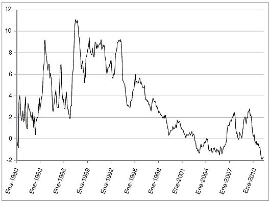

Índice
Portada
Marcador
¿Quién es Jorge Juan?
1. Lo que el euro nos dio, el euro nos lo quitó: crónica de una burbuja anunciada
2. Endeudados hasta las cejas
3. Los bancos y cajas son grandes fondos de inversión inmobiliaria
4. Reestructuración blanda, reestructuración dura
5. Sin dinero para nada: la desagradable aritmética fiscal
6. Nos hacemos viejos y seguimos tan jóvenes
7. Vivir más y mejor sale caro
8. ¿Son incontrolables las finanzas autonómicas?
9. Para que esto no nos vuelva a pasar
10. Cuando baja la marea se ve quién nada desnudo: un modelo de crecimiento agotado
11. La buena educación
12. «¡Que inventen ellos!» O cómo ganar la liga de Shanghái
13. Aquí no hay quien trabaje
14. Las reglas del juego
15. Para evitar una generación perdida
Agradecimientos
Notas
Créditos
¿QUIÉN ES JORGE JUAN?
«La tarea de los economistas es convencer a los agentes sociales y a los gobernantes de que los Reyes Magos no existen.»
LUIS ÁNGEL ROJO
Si usted, querido lector, ha abierto este libro quizá le haya llamado la atención el título o el autor, así que comencemos explicando ambos.
El título, Nada es gratis. Cómo evitar la década perdida tras la década prodigiosa, une dos ideas. La primera es emplear el nombre de un blog, Nada es gratis, en el que los autores de este libro participamos activamente y que se ha convertido, creemos, en una referencia para la discusión de política económica en España. Ya que gran parte del material de este libro ha tenido un primer borrador o un origen en los artículos del blog, era lógico emplear este título. La segunda idea es resaltar que España se encuentra, en estos momentos, en una encrucijada de su historia reciente. La crisis económica que comenzó en 2007 nos ha golpeado con una fuerza inusitada. Las cifras de paro y el descontento en amplios sectores de la población, especialmente entre los más jóvenes, son pruebas contundentes de lo serio de la situación. A menos que España afronte un profundo programa de reformas, nos arriesgamos a que una generación completa pierda los mejores años de su vida. En este libro queremos analizar la situación económica actual de nuestro país, trazar sus orígenes en la última década y proponer un plan de actuación que remedie nuestros problemas.
La economía española es muy agradecida: cada vez que se la ha tratado bien (en 1959, con el Plan de Estabilización; en 1983-1984, con el ajuste del primer gobierno socialista; en 1994-1996, con la reforma y consolidación fiscal para entrar en el euro), España ha crecido, y ha crecido mucho. Creemos, firmemente, que un programa decidido de reformas nos puede llevar muy lejos y conseguir dar un futuro a todos aquellos jóvenes que ahora no lo ven.
El autor, Jorge Juan, es un nombre colectivo que reúne a todos los autores del libro: Samuel Bentolila, Antonio Cabrales, Jesús Fernández-Villaverde, Luis Garicano, Juan Rubio Ramírez y Tano Santos. Aparte de ser un incordio poner esta larga lista de seis nombres en la portada, una autoría colectiva enfatiza que todos somos responsables de las siguientes páginas y que el libro es un conjunto coherente y no un batiburrillo de contribuciones inconexas.
La elección del nombre «Jorge Juan» se justifica por dos razones. La primera es que así se llama la calle de Madrid donde está la sede de la Fundación de Estudios de Economía Aplicada (FEDEA). La fundación, impulsada hace veinticinco años por el añorado Luis Ángel Rojo, es un centro que intenta, desde la objetividad y el rigor, ayudar al debate de la política económica en España. FEDEA, bajo el liderazgo de Pablo Vázquez, fue el centro que nos reunió a todos nosotros hace ya unos años, cuando andábamos perdidos por el mundo, cada uno a lo nuestro. Además, como explicaremos en un momento, el apoyo institucional de FEDEA ha sido básico para este proyecto. La segunda razón es que Jorge Juan fue un gran científico español, en la frontera de su tiempo ilustrado, que trabajó por la mejora de España en todas sus dimensiones, de la económica a la política y cultural, desde la razón y la evidencia empírica. Ésta es una tradición con la que, como españoles y como universitarios, nos identificamos plenamente.
¿QUÉ HACE UN CHICO COMO TÚ
EN UN BLOG COMO ÉSTE?
A principios del verano de 2009, unos cuantos académicos decidimos lanzar un blog sobre economía en español. Éramos un grupo variopinto. Unos vivíamos en el exilio norteamericano (como profesores en las universidades de Columbia, Duke y Pensilvania). Otros más cerca, en Londres (en la London School of Economics) y algunos en nuestro país (en el CEMFI y la Universidad Carlos III de Madrid). Pero a todos nos unía el interés por la economía española: por entender lo que nos pasaba y por intentar difundir nuestra visión de las cosas. Estábamos acostumbrados a leer a diario muchos blogs de economistas, de muy distinto estilo, pero siempre provocadores. Los que vivíamos en España sufríamos una discusión sobre economía muy politizada y en la que la evidencia empírica era lo de menos. Nos parecía, en definitiva, que la discusión sobre economía en España tenía que cambiar de manera profunda.
Tras unos intentos balbuceantes, unas cuantas peleas con el software de hacer blogs y un nombre inicial que no nos terminaba de convencer, se nos ocurrió esto de «Nada es gratis» como nuestro título y lema. La frase es una traducción no literal de algo que Milton Friedman, uno de los grandes economistas de todos los tiempos, siempre decía: «There ain’t no such thing as a free lunch» o, lo que es lo mismo, «no hay almuerzos gratis».
Lo precioso de esta frase es que recoge, de manera concisa pero lapidaria, una de las grandes lecciones de la economía: toda elección tiene un coste. No hay ningún almuerzo gratis porque, si nosotros no lo pagamos, hay alguien detrás que lo está pagando (¿nuestro editor?, ¿el restaurante?, ¿la persona que nos ha invitado?). De igual manera, tener mejores carreteras supone tener menos educación o sanidad, o simplemente menos consumo privado a través de impuestos más altos, pero al final alguien ha tenido que pagar por la carretera.
Algunos de nuestros primeros comentaristas en el blog se quejaban de que ésta era una visión muy fría y comercial de la vida. ¿No son acaso algunas de las mejores cosas en la vida gratis, como una puesta de sol o una bonita canción? Pese a parecer gruñones aguafiestas, teníamos que responder que no. Disfrutar de una magnífica puesta de sol significa que nos estamos perdiendo un partido de fútbol o una cena con los amigos. Escuchar una canción preciosa no nos permite, al mismo tiempo, ver a Tony Soprano en la tele.
POLÍTICAS, NO POLÍTICA
En cuanto nos pusimos a escribir entradas en el blog, nos surgió el problema de cómo queríamos definirnos. Dada la heterogeneidad de opiniones entre nosotros y el hecho de que somos economistas académicos, el verdadero motor de nuestra bitácora era la idea de que hablábamos de políticas y no de política.
En España, como en muchos otros países, los debates se vuelven inmediatamente ideológicos y terminan como algunos plenos de las Cortes, que más parecen clases de religión que debates orientados a resolver los problemas acuciantes que acechan a nuestro querido país.
Nuestro objetivo es poner en el centro del debate la metodología económica moderna, basada en los hechos y la evidencia, y en segundo lugar en el análisis de los incentivos en juego y en cómo interactúan. Partimos, siempre, de cuestiones concretas del orden: ¿cómo funciona este programa educativo en realidad?, ¿cuáles son de verdad las consecuencias de los déficits públicos?, ¿qué sabemos al respecto?
Y analizamos las evidencias desde la economía, que quiere decir que usamos dos, y sólo dos, principios sencillos: incentivos y equilibrio.
Los agentes responden a incentivos. Si entendemos cómo funcionan los incentivos (en una ley, en un programa, o en cualquier situación interpersonal), podremos comprender bastantes de las consecuencias indeseadas de los programas.
Para entender la interacción entre muchos agentes usamos el concepto de equilibrio. Así, en un mercado competitivo, el equilibrio surge del balance entre oferta y demanda que se obtiene por el ajuste de precios; unos precios que hacen que los ajustes en un mercado repercutan en otros.
Un ejemplo exageradamente sencillo: supongamos que los gobiernos dicen que los bancos no pueden caer (si meten la pata, los rescataremos entre todos). Como consecuencia, el coste de prestar a los bancos baja, porque uno siempre va a recuperar el préstamo. Es como ir a un casino sabiendo que si uno pierde le van a devolver el dinero. Por ello, la gente (incentivos, principio 1) va a prestar demasiado a los bancos. Los bancos, que se enfrentan a un precio del riesgo excesivamente bajo, toman demasiados riesgos. Los efectos de equilibrio general (principio 2), nos tememos que ya los hemos visto en el mundo real: dado el precio excesivamente bajo del riesgo, los agentes son capaces de invertir hasta en construir pistas de esquí en el desierto.
NI DE LOS UNOS, NI DE LOS OTROS
A lo largo de estos años nos han acusado de casi todo: de ser excesivamente amigos del gobierno y de ser excesivamente enemigos del gobierno, de ser demasiado liberales y de ser demasiado intervencionistas. El que se nos ataque desde ambos lados de la refriega nos dice que algo debemos de estar haciendo bien.
La verdad es que no somos ni lo uno ni lo otro. Primero porque somos un grupo de economistas y entre nosotros mismos no siempre estamos de acuerdo. Segundo, porque como economistas tendemos a ver, quizá en exceso, lo de «por un lado…» y «… pero por otro».
Nuestro objetivo no es apoyar a nadie. Es hablar un poco más de qué funciona y cómo funciona, y un poco menos de reiterar las ideas preconcebidas de cada uno que, sinceramente, a los demás nos dan igual y no llevan a convencer a nadie. A España no la va a salvar del desastre en que estamos inmersos el que tengamos clases de religión o de ciudadanía; lo que hace falta es que los niños aprendan inglés y matemáticas. Y para eso precisamos mucho más debate sobre qué sistemas educativos funcionan, por qué funcionan y qué hace falta cambiar. Y muchos, muchos menos insultos cruzados sobre si uno es o no es de tal ideología. Lo bueno de la blogosfera es que es libre, y los que quieran reafirmarse en sus concepciones no tienen más que ir a otro sitio. En nuestra bitácora y en este libro estamos para aprender, lo que requiere estar dispuesto, entre otras cosas, a cambiar de opinión en cualquier tema basándonos en la evidencia y el análisis.
NO SE LO DIGA A NUESTROS DECANOS
Algunas veces nos preguntan por qué participamos en un blog que además no tiene anuncios, y por tanto lo único que genera es gastos. Encima, nosotros somos economistas académicos, lo que significa que nuestros decanos y rectores, que son nuestros jefes de verdad, quieren que escribamos en revistas científicas y no perdamos el tiempo en otras cosas. Y no son sólo nuestros decanos y rectores. En la profesión de economista lo que cuenta son las publicaciones en la American Economic Review, no el salir en el Financial Times, cosa que en el mejor de los casos es considerado irrelevante y en el peor una frivolidad.
Entonces, ¿por qué? Pues por dos motivos. El primero es que queremos ayudar y devolver a la sociedad parte de los considerables recursos que ésta ha empleado en nuestra formación y en nuestra investigación. A fin de cuentas, el altruismo es perfectamente compatible con la teoría económica moderna (como hemos repetido a menudo, los economistas suponemos que los agentes maximizan su bienestar, no su riqueza, que es algo bien distinto). El segundo es que nos encanta hablar de economía y hacerlo para todo el mundo, y el blog —y también, desde ahora, este libro— es una excusa perfecta para hacerlo.
LA HOJA DE RUTA
Pero vayamos ya al libro. Tiene tres partes. En la primera hablamos del origen de la situación actual: la burbuja, la crisis de la deuda y la delicada situación de nuestro sector financiero. En la segunda, repasamos la situación de nuestras cuentas públicas, tanto en el corto y medio plazo, como en el largo (pensiones y sanidad), incluido un capítulo sobre esa jungla de confusión que es nuestro sistema de financiación autonómica. En la tercera parte miramos hacia el futuro: hablamos de por qué España tiene un modelo de crecimiento económico agotado y de lo que hay que hacer para que cambie, desde reformas del mercado de trabajo hasta la educación, la investigación o la justicia. Finalmente, formulamos unas breves reflexiones a modo de conclusión.
Aunque el libro tiene una estructura lógica, de progresión de un tema al siguiente (la crisis de la deuda privada causa la crisis de la deuda pública, y ambas la necesidad de un nuevo modelo de crecimiento que nos saque del marasmo), hemos intentado que los distintos capítulos sean «modulares» y lo más claros posible y accesibles a todos los lectores ajenos al mundo de los economistas y su jerga. Si usted, querido lector, encuentra un capítulo aburrido, difícil de seguir o simplemente no le interesa, sea benevolente con Jorge Juan, sálteselo y vaya directamente a lo que le llame la atención.
UNAS ADVERTENCIAS FINALES
El lector se preguntará, con razón, por qué no hablamos de muchas otras cosas importantes, como inmigración, energía o medio ambiente. Hay dos motivos. Uno, el espacio. No queríamos alargarnos en demasía, para evitar el peligro del libro o tesis enciclopédica en la peor tradición escolástica y cuyas mil doscientas páginas no lee nunca nadie. Mejor ser cortos aunque sea a riesgo de dejarnos cosas entre los bytes del ordenador. El segundo motivo es que de muchos de esos temas no tenemos nada muy original que decir. En España sufrimos mucho del intelectual que pontifica igual sobre historia de España que sobre cine ruso o política exterior de Nueva Zelanda. Nosotros somos más limitados en nuestras capacidades. Sabemos sólo de algunas cosas y ésas son las que intentamos explicar en el libro.
Además somos conscientes de que no siempre acertaremos. Si dentro de unos años podemos volver al libro y comprobar que hemos dado en la diana aproximadamente un 60 o 70 por ciento de las veces, ya estaremos más que satisfechos. Aspirar a más está vetado a los meros mortales.
Por último, una advertencia adicional a nuestros lectores que sean economistas profesionales. Con este libro estamos intentando llegar al lector inteligente preocupado por la situación económica de España, pero que no se dedica a esto. Aunque hemos intentado ser rigurosos, muchas de nuestras afirmaciones en los capítulos siguientes no serán tan precisas como las escribiríamos en un libro académico y hemos reducido las referencias bibliográficas al mínimo.1 Por ejemplo, hablamos mucho de deuda, pero las palabras Modigliani-Miller2 no aparecen nunca. Esperamos que nuestra elección entre rigor y sencillez sea la «óptima». En todo caso, pedimos disculpas por las posibles incorrecciones que se nos hayan colado en el texto final.
Bueno, ya no nos demoramos más: empecemos con el primer plato, la crónica de una burbuja anunciada.
1
LO QUE EL EURO NOS DIO, EL EURO NOS LO
QUITÓ: CRÓNICA DE UNA BURBUJA ANUNCIADA
EL EURO, LA PRIMA DE RIESGO
Y LA DEMANDA INMOBILIARIA
La entrada de España en el euro nos trajo muchas cosas buenas, desde monedas y billetes nuevos hasta tener que pensar los precios en unidades con menos ceros. Lo que quizá no era tan obvio ese 1 de enero de 1999 es que, de repente, los fondos de pensiones alemanes, las aseguradoras francesas y los bancos holandeses podían prestar dinero en España y adquirir activos (bonos hipotecarios, bonos del Estado, etc.) en la misma moneda que ellos empleaban. Estos préstamos en una divisa común habían sido, previamente, muy complejos (si no imposibles), lo que limitaba su cuantía. Desde la perspectiva de una institución extranjera, la entrada de España en el euro supuso un cambio radical en la percepción de cuánto riesgo suponía prestar a una entidad española.
El resultado de esta reducción del riesgo de invertir en activos españoles fue la caída de la prima de riesgo que teníamos que pagar sólo por ser españoles cada vez que queríamos pedir dinero prestado. Como se ve en el gráfico 1, entre 1990 y 2005, los tipos de interés reales, los que determinan el coste de su hipoteca, de la letra de su coche, etc., cayeron un 10 por ciento. En algunos años de ese período, como en particular entre 2002 y 2006, los tipos de interés reales (iguales a los nominales menos la inflación) fueron incluso negativos.
GRÁFICO 1
1986-2006: Caída de los tipos de interés reales

Fuente: Banco de España. Mibor hasta enero de 1999, Euribor desde entonces. Inflación: Instituto Nacional de Estadística (INE), Índice de precios de consumo (IPC), 2010.
Además, y a diferencia de otros países de nuestro entorno, prácticamente todos los préstamos hipotecarios en España (el 97 por ciento en 2005) se contratan a tipo de interés variable. Por ello, la cantidad mensual que las familias pagan por endeudarse es tremendamente sensible al aumento repentino de la disponibilidad de crédito (y, desgraciadamente, igual de sensible a la caída de esta disponibilidad). Como consecuencia, las familias españolas, y también los bancos y empresas, podían utilizar esta repentina bonanza para endeudarse a un precio mucho más barato. Pero ¿endeudarse para qué? ¿Qué hacer con este dinero barato?
La respuesta a estas preguntas la conocemos todos: para comprarse una casa. La financiación a las familias para la adquisición de vivienda ascendió de 100.000 millones de euros al principio de la década a 600.000 millones al final de ésta. Constructores y promotores no se quedaban atrás y se endeudaban por 420.000 millones de euros. La suma de la deuda por los dos conceptos era en 2007 mayor que el producto interior bruto (PIB) anual de España.
Pero ¿por qué se produjo una burbuja en España y no en otros países europeos? Primero, porque la caída de los tipos fue más grande en España. Los alemanes ya se financiaban desde hacía décadas a tipos bajos. Éramos nosotros los novatos en la fiesta del dinero barato. Existía además un factor cultural; históricamente, y quizá por buenas razones, la mayor parte de la riqueza de las familias españolas ha estado concentrada en el sector inmobiliario: nueve de cada diez euros de activos de las familias españolas son inmobiliarios, una cifra mayor que en los otros países para los que existen tales datos.1 Además, la desquiciada regulación del alquiler de vivienda no ayudaba en absoluto a la existencia de alternativas a la propiedad de la residencia. Las familias aspiraban a comprar una vivienda, otra segunda vivienda para vacaciones, y quizá pisos para los hijos. Todos hemos oído en nuestros bares, reuniones familiares y demás fiestas de guardar el consejo: «Invierte en vivienda, los ladrillos siempre están ahí».
Por otro lado, la demanda crecía en estos años por razones objetivas. Aunque la población nacida en España no estaba creciendo, la demografía favorecía la burbuja: los españoles que nacieron en los años setenta del siglo pasado, el final de nuestro baby boom, estaban en edad de comprar, a la vez que los divorcios iban creciendo. Además, como consecuencia de la burbuja, y contribuyendo a su prolongación, se produjo una enorme llegada de inmigrantes, que pasaron del 2 por ciento de la población española al 12 por ciento entre 1999 y 2009. Como resultado de todos estos factores tuvimos un elevado incremento del número de hogares, que alcanzó en la década que acaba en 2007 los casi 400.000 al año (según los datos de la Encuesta de población activa, la famosa EPA). Y cada nuevo hogar era un demandante potencial de una nueva casa.
Total, que se juntó el hambre con las ganas de comer: hipotecas baratas por primera vez, ganas de comprar casas y muchos hogares nuevos.
LAS CAJAS SE DESMELENAN
Pero esto aún no explica una explosión del crédito hipotecario. ¿Cómo es posible que hubiera financiación para algo que no era, en la mayor parte de los casos, más que castillos en el aire?
En Estados Unidos la respuesta fue la titularización de la deuda hipotecaria de peor calidad. Esto suena muy complicado, pero no era más que poner juntas docenas de hipotecas de mala calidad, dividirlas en trocitos y venderlas a terceros inversores con la idea de que «malo sería que todas las hipotecas nos fallen a la vez» (aunque claro, luego resultó que sí, que todas fallaron a la vez).
La respuesta en España fue distinta. Una vez más, Spain is different. Para entender lo que nos pasó hay que mirar a la estructura de nuestro sistema financiero.
El sistema financiero español está dividido en dos partes más o menos iguales. Por un lado, están los bancos de toda la vida, con accionistas convencionales que se reparten los beneficios que obtengan del negocio. Por el otro, tenemos un sector sin ánimo de lucro: básicamente las cajas de ahorro. Las cajas son instituciones peculiares, con fines sociales, que originalmente tenían una sólida base territorial y a las que sólo se les permitía operar en la provincia donde tenían su sede.
Estas instituciones fueron poco a poco sometidas, debido a las reglas de movimientos de capitales de la Unión Europea, a un proceso de liberalización y desregulación. Sin embargo, como tantas veces pasa en España, el proceso se paró a la mitad y las cajas nunca estuvieron sujetas a la disciplina del mercado. Muchas cajas jugaron el papel de un adolescente que aún no ha madurado, pero al que sus padres dan libertad porque «ya es mayorcito» y «él verá lo que hace».
Primero, a partir de 1988, se permitió a las cajas operar en toda su región, aunque con excepciones. Luego, con la entrada en vigor de la segunda directiva de la Unión Europea sobre banca, el 31 de diciembre de 1992, estas restricciones desaparecieron. Desde ese momento, las cajas eran libres de operar a lo largo y ancho de todo el país, con excepciones sólo si no alcanzaban la solvencia que requería la legislación.
El resultado de estos cambios normativos fue un gran aumento de la competencia y una diversificación geográfica intensa de las cajas. Uno se encontraba con una sucursal de Caja Madrid en la mitad del Ampurdán y con una de Caja Sur en el Bierzo. Mientras que en 1991 había veinticinco provincias en las que una sola caja poseía una cuota de mercado del 75 por ciento, en 1995 eran sólo diecisiete provincias, diez en 1999 y ninguna en 2007. Del mismo modo, las sucursales de las cajas se multiplicaron como hongos hasta llegar a la inaudita cifra de casi 25.000 sucursales a comienzos de 2008, una por cada 1.800 habitantes. Fruto de esta expansión, las cajas de ahorro ganaron cuota de mercado frente a los bancos, del 40 por ciento en 1991, al 47 por ciento en 1999 y al 54,5 por ciento en 2007.
La expansión de las cajas tuvo dos características propias. Primero, se basó en gran parte en activos inmobiliarios. La forma en que las cajas entraban en un mercado nuevo era mediante un préstamo a un promotor inmobiliario, lo que les permitía luego subrogarse en los préstamos de todas las personas que vivirían en la urbanización. Encima, a las cajas se les olvidó lo que decía Groucho Marx: que no quería pertenecer a ningún club que permitiera entrar a un tipo como él. Las cajas sufrían de un coste escondido, ya que entraban en nuevos mercados precisamente haciendo negocios con aquellos constructores que no habían sido capaces de encontrar dinero en sus fuentes tradicionales en esa zona geográfica, o en todo caso, a un precio inferior al que tales fuentes exigirían.
Además, muchas cajas sencillamente no sabían lo que hacían. Son precisamente las cajas donde el capital humano era más bajo las que concedieron más préstamos inmobiliarios y donde hay ahora más préstamos en mora y más impagos.2 Los datos demuestran que una caja administrada por un directivo sin educación de posgrado, sin experiencia anterior en banca y con nombramientos políticos previos tiene, de media, una proporción significativamente mayor de préstamos inmobiliarios, menor proporción de préstamos personales, una mayor tasa de préstamos morosos (un 40 por ciento más alta) y un rating menor.
En definitiva, si es cierto que había unos ciudadanos ansiosos de comprarse una casa, había también un segmento grande del sector financiero desesperado por financiar los préstamos de manera indiscriminada a los compradores y promotores para expandir con ello su negocio. Como el euro permitía a estas entidades endeudarse sin fin, una vez que las cajas hubieron utilizado todos los depósitos de los que disponían para financiar préstamos, procedieron a pedir prestado capital en los mercados internacionales, para a su vez poderlo prestar a las familias y empresas. Las entidades internacionales, viendo préstamos con garantías reales, y en euros, estaban encantadas de prestarles.
CÓMO COCINAR UNA BURBUJA
Ya tenemos los ingredientes de la receta para cocinar una burbuja: alta demanda residencial, financiación fácil y a precios bajos, y una parte del sector financiero queriéndose expandir. El resultado: la mayor parte del endeudamiento se dirigió al sector inmobiliario. Como hemos dicho, el stock de deuda hipotecaria de los hogares españoles se multiplicó por seis en los diez años posteriores a 1997, alcanzando el 60 por ciento del PIB, es decir, del conjunto de bienes y servicios producidos por los españoles en un año.
A medida que la deuda subía, los precios de las casas se disparaban. El precio medio del metro cuadrado de la vivienda subió desde los 760 euros/m2 en 1998 a los 2.100 euros/m2 en el pico del boom en 2008. Esto supone un incremento del 175 por ciento, comparado con un aumento del índice de precios de consumo (IPC) para el mismo período de sólo el 61,5 por ciento, es decir, en términos reales, como muestra el gráfico 2 (manteniendo el valor adquisitivo de 1995), los precios se duplicaron. Puestos a cocinar burbujas, le dábamos clase al mundo entero. En Estados Unidos, que también sufrió su propia burbuja, pasaron de tener que ahorrar tres sueldos anuales para comprar una casa en 2001 a cuatro en el tope del boom; en España, pasamos de cuatro sueldos anuales a unos ocho, y ahora «sólo» necesitamos unos seis.
A medida que los precios subían, el valor de las garantías reales aumentaba, es decir, los préstamos parecían más reducidos en relación al precio del activo que los garantizaba. En un círculo vicioso, el riesgo percibido por las familias, por los gestores de los bancos y cajas, y por los reguladores, disminuía. Las familias, en su mayor parte (más del 80 por ciento), habitaban viviendas de su propiedad, y el hogar típico (mediano) invertía —según la Encuesta financiera de las familias— más del 80 por ciento de su riqueza en bienes raíces. Así, se sentían cada vez más ricas y menos preocupadas por su creciente endeudamiento. Mientras tanto, los reguladores y gestores prestaban atención a la razón entre el préstamo hipotecario y el valor de la casa. Pero claro, si los precios se disparan, la hipoteca es, en proporción, cada vez más pequeña, y el deudor puede pedir un préstamo más y endeudarse de nuevo.
Gráfico 2
El boom: precios reales por metro cuadrado de la vivienda
Unidades: Euros reales a precios de 1995.
Fuente: Para el precio de la vivienda libre, Ministerio de Fomento; para el IPC, Instituto Nacional de Estadística (INE), 2011.
El resultado es que al final de este período, España se encontró con una elevada subida de precios en el sector inmobiliario, uno de los más altos niveles de deuda privada en el mundo desarrollado (que se calcula en términos brutos en el 300 por ciento del PIB), un enorme número de viviendas construidas entre 1995 y 2007, que creció de manera continuada, pasando de 150.000 anuales a 600.000, y un enorme crecimiento de los préstamos para construcción y promoción inmobiliaria, que pasaron del 8 al 29 por ciento del PIB, y que en ese momento representaban el 42 por ciento de todos los préstamos para actividades productivas.3
La enorme inversión en bienes raíces que era visible a primera vista con la proliferación de bosques de grúas en todas nuestras ciudades, apareció también en las estadísticas. Mientras que en España se llegaron a trabajar más de cien horas por habitante en el sector de la construcción entre 2000 y 2008, en Estados Unidos y en Europa el promedio era de cerca de sesenta horas. El impacto de la burbuja fue particularmente claro en la dependencia que presentaban de ella los ingresos de las administraciones públicas, tanto en el nivel local como en el regional. Como argumentaremos más adelante, estos ingresos hacían parecer a nuestras cuentas públicas mucho más sólidas de lo que de verdad eran.
ANCHA ES CASTILLA
De lo que los españoles no éramos conscientes es de que es difícil que los factores de demanda importen en la determinación del precio de las viviendas en España más allá de unos cuantos años. España es un país con baja densidad de población y excelentes transportes. Por ello, la oferta de viviendas en el medio plazo es muy elástica. Los economistas afirmamos que la elasticidad de la oferta en este contexto es infinita. Con ello queremos decir que si el precio sube, se pueden añadir sin problemas muchas más casas (al contrario que, por ejemplo, la oferta de petróleo o de asientos en el Bernabéu). Por mucho que suba la demanda y se disparen los precios a corto plazo, siempre habrá un pueblo más, y un alcalde más, dispuestos a dar una licencia para construir diez mil nuevos pisos unos kilómetros más allá.
Estas debilidades subyacentes eran evidentes para los observadores externos. Miguel Ángel Fernández Ordóñez, el entonces futuro gobernador del Banco de España, escribió en 2003, con una percepción que resultó desgraciadamente correcta: «Cuando vemos que los préstamos hipotecarios crecen un 22 por ciento y sabemos que la inyección de fondos de la Unión Europea continuará hasta 2006, vemos que el diferencial de crecimiento debido a la demanda interna que se concentra en la construcción puede mantenerse durante algún tiempo. El problema es qué va a pasar cuando la droga de la demanda interna se haya agotado. […] Vamos a ver los efectos negativos que aparecen en la demanda, debidos a la acumulación de deuda de los hogares y la deuda de las empresas públicas que hoy el gobierno oculta. Por otra parte, el fracaso para mejorar nuestra productividad en los últimos años significa que no será capaz de compensar la futura reducción de la demanda interna con una mayor contribución del sector exterior».4
Este diagnóstico no era inusual, y de hecho era compartido por expertos académicos tales como José García-Montalvo, quien en 2003 concluía en un estudio sobre el mercado inmobiliario español: «En resumen, es muy probable que el mercado inmobiliario español sea una bomba de relojería esperando a ser detonada. El hecho de que exista una gran incertidumbre sobre el momento en el que el timer llegará a la marca de on no justifica el obviar que es muy difícil que las expectativas futuras de los fundamentales puedan justificar los precios» (los fundamentales son las principales variables que determinan los precios de la vivienda, es decir, la renta de las familias, los tipos de interés, etc.).5
También Miguel Sebastián, el entonces futuro ministro de Industria, en un artículo en El País del 22 de junio del 2003, expresivamente titulado «El ladrillo y la burbuja», caracterizaba nuestra economía con la frase «mucho ladrillo, poco chip y tornillo».6 Lo que ninguno de ellos podía imaginar en aquel momento era que la burbuja se inflaría aún cuatro años más.
EL COYOTE Y EL CORRECAMINOS
Dado el nivel de apalancamiento de la economía española y la gran burbuja en el sector inmobiliario, podría haberse esperado que España entrara en la crisis al mismo tiempo que el Reino Unido o Estados Unidos. En cambio, España experimentó una larga etapa de «crisis suspendida». Como el Coyote que persigue al Correcaminos en los dibujos animados, que sólo se cae cuando descubre que está en el aire, la crisis tuvo un período inicial durante el cual la economía se desaceleró a un ritmo creciente, pero seguía creciendo. Sí, el empleo disminuía rápidamente, pero el sistema financiero aguantaba sorprendentemente bien. Como resultado, el orden en que se produjo la crisis en España fue el contrario al de los demás países que experimentaron burbujas inmobiliarias (Estados Unidos, Reino Unido e Irlanda): nosotros empezamos por una crisis económica general y sólo entonces tuvimos una crisis financiera.
NO SE PONEN MÁS LADRILLOS
La primera etapa de la crisis fue una parada repentina en el sector de la construcción. Entre 2007 y 2008, según el Instituto Nacional de Estadística (INE), el número de permisos de construcción cayó desde 634.098 a 268.435 viviendas. En lugar de sufrir un fuerte ajuste de los precios (lo que probablemente habría llevado a una crisis financiera), el mercado se congeló. El número de operaciones trimestrales, una vez corregido el efecto estacional, cayó de 230.000 a alrededor de 100.000. Mientras tanto, la caída de los precios era muy pequeña, menor que, por ejemplo, en Estados Unidos o Irlanda. En España, los precios cayeron un 15 por ciento en los treinta meses desde el pico de 2007, mientras que en Estados Unidos el índice de precios de la vivienda en las principales ciudades, Case-Shiller 20, cayó más de un 30 por ciento en los treinta y tres meses a partir de su techo en junio de 2006.
Inicialmente, la parada repentina en la construcción causó una reducción del crecimiento del PIB en 2008 y una contracción del PIB en 2009 similares a los de la zona euro. Lo que fue diferente en España es la enorme reducción de empleo que acompañó a esta caída. En 2008, el PIB seguía creciendo, el desempleo aumentaba hasta en tres puntos, llegando al 11,3 por ciento. En 2009 se elevó al 18 por ciento.
Esta subida del desempleo no fue sólo una consecuencia del desplome de la construcción. La caída del empleo por cada punto de caída del PIB es mayor en España que en cualquier otro país, incluso si excluimos la construcción. Por otra parte, los salarios reales, a pesar de la gran crisis de demanda, no sólo no cayeron, sino que aumentaron. Por ejemplo, mientras el empleo se redujo en un 23 por ciento en el sector de la construcción en 2009, los salarios reales aumentaron en un 3,1 por ciento. Aparecen paralelismos muy cercanos al patrón del mercado de viviendas: ajustes en cantidades muy grandes y pequeños ajustes en los precios (o incluso, como en el caso de la construcción, con incrementos del desajuste).
Una consecuencia inmediata de esta evolución negativa en los niveles de la construcción y del empleo fue un fuerte deterioro de las cuentas públicas, con una caída de trece puntos del saldo presupuestario del gobierno en dos años.
EL IMPACTO SOBRE EL SECTOR FINANCIERO
Inicialmente el sector financiero no se vio afectado dramáticamente por la crisis. Esto se debió a tres factores. El primero, la falta de exposición de los bancos españoles a la crisis de los valores hipotecarios de Estados Unidos, en buena medida gracias a las restricciones reglamentarias impuestas por el Banco de España. El segundo, el lento descenso de los precios de bienes raíces, lo que facilitó la estrategia de mantener los activos y ampliar los préstamos esperando «hasta el repunte de los precios». Y, finalmente, el tercero, la existencia de un colchón de provisiones «genéricas» relativamente grande (25.000 millones de euros), debido a un modelo de provisiones que forzó el Banco de España y que discutiremos más adelante.
Los problemas en el sector financiero, cuando vinieron, vinieron de repente. A partir de mayo de 2010, y hasta las pruebas de esfuerzo de julio de 2010, el acceso a los mercados financieros se redujo para todos los bancos y cajas españolas con la excepción del Banco Santander y el BBVA. Junto con grandes aumentos en las primas de riesgo que tenían que pagar en los préstamos mayoristas (los que las grandes instituciones financieras se hacen unas a otras), los bancos y cajas españoles sufrieron una huida de depósitos minoristas al extranjero. La fuente de estos problemas era la falta de confianza en la transparencia de la información proporcionada por los bancos y la preocupación por el elevado aumento del paro y la falta de ajuste en el mercado inmobiliario. Pasemos a explicar, en los capítulos siguientes, estos aspectos.
2
ENDEUDADOS HASTA LAS CEJAS
Las finanzas algunas veces asustan por su aparente complejidad, pero en realidad las ideas principales son muy sencillas. La mejor manera de verlo es con una historia ficticia con la que, simplificando sólo un poquito, aprenderemos tres lecciones importantes.
PROMOTORA ATRACTIVA BUSCA BANCO INTERESADO
Imagine el lector que acabamos de ver una parcela en un sitio fantástico, con unas vistas increíbles y que, encima, es edificable. Llamamos a un arquitecto, hacemos números y resulta que, con dos millones de euros, podemos conseguir la parcela y construir para la venta una docena de chalets. Las perspectivas son espléndidas. Hay un boom inmobiliario y miles de familias andan locas por comprar el chalet de sus sueños.
Topamos sin embargo con un pequeño escollo: sólo tenemos un millón de euros y necesitamos encontrar el otro millón. Así que acudimos a usted, amable lector, ya que da la casualidad de que es usted el propietario y director del afamado Banco Lector. Después de mirar los datos del proyecto, concluye que es una buena idea y decide poner el millón que nos hace falta encima de la mesa.
Llegados a este punto, el Banco Lector puede financiarnos de dos maneras distintas. Una es darnos el millón en forma de capital: fundamos una sociedad de promoción inmobiliaria, Promotora Nadaesgratis, de la que nosotros somos accionistas al 50 por ciento y el Banco Lector por el otro 50 por ciento. Nosotros ponemos un millón de capital y el Banco Lector el otro millón (que suponemos viene de su propio capital). Con esta opción, el Banco Lector tiene derecho al 50 por ciento de todos los beneficios y pérdidas asociados con el proyecto.
La segunda opción es que el Banco Lector nos preste el millón en forma de deuda y así la Promotora Nadaesgratis es al ciento por ciento nuestra. Con esta alternativa, el Banco Lector tiene derecho a recibir el principal, un millón, más los intereses en el vencimiento acordado, un año, que es el tiempo que hemos calculado que tardaremos en construir y vender los chalets. Para simplificar la exposición supongamos, como es el caso actual, que los intereses son bajísimos y para hacerlo todo más simple supongamos que son cero (esta simplificación no cambia nada sustancial en el ejemplo).
ESTO NO ERA LO QUE NOS ESPERÁBAMOS
Pasa el año acordado. Las cosas pueden habernos ido bien: hemos construido y vendido los chalets sin problema ni demora. En este caso, la Promotora Nadaesgratis reparte beneficios o devuelve la deuda, dependiendo de la forma de financiación acordada.
Pero las cosas pueden haber ido mal. Quizá resultó que al cavar los cimientos, descubrimos un suelo horrible para construir y tuvimos que gastarnos una fortuna en solucionarlo. O, simplemente, los precios de los chalets se han desplomado y la única salida es malvenderlos a bajo precio. Por manejar números fáciles, supongamos que de los dos millones iniciales sólo queda un millón. Si el Banco Lector invirtió en forma de capital, entonces hay reparto de pérdidas, 500.000 euros para nosotros y 500.000 euros para el banco. Usted carga esos 500.000 euros de pérdida contra su capital.
Si por el contrario la inyección de fondos se realizó mediante deuda, el proyecto revierte de forma completa al acreedor, el Banco Lector, ya que el millón que le debemos es precisamente lo que queda del proyecto original. El negocio ha sido un fracaso para nosotros, pero no hay pérdida para usted.
Tenemos un caso aún peor, y es el que ocurre si de los dos millones originales sólo quedan 250.000 euros y la financiación fue en forma de deuda. Aquí se abren varias posibilidades. La primera es que Promotora Nadaesgratis se acoja a la ley concursal, declarando la quiebra del negocio. El acreedor, usted, el Banco Lector, se hace con la propiedad de los activos y, esto es importante, reconoce la pérdida en su inversión. ¿Qué significa esto? Promotora Nadaesgratis le debía un millón. Este millón era el que llevaba en sus libros como valor del activo, que era este préstamo. Ahora sólo quedan 250.000 euros y hay que reconocer pérdidas de 750.000. Contablemente, lo que se hace es que usted rebaje el valor del activo de un millón a 250.000 y, maravillas de la contabilidad, que haga lo correspondiente con su pasivo con una rebaja del valor del capital del banco en los 750.000 euros de pérdidas. Si tenemos suerte, y el Banco Lector ha sido prudente a lo largo de los años, habrá suficiente capital para absorber la pérdida y, aparte del disgusto, todo se acaba aquí.
Pero ¿y si no fue prudente y el banco no tiene suficiente capital? Usted tiene ahora dos caminos. El primero es decir «hasta aquí hemos llegado», declararse en quiebra y cerrar el Banco Lector.
MI PROMOTORA ES UN ZOMBI
El segundo camino es más seductor, pero también más peligroso. Usted decide que no es «conveniente» asumir la pérdida porque abriría un agujero inasumible en su balance. Para evitarlo, ofrece a Promotora Nadaesgratis un nuevo préstamo con que pagar el anterior y evitar la asunción de la pérdida. Esto es un truquito contable que no necesita de «dinero» alguno: usted nos da un millón de euros que inmediatamente le devolvemos como pago del anterior préstamo. Usted y nosotros sabemos que Promotora Nadaesgratis sólo vale 250.000, pero un inversor externo no lo sabe y quizá tampoco el Banco Central, el supervisor del Banco Lector. Una vez terminado este trapicheo, el Banco Lector, consciente de la existencia de pérdidas «escondidas» en su balance, empezará un lento proceso de acumulación de recursos para absorber, cuando pueda, la pérdida de esos 750.000 euros. Ello conlleva ser más exigente en la concesión de nuevos créditos, que sólo se darán a los proyectos más seguros. Mientras tanto, Promotora Nadaesgratis sigue abierta a pesar de ser insolvente: es una empresa zombi. «¡Qué más nos da! —pensamos nosotros—. Total, estamos ya en quiebra y manteniendo la empresa con algo de vida, malvendiendo chalets conseguimos pagarnos los salarios y, quién sabe, a lo mejor el negocio mejora. Cosas más raras se han visto.» El que sale perdiendo de todo esto es el joven emprendedor al que el Banco Lector no le da un crédito para una nueva gran idea porque el capital está «atado» a la zombi Promotora Nadaesgratis.
VENTE A ALEMANIA, BANCO LECTOR
Démosle ahora un giro internacional a la historia para hacerla más interesante. Supongamos que el Banco Lector tiene a su vez una deuda que satisfacer con otros inversores, pongamos un banco regional alemán. Usted no tiene activos para hacerlo. El préstamo a Promotora Nadaesgratis no ha generado sino pérdidas, así que no hay más remedio que refinanciar la deuda: cambiar un bono por otro de mayor vencimiento. Pero los bonistas alemanes sospechan que algo huele a podrido en su cartera. Se sabe que el Banco Lector tiene una exposición grande al sector inmobiliario y el colapso del mercado de la vivienda es público y notorio. ¿Cómo es posible que el Banco Lector no tenga pérdidas en su cartera?
Preocupados, los inversores alemanes sólo están dispuestos a refinanciarle a cambio de un tipo de interés que les compense por el riesgo adicional que están asumiendo. Usted, consciente de que a esos tipos de interés el banco no es viable, reacciona intentando la sustitución de un pasivo por otro.
Y… ¿cuál es el pasivo de un banco por antonomasia? Los depósitos. Así que, ni corto ni perezoso, usted se lanza a captar pasivos de otras entidades financieras y lo hace ofreciendo a sus nuevos clientes tipos de interés altísimos a sabiendas de que, siendo costosos, dichos tipos son su única posibilidad de supervivencia. Otros bancos, competidores suyos, reaccionan incrementando a su vez los tipos de interés que ofrecen a sus depositantes en un intento de retenerlos, disminuyendo los beneficios y poniendo a otros bancos que estaban en una situación marginalmente mejor que su banco en una posición imposible.
El Banco Central, viendo el caos en el mercado bancario y consciente de que un país necesita un sistema financiero sano, empieza a inyectar capital para mantener con vida al Banco Lector (para aparentar, lo llama deuda, pero los bonistas privados sospechan que si llega el caso, esta deuda será la primera en absorber las pérdidas).
¿Por qué lo hace? A lo mejor porque había insistido con anterioridad en que todo estaba bien y que el sistema en su conjunto tenía bastante capital para absorber la peor de las crisis. Admitir ahora que un banco importante tiene problemas de solvencia llevaría a muchos a pensar que a lo mejor no es el único. O quizá porque está legítimamente preocupado por la salud del sistema y prefiere refinanciarlo en su conjunto. En su ausencia pagarían «justos por pecadores» y habría un colapso del mercado crediticio. En todo caso, ahora no sólo tenemos una empresa zombi, sino también un banco zombi y pronto una sociedad zombi.
La primera lección de esta historia es que todo esto se habría evitado si la financiación fuese en forma de capital, en vez de en forma de deuda (o con deuda plenamente respaldada por capital del banco). Por ejemplo, la burbuja de Internet, de 1996-2001, se financió con capital y al estallar, el ajuste fue rápido y automático. La segunda lección es que, en una economía moderna, los balances de las familias y de las empresas están encadenados. Este encadenamiento complica cualquier proceso de renegociación y ralentiza el ajuste con el surgimiento de zombis. Por ello las crisis de deuda son crisis prolongadas. La tercera lección es que el supervisor tiene una tendencia al rescate de los supervisados, lo cual puede empeorar más las cosas.
DE TE FABULA NARRATUR:1 NUESTRA HISTORIA
Y LA DE ESPAÑA
El endeudamiento privado de España y la crisis que padecemos no es más que una versión, con algunos detalles más, de la historia que acabamos de contar. Buena parte de los problemas de España vienen del endeudamiento que ahoga a familias y empresas. Es más, es precisamente este endeudamiento el que hace que esta crisis sea muy diferente de las que sufrimos en el pasado. Esta crisis requiere un diagnóstico y un tratamiento diferente. Comencemos con el diagnóstico. El remedio, sanear el sistema financiero y las reformas estructurales para crecer más, tendrá que esperar todavía unos capítulos.
Como decíamos, el boom inmobiliario se financió con deuda. Esto no es una sorpresa. El contrato habitual entre hogares y entidades financieras es la hipoteca, una deuda con garantía real (el inmueble). Estas hipotecas, a su vez, suelen ser financiadas por los bancos y cajas con su propia deuda. Como en España, aun con tasas de ahorro muy altas, no había recursos suficientes para todas estas hipotecas durante los años del boom inmobiliario, esta deuda de los bancos y cajas fue comprada, en buena medida, por entidades extranjeras. Los alemanes y los holandeses pagaron la madre de todas las fiestas inmobiliarias.
Pero cuando un país se financia en el exterior, esto supone, por una identidad contable, que está importando más bienes y servicios que los que exporta. Los alemanes nos enviaban lavadoras para instalarlas en las nuevas viviendas compradas por las familias, las familias pagaban por las lavadoras con un crédito de la caja local y la caja local tenía a su vez un crédito de un banco alemán que era el dueño de la fábrica de lavadoras. En resumen: España compraba lavadoras (déficit comercial) y se financiaba en Alemania. En el mundo real puede haber más pasos intermedios, pero el resultado final es el mismo.
El gráfico 1 ilustra estos mecanismos. La primera línea muestra el crédito a empresas y familias dividido por el PIB desde finales de 1974 hasta finales de 2010. El gráfico también nos enseña el saldo total del pasivo de las administraciones públicas dividido, una vez más, entre el PIB (aunque en este caso con una serie más corta). No todo el endeudamiento del sector privado se debe a créditos concedidos por bancos y cajas. Las empresas, sobre todo nuestras multinacionales, también emiten deuda, por lo que el gráfico sólo puede ser tomado como una estimación sesgada a la baja de los pasivos de empresas y familias.
Gráfico 1
Crédito a empresas, familias y administraciones públicas concedido por las entidades de crédito como fracción del PIB
Fuente: Banco de España e INE.
Los primeros treinta años del gráfico documentan una historia de endeudamiento privado estable alrededor del 60 al 65 por ciento del PIB. De repente, en la segunda mitad de los años noventa, el crédito explota de una forma imparable hasta alcanzar el 177 por ciento del PIB en el segundo trimestre de 2009, el pico de la serie histórica, zona donde parece haberse estancado. El sector privado español está endeudado como no lo ha estado en su historia.
Las administraciones públicas tienen una historia distinta. Inicialmente ponen en práctica un fuerte proceso de consolidación fiscal, que lleva la deuda de un 80 por ciento del PIB a comienzos de 1998 a un mucho más brillante 44 por ciento a comienzos de 2008. A partir de ahí, el fuerte deterioro de las cuentas públicas, que discutimos en detalle en el capítulo 3, hace que sus pasivos salten, en sólo dos años y medio, a un 71,5 por ciento.
La lección del gráfico 1 es que lo ocurrido en los últimos quince años de nuestra historia es una anomalía sin precedentes. La burbuja crediticia en España es un hecho sin discusión. Pero ¿somos los únicos en esta situación?
¿Y LOS DEMÁS?
Como la burbuja crediticia coincide con nuestra entrada en el euro, uno podría estar tentado de pensar que lo mismo le pasó a nuestros vecinos de la eurozona. ¿Es éste el caso? La respuesta es no. El gráfico 2 muestra, ahora con datos de Eurostat (la agencia estadística de la Unión Europea), el endeudamiento del sector privado en los cuatro «grandes» países de la eurozona: Francia, Italia, Alemania y España.
Gráfico 2
Préstamos a empresas y familias como proporción del PIB en Alemania, Francia, Italia y España, desestacionalizado
Fuente: Eurostat.
Alemania no ha vivido una expansión crediticia. Francia e Italia, sin embargo, sí experimentaron una cierta expansión, pero empezaban con unos niveles inferiores a los alemanes, con los que han convergido. Los datos españoles muestran una evolución completamente distinta. España, que al principio del período estaba ligeramente por encima de Francia e Italia, alcanza los niveles de endeudamiento alemanes en 2004, para después superarlos claramente. Sólo Irlanda (que no incluimos por ser un país muy diferente en tamaño y organización) experimentó un crecimiento del crédito mayor que el nuestro.
Los cuatro países del gráfico 2 tienen estructuras económicas muy distintas y por tanto necesitan tener niveles distintos de crédito. Por ejemplo, en España accedemos a la vivienda mucho más en propiedad, y no en alquiler, que nuestros vecinos. Esto requiere un mayor endeudamiento de las familias. Pero esta peculiaridad hispana, con sus graves implicaciones, no es novedosa, y por tanto no puede explicar el patrón de endeudamiento de los últimos años. Nada ha cambiado lo suficiente en la estructura económica de España para justificar un endeudamiento tan distinto al de los países de referencia en el euro.2
LAS FAMILIAS Y LA DEUDA
Aunque las dos partidas del crédito, a empresas y a familias, han crecido en términos absolutos, la relacionada con los hogares creció aún más. El gráfico 3 muestra la evolución del porcentaje de crédito concedido por bancos y cajas a la financiación de las actividades productivas (empresas) y a los hogares, como porcentaje del total del crédito concedido por dichas entidades al sector privado.3 La historia reciente del endeudamiento de nuestro país es también la historia de la gran expansión del crédito a las familias. Esto constituye una novedad respecto a nuestro pasado financiero y supone nuevos retos para bancos y cajas.
Gráfico 3
Porcentaje del crédito concedido por las entidades de crédito a la financiación de las actividades productivas y a los hogares sobre el total del crédito concedido
Fuente: Banco de España, datos trimestrales.
El principal motivo de este endeudamiento es, por supuesto, que las familias españolas se hipotecaban para acceder a la vivienda en propiedad (aunque también es importante la segunda vivienda). Como la burbuja llevó a una notable apreciación del valor de los inmuebles, las familias han tenido que utilizar un porcentaje mayor de su capacidad de endeudamiento para financiar la compra de casas. Así, en el cuarto trimestre de 1992, el 58 por ciento del crédito destinado a las familias se dedicaba a la adquisición y rehabilitación de viviendas. Dieciocho años más tarde, a finales de 2010, esta cifra es el 81,5 por ciento. Para la familia española, endeudarse es hipotecarse.
DE MEDIA NO ESTAMOS TAN MAL
Al mismo tiempo, el balance agregado de las familias españolas no es tan malo. Esto lo vemos en el gráfico 4, que muestra la posición financiera neta de las familias como porcentaje de la suma de los activos financieros en posesión de los hogares. Esto es, tomamos todos los activos financieros (efectivo, acciones, etc.) y restamos las deudas de las familias, para obtener la posición financiera neta. Luego, dividimos esa posición neta entre el tamaño de los activos para obtener la posición de las familias como porcentaje del balance. Este cálculo excluye importantes activos que también están en el balance de las familias, como las casas.4. A pesar de estas ausencias, este balance muestra la liquidez de las familias: los activos que tienen los hogares para pagar la deuda sin necesidad de vender, por ejemplo, sus casas.
Gráfico 4
Balance financiero de las familias.
Balance neto: activos, menos pasivos, sobre el tamaño del balance financiero (%)
Fuente: Banco de España. Serie trimestral.
El gráfico 4 muestra cómo nuestros hogares tienen un 40 por ciento más de activos financieros que de deuda. Aun así, ha habido un deterioro muy pronunciado de esta posición. Al inicio de nuestra burbuja, allá por el año 1998, la posición financiera neta de las familias rozaba el 74 por ciento; al final de la misma, en 2008, ese número había caído hasta el 42 por ciento. La liquidez de los balances familiares ha bajado muchísimo, con consecuencias graves si la crisis del empleo es prolongada.
CADA FAMILIA DESDICHADA ES DIFERENTE
Pero esta descripción agregada es engañosa y esconde diferencias entre las familias. Hay familias con muchas deudas y pocos activos, y familias con pocas deudas y muchos activos. Una posible fuente de preocupación es si las familias con menor renta soportan una carga importante para satisfacer sus deudas.
Para medir este efecto podemos emplear la Encuesta financiera de las familias (EFF) del Banco de España, elaborada en tres oleadas: 2002, 2005 y 2008. Estos datos nos muestran que, a pesar de que ha habido un fuerte proceso de profundización crediticia en todos los segmentos de la población, la proporción de los hogares con deudas pendientes se incrementa con la renta. Cuanto menos renta, menor es el porcentaje de hogares con deudas pendientes.
Gráfico 5
Porcentaje de hogares con deudas que conllevan pagos por encima del 40 por ciento de la renta del hogar por quintil de renta, con excepción del último quintil que se subdivide en dos.
Fuente: EFF, Banco de España.
Pero cuando se mira más de cerca, vemos que los hogares con menor renta que están endeudados soportan una fuerte presión para satisfacer sus deudas. El gráfico 5 muestra, para cada uno de los años de la EFF, el porcentaje de los hogares por quintil de renta con deudas pendientes y que tienen pagos por deuda por encima del 40 por ciento de la renta del hogar. Para el quintil de rentas más bajo, este porcentaje se incrementa notablemente del año 2002 al año 2005, cuando la burbuja está alcanzando su pico, llegando al 45 por ciento de los hogares. Este patrón se observa para todos los grupos de renta, pero para los hogares con mayor renta la proporción que tiene pagos por deuda que sobrepasan el 40 por ciento de la renta del hogar disminuye de forma pronunciada. En resumen: los hogares con menor renta están endeudados hasta las cejas.
Ya hemos tratado de uno de los orígenes de nuestros problemas, el endeudamiento del sector privado. Pero el pasivo de un sector es el activo de otro, así que en el próximo capítulo nos dedicaremos a entender el resto de esta madeja financiera.
3
LOS BANCOS Y CAJAS SON GRANDES FONDOS
DE INVERSIÓN INMOBILIARIA
La contrapartida del endeudamiento de las familias y de las empresas son los préstamos emitidos por nuestras entidades de crédito, que son los bancos, las cajas y las cooperativas de crédito. Si las familias y empresas están sobreendeudadas, las instituciones financieras que les han hecho los préstamos tienen activos dudosos en sus balances. Por ello, una faceta importante de la crisis es la crisis financiera, a su vez síntoma y causa del momento que vivimos.
Un aviso al lector: aunque hemos hecho un esfuerzo para hacerlo ameno y claro, el tema es por naturaleza bastante cuantitativo, y en ese sentido diferente del resto del libro. Recomendamos al lector que no pueda o simplemente no tenga ganas de meterse en los números, que lea el resumen final y continúe con el capítulo 4.
LEYENDO LOS ACTIVOS
Para ver el estado en que se encuentra cualquier negocio lo mejor es siempre empezar por su balance contable. El balance es la «foto» del estado de la entidad. Tiene dos entradas. En los activos, lo que tiene. En los pasivos, lo que debe a otros. La diferencia entre lo que tiene y lo que debe es el capital y reservas de la entidad. Decimos que una entidad es solvente cuando la suma de capital y reservas es positiva. Cualquier pérdida del valor de los activos se financia contra el capital y las reservas, y disminuye así la solvencia.
¿Qué tienen las entidades de crédito españolas en su balance? El cuadro 1 muestra el balance consolidado de las entidades de crédito en febrero de 2011. El tamaño del balance de cajas, bancos y cooperativas de crédito, la suma de todos sus activos, asciende a 3,2 billones (millones de millones) de euros. Para que el lector tenga una idea del tamaño del balance con respecto al de nuestra economía, recuerde que el PIB español anualizado en el primer trimestre de 2011 fue de 1,1 billones. El tamaño de nuestro sistema crediticio es alrededor de tres veces el tamaño de la economía española.
Cuadro 1
Balance de las entidades de crédito en febrero de 2011 (en miles de millones de euros)
Fuente: Banco de España. Las cifras parciales pueden no sumar el total por el redondeo.
Empecemos por el activo, los recursos con valor económico de los que disponen las entidades de crédito. La mayor entrada en el activo de una entidad de crédito son los préstamos, fundamentalmente concedidos a las familias y empresas españolas. La cartera de crédito a este sector asciende a 1,8 billones de euros. La otra gran entrada es la cartera de inversión (que son participaciones industriales, cartera de deuda del Tesoro, etc.) que asciende a 567.000 millones. Esta cartera está compuesta por varias cosas, algunas más líquidas que otras (a este punto volveremos más adelante) y es una importante fuente a su vez de financiación del balance de la banca en general. Por último, los créditos a las administraciones públicas ascienden a 83.000 millones de euros.
En cuanto al pasivo, las obligaciones de las entidades, la entrada fundamental son los depósitos, que ascienden a 2,2 billones de euros. De éstos, 1,4 billones pertenecen a empresas y familias, fundamentalmente los depósitos de los hogares. Los depósitos cuentan con una garantía por parte del Fondo de Garantía de Depósitos y son una fuente de financiación estable, pues por lo general hay mucha inercia por parte de los dueños de esas cuentas a la hora de cambiarlas a otras entidades de crédito. No hay nada por tanto que a una entidad de crédito le guste más que un depósito. Es barato y estable.
Hay otras dos entradas que merecen atención. Una entidad de crédito puede endeudarse mediante la emisión de deuda en el mercado mayorista. Por ejemplo, las oportunidades de inversión son muchas y la entidad no puede generar depósitos a la velocidad a la que surgen dichas oportunidades. Si es así, siempre puede captar recursos mediante la emisión de deuda. Esta vía está recogida, de una forma un tanto opaca, en la entrada denominada «valores distintos de acciones». Nuestros bancos y cajas han emitido por este concepto 442.000 millones de euros. Éste es un pasivo distinto: tiene un vencimiento determinado y sus tenedores no cuentan con más garantía que la solvencia de la entidad correspondiente. Por ello, este concepto requiere un especial seguimiento. Si un banco no puede refinanciar la deuda mayorista, es decir, vender nuevas emisiones de deuda, tiene por necesidad contable que disminuir sus activos (lado izquierdo del balance) a la vez que se reducen sus pasivos (lado derecho) por este tipo de deuda. Ello requiere la venta de activos, lo que puede traer consigo pérdidas de valor. Como explicaremos más adelante, esta partida es el origen de no pocos quebraderos de cabeza en esta crisis.
Por último, están el capital y las reservas que los bancos acumulan para absorber pérdidas, que son 283.000 millones de euros, lo que supone aproximadamente un 8 por ciento del balance.
LA PELIGROSA CONEXIÓN ENTRE ACTIVO Y PASIVO
El problema de nuestro sistema financiero es que hay huecos por el lado del activo. Muchos de los préstamos que hay en la cartera de los bancos están ligados al sector inmobiliario. Dada la situación de éste, muchos de los inversores en nuestras entidades financieras (esos cuyas partidas están contabilizadas bajo la rúbrica en el pasivo de «valores distintos de acciones») tienen dudas sobre si refinanciar la deuda en su vencimiento, dado que la única garantía es precisamente la solvencia de la entidad.
Es esta conexión entre el activo y el pasivo, es decir, el que los inversores en el mercado mayorista no están dispuestos a refinanciar la deuda emitida por nuestras cajas y bancos, bien en absoluto bien sin subir mucho el tipo de interés al que prestan, lo que precipita nuestra crisis bancaria. En esta tesitura, por supuesto, no estamos solos y por ello la intervención del Banco Central Europeo (BCE) es tan importante. Los préstamos del BCE permiten la sustitución de un pasivo (frente a un inversor en el mercado mayorista) por otro (frente al BCE) y esto evita la liquidación de los activos en el balance y un desapalancamiento del sistema financiero (es decir, deshacer activos y pasivos de forma simultánea), que sería de otra forma violento y tendría graves costes para la banca y la actividad crediticia en general.
Miremos pues con más detalle el activo y el pasivo de nuestras entidades financieras para entender la crisis bancaria.
ENLADRILLADOS
Los bancos dan tres tipos de préstamos ligados al sector inmobiliario: a las constructoras, a los promotores inmobiliarios y a los hogares para la adquisición y rehabilitación de viviendas. El gráfico 1 recoge cada partida en miles de millones de euros. Nótese que todas ellas muestran una fuerte aceleración en la última parte de la burbuja inmobiliaria.
Gráfico 1
Enladrillados. Préstamos a las constructoras y promotores inmobiliarios (eje izquierdo), y a las familias para la adquisición y rehabilitación de viviendas (eje derecho) en miles de millones de euros
Fuente: Banco de España.
Gráfico 2
Préstamos ligados al sector inmobiliario (porcentaje respecto al crédito total al sector privado, en miles de millones de euros)

Fuente: Banco de España, datos trimestrales, 1992TIV a 2010TIV.
Los préstamos a los promotores presentan en particular una fuerte aceleración en la última parte del período, triplicándose en apenas cuatro años: pasan de 102.000 millones de euros en el tercer trimestre de 2004 a 303.000 millones a finales de 2007. El sector de la construcción se duplica en el mismo período, pasando de 75.000 a 153.000 millones de euros. También se duplican los préstamos a las familias para la adquisición y rehabilitación de viviendas, que pasan de 315.000 a 623.000 millones de euros. Véase también que con la tímida excepción de las constructoras, no se ha producido el desapalancamiento de este riesgo de la cartera de las entidades de crédito. Los préstamos a los promotores y las hipotecas siguen más o menos anclados donde estaban al principio de la crisis.
Para ver el sesgo en la cartera de las entidades de crédito, el gráfico 2 muestra el porcentaje que el riesgo inmobiliario (la suma de las tres partidas anteriores) supone respecto al crédito al sector privado. En el último trimestre de 1992, este riesgo representaba sólo el 32,7 por ciento de la cartera de préstamos de las entidades de crédito. El porcentaje prácticamente se dobla hasta alcanzar un increíble 62 por ciento en el primer trimestre de 2007. Esta cifra, por cierto, es más que probable que sea una subestimación, pues hay créditos a empresas clasificados como «para otras actividades» que realmente son también para la adquisición de inmuebles. A ello hay que añadir que no sería sorprendente que una parte de la cartera de inversión tenga a su vez una exposición al sector inmobiliario.
FINANCIÁNDONOS AL POR MAYOR
Las entidades de crédito tienen un pasivo muy particular que son precisamente los depósitos. Como hemos dicho ya, no hay mejor pasivo que éste, pues es estable y barato. La estabilidad se deriva de la garantía que asegura al depositante contra las posibles pérdidas derivadas de la insolvencia de la entidad en cuestión. Para hacernos una idea de la estabilidad o fragilidad de nuestro sistema financiero, el gráfico 3 muestra el porcentaje del balance que está financiado por depósitos, tomando la serie más larga disponible y nos ofrece una historia de cincuenta años del sistema financiero español desde el punto de vista de esta métrica.
Gráfico 3
Financiados al por mayor. Ratio entre depósitos y tamaño del balance para bancos y cajas
Fuente: Banco de España, desestacionalizado; datos mensuales: enero de 1963 a marzo de 2011.
Las cajas financiaron un porcentaje mayor de su balance con depósitos en comparación con la banca hasta mediados de los años ochenta,1 cuando convergen en un mismo nivel, alrededor del 0,8. A partir de ahí, con la crisis de principios de los años noventa, hay una suave pendiente positiva que lleva a bancos y cajas a un prudente 0,85 de depósitos en relación con el tamaño de los balances. El inicio de la burbuja trae una fuerte caída de esta ratio hasta llegar al nivel actual de 0,7. Este período coincide con la fuerte expansión del crédito a todo el sector inmobiliario. Nuestras entidades de crédito no podían generar los depósitos a la velocidad necesaria para no perder parte de la orgía de la construcción y el incremento del balance sólo podía venir de otras fuentes de financiación.
Gráfico 4
Estructura del pasivo de las cajas como fracción del tamaño del balance: depósitos (eje izquierdo), deuda emitida (eje derecho) y capital y reservas (eje derecho)
Fuente: Banco de España.
El gráfico 4 muestra la evolución del pasivo de las cajas de ahorro desde enero de 1981 hasta marzo de 2011. Cada partida se presenta como una fracción del tamaño del balance. Resalta el hecho de que el capital y las reservas de las cajas son estables y que la caída del componente del balance financiado por depósitos es la imagen reflejada del porcentaje del mismo financiado con deuda emitida en el mercado mayorista. Una vez más: no es que las cajas no hubieran preferido la financiación mediante depósitos, que es estable y barata, sino que no podían generar éstos a la velocidad que se requería para poder seguir emitiendo el crédito. Cuando estalla, por tanto, la burbuja, el 16 por ciento del pasivo de estas entidades de crédito procede del mercado mayorista, con distintos vencimientos, eso sí, y está sujeto a los vaivenes violentos del mercado de capitales cuando hay desconfianza sobre la solvencia de las cajas. Hay que repetir: el bonista de una caja no tiene más garantía que la solvencia de la institución, y en el momento que surgen los problemas, quiere «salir de su posición» y esto sólo lo puede hacer de dos formas. O vende su bono a otro inversor con un descuento importante, incrementando el diferencial de riesgo y el coste de financiación de la caja, o simplemente se niega a la refinanciación del bono en su vencimiento, esto es, aceptando el principal con el último cupón, pero no reinvertir en la nueva emisión de la entidad correspondiente.
En definitiva, la evolución del activo y el pasivo de las cajas hacía que estuviesen muy expuestas a cualquier corrección en el mercado inmobiliario. En el lado del activo, porque estaban cargadas de hipotecas y préstamos a constructoras y promotores, y en el pasivo, porque una fracción importante de éste necesitaba refinanciación en el mercado mayorista. A diferencia de los bancos, la estructura legal que gobernaba la recapitalización de las cajas era una anomalía tal que hacía difícil ver cómo podría hacerse dicha recapitalización sin una reforma legal profunda del marco bajo el que operaban, como así acabó sucediendo, pero esta incertidumbre en nada ayudó cuando llegó la crisis. Por muchos motivos, las cajas tenían todas las papeletas para acabar en el centro de la crisis.
Antes de pasar a la crisis del sector financiero en sí, hay que cerrar el círculo crediticio bajo el cual nuestro país ha vivido durante más de una década y esto nos lleva al sector exterior. ¿Se acuerdan de aquel banco alemán que prestaba a la caja que a su vez prestaba a la Promotora Nadaesgratis?
EL ENDEUDAMIENTO ESPAÑOL:
LA PERSPECTIVA INTERNACIONAL
Nuestro país ha tenido tradicionalmente unas altas tasas de ahorro, pero tal fue la expansión del consumo y la inversión que España dejó de generar los recursos suficientes para financiar ambas partidas. Lo que se observó por tanto fue un fuerte desequilibrio frente al exterior. Éste se puede ver —como en el capítulo 1— como resultado de la falta de competitividad, o —como en el capítulo 2— como resultado de la falta de ahorro. Las dos visiones son equivalentes, ya que son las dos caras de la misma moneda.
En cualquier caso, se produjo un fuerte deterioro de la balanza por cuenta corriente en la década siguiente a la introducción del euro. Esto no fue sino el reflejo de que el elevado proceso de endeudamiento interno resultó en una necesidad de ahorro del exterior para financiar la actividad interna. Y éste es el final de la cadena de crédito que comenzábamos hace unas páginas con los créditos a las familias y las empresas. Los países con superávits por cuenta corriente como Alemania acaban reciclando sus ahorros en activos españoles, que ofrecían durante la década milagrosa que va de 1998 a 2008 unos rendimientos extraordinarios, en un país donde el crédito soberano tenía además la calificación máxima.
Los desequilibrios frente al exterior son constantes en nuestra historia económica. Tradicionalmente, se resolvían mediante el recurso fácil de la devaluación de nuestra antigua moneda, la peseta. Nuestra entrada en el euro elimina dicho instrumento y por ello constituye un fracaso enorme de nuestra sociedad su incapacidad para dotar a nuestra economía de la flexibilidad necesaria para permitir el reequilibrio frente al exterior mediante las ganancias de competitividad. Esta gran tensión bajo la que vive nuestra economía está por resolver y va a ser el centro de muchos debates de política económica en los años venideros.
DEL DIAGNÓSTICO A LA SOLUCIÓN
En resumen, las entidades financieras españolas se encuentran en una situación delicada. Al menos dos tercios de sus activos están ligados al sector inmobiliario, que se está derrumbando. Pero además, sus fuentes de financiación vienen de los mercados mucho más que nunca, dado que la burbuja inmobiliaria se financió en gran parte con la apelación al exterior. Como los acreedores extranjeros se dan cuenta de que los activos son dudosos, no quieren renovar sus créditos, y ponen al sistema en una situación muy delicada, expresada por ejemplo en las guerras de depósitos para captar capital local.
España culmina por tanto este ciclo con un fuerte endeudamiento frente al exterior, que es fundamentalmente privado. Por ello, dado el tamaño de la economía española, nuestra crisis —y esto es una novedad respecto al pasado— es también la crisis de otros.
4
REESTRUCTURACIÓN BLANDA,
REESTRUCTURACIÓN DURA
¿Y QUÉ HACEMOS CON EL SISTEMA FINANCIERO?
Resumamos lo que llevamos aprendido. Como muestra el gráfico 1, España se ha convertido en uno de los países con mayor nivel de endeudamiento de Europa, principalmente por culpa de las familias y las empresas. El crédito anual concedido al sector de la construcción y al inmobiliario por los bancos alcanzó el 49 por ciento del total a las empresas en 2006, partiendo de niveles del 22 por ciento en 1995. En 2010, el total del crédito inmobiliario suponía más del cien por cien del PIB del país, con un 62 por ciento del PIB a los particulares y un 42 por ciento a las empresas. La crisis actual ha convertido buena parte de este crédito en problemático (en particular en la componente de construcción) y poco líquido.
Este endeudamiento genera problemas de solvencia, liquidez y acceso al capital y, como consecuencia, de capacidad de concesión de crédito a la economía por parte de las instituciones financieras. Se reduce, por tanto, la disponibilidad de crédito para otros sectores de la economía y se estrangula la actividad de múltiples pequeñas y medianas empresas.
El saneamiento del sistema financiero es urgente, no sólo para este sector, sino para el resto de la economía. Este saneamiento requiere el reconocimiento de pérdidas en los bancos y cajas de ahorros para incentivar un ajuste de precios inmobiliarios y dar transparencia a la exposición real del sector financiero.
Gráfico 1
Comparación del nivel de endeudamiento por países (deuda como porcentaje del PIB, 2009)
Fuente: Harver Analytics, McKinsey Global Institute.
LOS PROBLEMAS CRECEN
En el verano de 2007 se empezaron a vislumbrar problemas en los mercados hipotecarios de Estados Unidos. Una detrás de otra, compañías fuertemente involucradas en el sector inmobiliario como la americana Countrywide, la francesa BNP Paribas o la alemana IKB Deutsche Industriebank se convertían en víctimas del colapso hipotecario americano.
A pesar de lo que de manera incorrecta se afirma a menudo, este colapso no afectó directamente a España. Las entidades de crédito españolas no tenían una exposición de riesgo importante al mercado hipotecario estadounidense. Esto no es sorprendente: España, con su déficit por cuenta corriente, no tenía el exceso de ahorro necesario para invertir (desde el punto de vista agregado) en el exterior.1 Además, hubo una acertada actitud por parte del Banco de España de desanimar la inversión en estos activos.
Gráfico 2
Morosidad en bancos y cajas: porcentaje de dudosos sobre el total del crédito concedido a familias y empresas (datos mensuales, enero de 1980 a abril de 2011)
Fuente: Banco de España, 2011.
Lo que liga la crisis financiera mundial con la española es que España estaba brutalmente endeudada con el exterior.
Mientras esto sea así, sufriremos continuas crisis de liquidez, aunque éstas vengan causadas por razones muy alejadas de nuestras costas.
Gráfico 3
Las cajas y la mora en el sector inmobiliario: porcentaje de dudosos en el sector de constructoras y promotores inmobiliarios.
Fuente: Banco de España.
Por ello la maquinaria crediticia se para en España en el verano de 2007 y la situación de los particulares comienza a deteriorarse. El gráfico 2 muestra la tasa de mora en bancos y cajas, que es la ratio de créditos dudosos, aquellos que no están al corriente de sus pagos, dividido entre el total del crédito concedido a familias y empresas. Los datos, que son mensuales, se muestran desde enero de 1980 y llegan hasta abril de 2011. Antes de la presente crisis hay dos picos, a mediados de los años ochenta y a principios de los noventa, tanto en cajas como en bancos. El pico de los años noventa es mayor que el observado por ahora en la presente crisis, que sigue a un período completamente inusual en nuestra historia reciente, en el que la mora fue bajísima, algo que tenía que haber levantado alguna sospecha.
El incremento de la mora se debe, por supuesto, al deterioro de los créditos a constructoras y promotores. El gráfico 3 muestra el incremento de la mora desde 2006 hasta el primer trimestre de 2011 por ambos conceptos. Lo hacemos para el caso de las cajas, siendo el gráfico para los bancos muy similar, excepto en los primeros tres trimestres de 2009, cuando hay un parón en el reconocimiento de la mora de las cajas que no se observa en los bancos. Los gráficos muestran el fuerte deterioro de la cartera de las cajas, que ven cómo la tasa de mora se ha multiplicado por 15 desde el inicio de la crisis. A la vez, la notable desaceleración en el reconocimiento de la mora en el sector de los promotores y la construcción en 2009 no hizo sino alimentar las dudas sobre los balances de nuestras cajas y puso el foco de la crisis en este peculiar sector.
Por ahora, los problemas de mora, graves como son, se han concentrado en promotores y constructoras, mientras que la mora en el sector de las hipotecas ha permanecido en unos niveles bajísimos, e incluso, como muestra el gráfico 4, ha descendido en los últimos trimestres. La mora alcanza un pico de un poco más del 3 por ciento en el tercer trimestre de 2009 e inicia después un decidido descenso. Sorprende muchísimo que con el desempleo masivo y el incremento de la mora en otras partidas relacionadas con el sector inmobiliario, la mora hipotecaria esté mejorando.
LAS CAJAS TAMBIÉN SE ENLADRILLARON
Hasta ahora hemos tratado conjuntamente al sistema financiero, pero la problemática de las cajas requiere una atención especial. Como hemos visto, como resultado de su expansión geográfica, muy apoyada en el sector inmobiliario, las cajas terminaron el ciclo de expansión con un endeudamiento muy elevado y una cartera muy concentrada en el sector inmobiliario. Los balances estaban plagados de activos opacos y contaminados por créditos inmobiliarios problemáticos concedidos tanto a hogares como, principalmente, a promotores. Tales excesos eran la consecuencia directa de un pobre gobierno corporativo, que ha llevado frecuentemente a una gestión politizada y poco profesional. Además, estas políticas de expansión excesivas y mal planificadas habían dejado a muchas cajas con un exceso de sucursales.
Gráfico 4
Entidades de crédito: porcentaje de dudosos en el crédito concedido a las familias para la adquisición y rehabilitación de viviendas
Fuente: Banco de España.
Si las cajas están en la raíz del problema, su atípica estructura, caracterizada por una fuerte implicación política, contribuye en gran medida a dificultar su solución. Las administraciones públicas y los partidos políticos locales y regionales tienen una relación mucho más próxima con ellas que con los bancos privados. Primero, las administraciones locales y regionales nombran directamente a una proporción sustancial de los miembros de las asambleas generales de las cajas. Segundo, muchos otros miembros de esas asambleas nombrados por otras instituciones (impositores, trabajadores, fundadores, etc.) suelen tener fuertes conexiones políticas.
Al mismo tiempo, las cajas carecían de participaciones negociables y no cotizaban en el mercado bursátil. Por tanto, las operaciones de absorción y otros mecanismos de control basados en el precio de las acciones, que desempeñan una función crucial en el caso de los bancos, no actúan aquí como mecanismos automáticos de disciplina.
Estos dos aspectos, politización territorial y carencia de participaciones negociables, hacen muy difícil la aplicación de las soluciones habituales de una crisis bancaria, consistentes en hacer que los accionistas asuman las pérdidas, y sanear y vender las instituciones.
EL MERCADO DESCONFÍA
A partir del curso 2008-2009 se acumularon numerosos indicios que sugerían a los analistas externos que la situación del sector financiero continuaba siendo preocupante. Una sola institución presentaba en ese momento cuentas verdaderamente transparentes, la Caja de Castilla-La Mancha (CCM), intervenida por el Banco de España. La mora de esta caja alcanzaba el 17 por ciento. La del resto del sector era del 5 por ciento. A los mercados les preocupaba la diferencia.
Además, algunas cajas presumían sin rubor de manipular sus números contables. El caso de Aliancia —una sociedad formada por ocho cajas para gestionar activos inmobiliarios— es el ejemplo más sangrante. El objetivo reconocido al formar la sociedad era sacar los activos del balance de las cajas. Según el gestor de la sociedad, no iban a bajar los precios de los activos salvo de forma puntual, el objetivo era «no perder dinero». Se trataba, claro, de un puro artificio —de no tener que reconocer las pérdidas, no de no incurrirlas—. Una urbanización, vacía, con casas sobrevaloradas que no se venden, se deprecia (en términos reales) rápidamente. No venderlas permite a estas cajas pretender que el valor económico se preserva e inscribir en su balance números de fantasía.
Por otro lado, los créditos a promotores continuaban en niveles muy elevados y superiores a los del comienzo de la crisis: habían subido de 300.000 millones en 2007 a 325.000 millones en 2009. Dada la parálisis de la actividad promotora, esto sólo podía significar que sus préstamos continuaban siendo refinanciados a pesar de la baja probabilidad de que fueran devueltos.
En definitiva, los analistas desconfiaban de la cacareada solidez del sistema financiero. Mientras, el gobierno y el Banco de España afirmaban que dado que los préstamos suponían una parte reducida del valor de las viviendas, las garantías en los créditos eran adecuadas. Por su parte, los inversores pensaban que el mercado inmobiliario estaba derrumbándose, que los precios no tenían ningún sentido y que las valoraciones de los activos no eran realistas al principio dada la propiedad bancaria de las tasadoras.
LA REESTRUCTURACIÓN «BLANDA»
Frente a estos problemas, el Banco de España y el gobierno pusieron en marcha un lento proceso de reestructuración. La primera fase de la crisis internacional, vinculada a los activos tóxicos, no había afectado al sistema financiero español, gracias a la actitud prudente del regulador. El Banco de España animó a nuestras entidades de crédito a evitar estos activos, incluso prohibió las operaciones «fuera de balance», a diferencia, por ejemplo, de Estados Unidos, donde algunos bancos acumularon riesgos gigantescos no consolidados en sus cuentas. Además, España contaba con un sistema de provisiones genéricas o anticíclicas (en las que el Banco de España fue innovador), que contribuyó a retrasar la crisis y absorber el shock inicial.2 Por ello, se decidió proceder de forma deliberada y con la mínima inyección de fondos públicos. La idea era que nos enfrentábamos a una crisis de liquidez, pero que el sistema en su conjunto era indudablemente solvente.
La primera reacción oficial se produjo en julio de 2009 con la creación del Fondo de Reestructuración Ordenada Bancaria (FROB). El FROB consistía en la concesión de préstamos a las entidades en apuros tras la presentación de un plan de viabilidad que incluía (obligatoriamente si se querían obtener ayudas) fusiones. Para consolidar el sistema, las entidades más solventes absorberían los agujeros de las menos solventes sin necesidad de fondos del contribuyente.
El proceso de fusiones comenzó de manera extremadamente lenta, pero concluyó con un repentino acelerón cuando el plazo para solicitar ayudas del FROB estaba a punto de concluir. El número de cajas se redujo drásticamente, de cuarenta y cinco a diecisiete. La consolidación parecía avanzar a ritmo apresurado.
Desgraciadamente, las fusiones no redujeron el riesgo del sistema y sus problemas de eficiencia, de malos créditos y de gobierno corporativo. En primer lugar, las fusiones no supusieron grandes reducciones de coste. La mayor parte de las reducciones de personal tuvieron lugar a través de jubilaciones anticipadas que prometían del 85 al 95 por ciento de la remuneración neta y ajustes que igualaban al alza los salarios entre las entidades fusionadas. Las ganancias no podían ser muy grandes y se basaban en el implícito subsidio público que suponía el mantenimiento del salario neto (libre de impuestos), que no representaba ningún ahorro desde el punto de vista social. Por la parte alta del escalafón de las cajas había muy poca tendencia a reducir plantilla y buena parte de las competencias aparecían duplicadas (en algunas había un director, un director adjunto, un jefe de riesgos, un jefe de riesgos adjunto, etc.). Las mejoras operativas de compartir tecnología y funcionar en una escala mayor tampoco parecían muy altas, dado que los niveles de eficiencia operativa de las cajas hacía tiempo que eran buenos.
Por el lado de los «activos malos», las fusiones tampoco consiguieron grandes progresos, ya que el problema de fondo no se resolvía. Es más, las fusiones produjeron dos efectos negativos. Primero, añadieron opacidad a los balances. Nadie entendía la rebuscada forma jurídica usada para las fusiones, los orwellianamente llamados sistemas institucionales de protección o SIP, ni cómo se iba a articular la solvencia compartida de las cajas que los integraban. En segundo lugar, las fusiones creaban entidades cada vez más grandes y sistémicas. Mientras en el Reino Unido la Comisión Bancaria proponía dividir en dos a los dos grandes grupos bancarios públicos (Lloyds y RBS), en España creábamos instituciones cada vez más difíciles de manejar en caso de crisis.
Pero el área en la que no se observaba ningún progreso, sino más bien retroceso, era el gobierno corporativo de las cajas. La profesionalización y la ausencia de influencia política en la operativa de las cajas son cruciales. A largo plazo, porque su falta es la fuente de muchos de sus males; pero también a muy corto plazo, porque la mayoría de las cajas necesitan urgentemente emitir acciones y volver a los mercados mayoristas de deuda. Con los niveles de tolerancia al riesgo bajo mínimos, cualquier cosa que huela a politización, luchas de poder o falta de profesionalidad espanta a cualquier inversor.
Y sin embargo, la politización y falta de profesionalidad continuaron siendo la tónica en muchas cajas fusionadas. Tomemos la fusión entre Caixa Galicia y Caixanova. La flamante entidad fusionada anunció que la nueva Novacaixagalicia tendrá la sede del consejo, la dirección de negocio y la asamblea general en Vigo; la sede social y fiscal, en La Coruña; las direcciones operativas repartidas entre ambas ciudades, y el presidente de la caja rotatorio (dieciocho meses uno y dieciocho meses otro). ¿Alguien se imagina una empresa privada con esta estructura? Otro mal ejemplo eran los once consejeros que Caja Madrid proponía para el consejo del banco resultante de su fusión.3
El proceso de reestructuración blanda culminó con el nuevo Real Decreto 2/2011 de febrero de 2011, que permitía la inyección directa de capital del Estado en el sistema financiero en forma de participaciones (y no ya sólo de deuda) y obligaba a las cajas a alcanzar niveles mucho más elevados de capitalización (del 10 por ciento en caso de no cotizar en el mercado). Pero el nuevo decreto, que podía haber ayudado a resolver el problema de gobierno corporativo simplemente poniendo como condición para pedir capital al FROB la dimisión automática de sus gestores, dejó de nuevo pasar esta oportunidad.
¿CUÁL ES LA ESTRATEGIA DEL BANCO DE ESPAÑA?
La estrategia del Banco de España tenía dos pilares básicos. Uno, ir con lentitud deliberada para evitar, en lo posible, el uso de dinero público y dar tiempo a las entidades para que paulatinamente absorbieran y provisionaran las pérdidas. Dos, usar las fusiones para que permitieran las consolidaciones de balances entre entidades.
La inacción tenía sus riesgos. Primero, de liquidez. Dado que el sistema financiero español tenía una alta dependencia de la financiación mayorista, en gran parte a muy corto plazo, existía el riesgo de que las entidades vieran desaparecer la liquidez de repente. Esto sucedió en mayo y junio de 2010, momento en el que los bancos y cajas tuvieron que acudir al Banco Central Europeo para obtener la financiación que el mercado les negaba. En segundo lugar, los préstamos impagables que se mantienen vivos a base de refinanciarlos (como casi todo el crédito promotor) crecen exponencialmente y el problema que al principio es manejable se vuelve, con el tiempo, inmanejable. Finalmente, como nuestra parábola del principio del capítulo 2 ilustraba, las instituciones financieras, convertidas en zombis, destinan sus recursos a tapar agujeros, no a financiar a las familias y las empresas. Los zombis no sólo no contribuyen a la recuperación, sino que detraen recursos productivos para mantenerse en su estado de muerto viviente.
En cuanto a las fusiones, el regulador buscaba la consolidación de balances bajo el argumento de que el sistema era solvente, con independencia de que hubiera instituciones más problemáticas que otras. Esta estrategia tenía el mérito de minimizar de momento la exposición del contribuyente a los problemas de solvencia de algunas cajas. Pero esta estrategia planteaba dos problemas. Primero, las pérdidas seguían sin reconocerse y por tanto las inyecciones de capital necesarias para eliminar las dudas del mercado no tenían lugar. Además, las fusiones entre entidades débiles incrementaron el riesgo sistémico, al aumentar el número de entidades grandes en apuros.
Más dañino aún, el modelo de solución del Banco de España no tocaba el modelo de gestión y los gestores responsables de que algunas cajas estuvieran al borde del abismo conservaron su trabajo. Pero, sin cambios en la gestión, ¿cómo iban los inversores extranjeros a aportar capital? Es extraño, y sin precedentes en las reestructuraciones bancarias españolas del pasado, que se espere que el capital privado entre de forma minoritaria y dispersa, y deje su inversión precisamente en manos de quien tan mal ha gestionado la entidad.
¿Qué impedía que el Banco de España diera los pasos necesarios para llevar a cabo las fusiones y las reestructuraciones necesarias? La respuesta más probable se puede deducir del ámbito regional de las fusiones existentes: el miedo al conflicto con los gobiernos autonómicos, que guardan celosamente sus competencias estatutarias sobre la autorización de fusiones.
IMAGINAR NUEVAS ESTRATEGIAS
¿Cuál es la alternativa? Para ser efectiva, una estrategia de actuación sobre el sistema financiero debe contemplar tres elementos: profesionalizar irreversiblemente las cajas; valorar los activos inmobiliarios con valores de mercado y permitir las bancarrotas; y recapitalizar a las entidades viables mediante esquemas de protección de activos y fórmulas de «banco malo».
Profesionalización de las cajas
La necesidad de cambio de los modos de gobierno corporativo está clarísimamente apoyada por los datos. Es necesario forzar a las entidades a ser realistas, a cambiar y profesionalizar el gobierno corporativo y a simplificar drásticamente la bizantina estructura de gobierno de los SIP.
Valoración de los activos
a precios de mercado y bancarrotas
El mercado inmobiliario está completamente paralizado. Es urgente liberar el capital, tanto financiero como humano, atado a este sector, que debe fluir progresivamente a áreas con más potencial. Es necesario reducir sustancialmente las valoraciones inmobiliarias en los balances e incrementar su transparencia, empezando por obligar a las entidades crediticias a desinvertir sus participaciones en las tasadoras. No es de recibo, tras todos los problemas que tiene nuestro sector, que las sociedades de tasación sigan en manos de los interesados en que las valoraciones resulten lo más elevadas que sea posible.
Una ventaja de que las valoraciones sean correctas es que las viviendas empezarán a salir al mercado a precios más asequibles para los jóvenes. El 65 por ciento de aquellos con edades comprendidas entre veinticinco y veintinueve años viven con sus padres, frente al 20-22 por ciento en Francia, Holanda o el Reino Unido. Dinamizar el mercado inmobiliario es bueno para las entidades financieras, bueno para la economía y bueno para los jóvenes. Para ello, además de forzar el reconocimiento de las pérdidas en el sector bancario, es necesario dar muchísima más seguridad jurídica al contrato de alquiler, para promover que los propietarios pongan en alquiler los pisos, aunque lo que reciban sea una cantidad modesta. Esto también contribuirá a sanear el mercado inmobiliario.
La necesidad de las bancarrotas es más difícil de reconocer, pero no menos importante, particularmente tras las catastróficas decisiones de Irlanda de asumir la enorme deuda privada de sus bancos. Esta estrategia suicida de evitar a toda costa las bancarrotas bancarias se basa en buena medida en el «efecto Lehman»: el convencimiento de que el origen de nuestras desgracias contemporáneas estuvo en dejar caer a esta entidad. Esta interpretación es incorrecta. La caída de Lehman fue un síntoma, no una causa. Los rescates bancarios, como Irlanda ha demostrado con sus alocadas garantías bancarias, comprometen las finanzas públicas más allá de cualquier nivel de prudencia. Además, la ausencia de bancarrotas socava los incentivos del sistema económico en sus cimientos fundamentales. La economía de mercado se basa en la responsabilidad, para lo bueno —cuando se reciben ganancias— y para lo malo —se asumen las pérdidas—. Es inaceptable que los acreedores de los bancos no sufran las consecuencias de sus malas inversiones. La falta de bancarrotas es también injusta, porque obliga al contribuyente a satisfacer deudas contraídas entre dos partes privadas. Las entidades insolventes no deben seguir vivas, absorbiendo recursos del sistema que pueden ser cruciales para la supervivencia de otras empresas o bancos. Al contrario, hay que intervenirlas, cerrarlas y dejar que los que les prestaron el dinero sufran las consecuencias.
Recapitalización de las entidades viables
En tercer y último lugar, hay que reconocer pérdidas y recapitalizar las entidades solventes y las insolventes, pero sistémicas. Esto se puede hacer de dos maneras, mediante bancos malos y mediante los esquemas de protección de activos.
Bancos malos. La idea de un «banco malo» es segregar los activos dudosos en una entidad separada, de modo que el «banco bueno» —que se queda con los activos restantes— pueda acceder a los mercados de capital. Esta idea se puede poner en práctica de dos formas. Tradicionalmente, el banco malo es un banco público —como en Irlanda la Agencia Nacional para la Gestión de Activos (NAMA)— que compra los activos malos y los aparca para dejar que la entidad «buena» pueda acudir a los mercados a buscar capital sin que los inversores tengan miedo de lo que el balance pueda ocultar. El peligro es que si el banco malo compra a precios demasiado bajos (como quizá sucedió en Irlanda) descapitaliza los bancos; si compra a precios altos, supone una transferencia del dinero del contribuyente a éstos.
La idea alternativa, puesta en marcha en España, es un banco malo privado. La idea ha consistido en segregar los activos inmobiliarios en una entidad «matriz» y crear, como hija, una subsidiaria «limpia» que podría acudir al mercado. La capitalización de la entidad matriz corre en parte a cargo del FROB, tanto con el capital antiguo en forma de préstamo como con el capital nuevo en forma de participaciones.
La idea del banco malo tiene una ventaja clara: el banco bueno queda casi limpio de activos tóxicos. Pero los peligros son varios, para los acreedores del banco bueno y para el Estado. Para los accionistas del banco bueno, el riesgo es que haya fuertes presiones para ayudar al banco malo, bien vía préstamos, bien vía dividendos excesivos; y para los contribuyentes, cuyas aportaciones es muy probable que constituyan, bien directamente bien mediante garantías, gran parte del pasivo del banco malo.
En la práctica, la división de los pasivos entre el banco malo y el bueno deja como deudor subordinado al contribuyente, quien será de forma implícita responsable de los agujeros que aparecerán en el banco malo. Si hay pérdidas, lo más probable es que estén en el banco malo y que, por tanto, en algún momento éste tenga que verse sometido a una recapitalización forzosa (que es probable, pues ¿quién va a invertir en el banco malo?) o a un proceso de quitas (que sólo puede ser a costa de lo que se adeuda al contribuyente).
Esquemas de protección de activos. Los esquemas de protección de activos son un sistema de seguro público mediante el cual el Estado se compromete a asumir una parte de las pérdidas que se produzcan en los activos de una entidad a partir de una cantidad dada de pérdidas. El mejor ejemplo de un esquema de protección de activos es el utilizado por el Reino Unido con el Royal Bank of Scotland (RBS). Es un sistema de seguro público en el cual, a cambio de una prima de 700 millones de libras al año, el RBS absorberá los primeros 60.000 millones de pérdidas (como en una póliza de seguro del coche); a partir de ahí, las pérdidas se comparten, en una proporción de 1:9. El gráfico 5, del Tesoro británico, clarifica el sistema.
¿Cómo se protege el Tesoro contra posibles pérdidas? Primero, es necesaria una profunda inspección del balance de la entidad y ajustar las valoraciones al precio real de los activos. Segundo, la institución debe asumir la responsabilidad de las primeras pérdidas para asegurar que tiene los incentivos para hacer las cosas bien.
Gráfico 5
Esquema de protección de activos del Royal Bank of Scotland
Fuente: Tesoro británico (http://www.hm-treasury.gov.uk/apa_aps.htm).
En España se ha utilizado ya esta particular forma de reventa de entidades intervenidas. Así, por ejemplo, la absorción por parte de Cajastur de CCM combinaba aspectos de banco malo con un esquema de este tipo. Cajastur se hizo con el control de CCM mediante una entidad inactiva de la caja asturiana (el Banco Liberta) de la que retendría el 75 por ciento del capital; la caja intervenida, CCM, se quedaba con el 25 por ciento del Banco Liberta y la cartera industrial, incluyendo el desdichado aeropuerto de Ciudad Real, que juntos siguen financiado la obra social de la caja manchega. Este último es el banco malo. A su vez, Cajastur recibió del Banco de España, a través de un esquema de protección de activos, compromisos y garantías contra las posibles pérdidas en determinados activos.4 El caso de CajaSur y Bilbao Bizkaia Kutxa (BBK) era más un esquema de protección de activos en el que la caja vasca (BBK) obtenía del Banco de España garantías por un valor máximo de 392 millones de euros sobre un conjunto de activos preseleccionados.
Tanto los bancos malos como los esquemas de protección de activos generan graves riesgos fiscales para el Estado. Por ello, en cualquiera de los dos casos es importantísima la forma en que se implementan. Primero, si hay capital del Estado, debe haber nuevos gestores. Segundo, hacer la diligencia debida es, en cualquier caso, crucial. Las valoraciones no deben hacerse a precios históricos, de tal modo que acabemos socializando las pérdidas y privatizando los beneficios. Hay que asegurarse de que todos los activos, en cualquier caso, se valoran correctamente. Tercero, esta inyección no se puede hacer indiscriminadamente, sino sólo en entidades solventes.
UNA VALORACIÓN PROVISIONAL
Con mucho retraso (tras el paso en falso del FROB I en junio de 2009, la Ley de Cajas en julio de 2010 y la ley del FROB II de febrero de 2011), se ha ido produciendo una transformación del sector financiero. Los puntos más positivos de tal transformación han sido una drástica reducción del número de entidades mediante fusiones (de cuarenta y cinco cajas a diecisiete, contando los SIP), un incremento sustantivo de la transparencia de los balances bancarios y una subida importante de los niveles mínimos de capital.
Pero aún queda mucho por hacer. Las cajas con problemas son las que han tenido un gobierno corporativo más politizado y menos profesional. Desgraciadamente, poco ha cambiado en la práctica el gobierno corporativo, pese a la declarada intención de la ley de julio de 2010. Además, el reconocimiento de pérdidas, principalmente inmobiliarias, y la recapitalización del sector están aún por producirse.
CONCLUSIÓN
En esta primera sección del libro hemos aprendido que la crisis española es una crisis de deuda privada, que ha puesto en serias dificultades a nuestro sector financiero y que, hasta que éste se sanee, es difícil que volvamos a crecer.
Un tema que ha aparecido en repetidas ocasiones a lo largo de estas páginas es el de las negativas consecuencias que tienen para las cuentas públicas estas dificultades. Los problemas de deuda privada se han transmutado en problemas de deuda pública. La compleja situación de nuestras finanzas públicas, tanto en el corto plazo (déficit) como en el medio y largo plazo (pensiones, sanidad y financiación de las comunidades autónomas) serán, pues, el tema de la segunda sección de este libro.
5
SIN DINERO PARA NADA:
LA DESAGRADABLE ARITMÉTICA FISCAL
Pocos días pasan sin que veamos en los medios de comunicación referencias a los problemas presupuestarios de las administraciones públicas. Éstos han estado detrás de los sustos que los mercados de deuda nos llevan dando casi constantemente desde 2009 y han sido la justificación de medidas tan desagradables como la reducción del sueldo de los funcionarios o la reforma de las pensiones. Pero ¿de dónde vienen estos problemas?, ¿cuán grandes son?, ¿cómo podemos solucionarlos?
EL GRAN BATACAZO
En 2007, el último año de la bonanza económica, el conjunto de las administraciones públicas —es decir, la suma de la administración central, las comunidades autónomas, las corporaciones locales y la Seguridad Social—, cerró el ejercicio con un superávit presupuestario del 1,9 por ciento del PIB.1 Éstos eran los momentos en los cuales a los españoles y a nuestro gobierno se nos llenaba la boca con las virtudes de una política fiscal que era la envidia de Europa.
En 2009, y a falta de números finales (la contabilidad nacional va siempre lenta, en España y en todas partes), las administraciones cerraron con un déficit del 11,1 por ciento. Merece la pena precisar ambos términos: el superávit es la capacidad de financiación de las administraciones públicas, es decir, cuánto pueden financiar al resto de la economía; por contra, el déficit es la necesidad de financiación, es decir, cuánto necesitan las administraciones que aporte el resto de la economía. En apenas dos años tuvimos un cambio neto en la situación presupuestaria de un 13 por ciento del PIB, un movimiento sin precedentes en nuestra historia (en el gráfico 1 representamos la serie completa de la capacidad o necesidad de financiación de las administraciones públicas desde 1995).
Gráfico 1
Capacidad (+) o necesidad (–) de financiación de las administraciones públicas como porcentaje del PIB
Fuente: Intervención General de la Administración del Estado, 2011.
Una manera sencilla de percatarse de la magnitud de estas cifras es pensar que nuestro PIB es algo más de un billón de euros (1.053.911 millones en 2009), con lo que cada punto del PIB es un poquito más de 10.000 millones de euros. Así que el déficit de 2009 de las administraciones públicas fue, en números redondos, de unos 117.000 millones de euros. En 2010 las cosas mejoraron y el déficit se redujo según el avance provisional al 9,3 por ciento del PIB. Incluso después de una tibia recuperación y de las medidas de ajuste, aún encaramos un considerable desfase en las cuentas públicas.
¿Cómo es posible que apareciese este agujero presupuestario tan grande y tan rápidamente? ¿Estábamos haciendo algo mal durante los años de bonanza económica? ¿Qué perspectivas de futuro tenemos? ¿Y qué debemos hacer? Empecemos por la primera pregunta: averiguar de dónde ha venido el cambio presupuestario.
LA CONTABILIDAD DEL GRAN BATACAZO
Para responder estas preguntas, estudiamos en más detalle las razones de la brusca explosión del déficit entre 2007 y 2009.
¿De dónde ha salido el agujero presupuestario de trece puntos porcentuales del PIB? A grandes trazos, la caída de ingresos ha supuesto el 49 por ciento del cambio presupuestario y la subida de gasto un 51 por ciento. Al menos las cifras son fáciles de recordar: la mitad del agujero viene de que recaudamos menos y la otra mitad de que nos gastamos más, en especial en prestaciones por desempleo y en remuneración de los funcionarios.
¿QUIÉN ES EL CULPABLE?
La descomposición contable anterior explica el cambio en la situación presupuestaria. Pero este ejercicio es descriptivo y no señala a los responsables de la situación. El siguiente paso es averiguar por qué hemos tenido estos cambios.
Empecemos con los ingresos. ¿Por qué han caído? La principal responsable ha sido la crisis. Nuestro sistema fiscal incorpora en su diseño lo que los economistas llamamos «estabilizadores automáticos». Cuando la economía crece deprisa, los ingresos crecen aún más y cuando la economía se contrae, los ingresos caen también más. Un caso claro son las ganancias de capital o los beneficios de las empresas, que responden de manera aguda al ciclo económico, y con ellos los impuestos devengados por estas categorías. La palabra estabilizador viene de que, casi siempre, reducir los ingresos en una recesión y subirlos en una expansión estabiliza la economía (y al revés con los gastos: subirlos en una crisis y reducirlos en un boom aminora las fluctuaciones del PIB). La palabra automático significa que el cambio en la recaudación se produce sin que las administraciones públicas actúen: el ciclo económico produce por sí solo este resultado. Calculamos que los estabilizadores automáticos explican un 5,7 por ciento del PIB de la caída de ingresos.
El resto de los cambios en los ingresos es lo que se llama discrecional, por quedar al arbitrio de las administraciones públicas: subidas y bajadas de los impuestos, por ejemplo. En este aspecto, lo más destacable entre 2007 y 2009 fue la reducción del tipo del impuesto de sociedades del 32,5 por ciento en 2007 al 30 por ciento en 2008, los cuatrocientos euros de deducción general del IRPF y cambios menores, como la supresión del impuesto de patrimonio (que habría recaudado con mucha suerte en 2009 unos 1.800 millones, menos del 0,18 por ciento del PIB). Ciframos estas medidas discrecionales en el 0,7 por ciento del PIB.
Pasemos ahora a los gastos. Aquí también tenemos estabilizadores automáticos, particularmente las prestaciones por desempleo y otras transferencias de la red de seguridad del Estado del bienestar, y medidas discrecionales.
La mayor parte de los tres puntos de subida de las transferencias es debida a las prestaciones por desempleo y pagos asociados, otro caso de estabilizadores automáticos. De igual manera, los incrementos de intereses de la deuda son automáticos, porque casi todos vienen causados por unos tipos sobre los que el gobierno tiene poco control. Los otros cambios, como la subida de gasto en remuneración de los funcionarios o el incremento de la inversión pública, son en su gran mayoría fruto de decisiones discrecionales.
Por otra parte, la remuneración de los funcionarios, una partida discrecional, subió del 10,2 por ciento del PIB en 2007 al 11,9 por ciento en 2009, un incremento de un 1,7 por ciento. De éste, parte fue por una expansión del empleo público, que pasó de 2.512.000 empleados en enero de 2007 a 2.699.000 en enero de 2010.2 De los casi 187.000 nuevos empleos públicos, la gran mayoría, 143.500, fueron contratados por las administraciones autonómicas y locales y 18.000 fueron incrementos de las fuerzas de seguridad del Estado. La administración general del Estado sólo creció en 8.551 personas, aunque como también se cerraron algunos flecos de transferencias a las autonomías, este número debería haber sido corregido al alza para tener cifras equivalentes en términos de responsabilidades. Otra parte no despreciable del incremento del gasto en remuneración de los funcionarios tiene su origen en subidas salariales por encima de la inflación.
Total, y sumando todas las partidas anteriores, 9,2 puntos del cambio presupuestario tienen su origen «automático» en la crisis. Pero también hemos contribuido nosotros: 3,8 puntos de PIB de déficit fueron generados por nuestras decisiones.
¿ERA POSIBLE OTRA POLÍTICA FISCAL?
¿Qué hubiese ocurrido si, en vez de 3,8 puntos de déficit adicional, los ingresos y los gastos hubiesen variado sólo en la parte puramente automática? ¿O si en vez de generar 3,8 puntos de déficit hubiésemos recortado gastos?
Este tipo de ejercicios de «que hubiera pasado si…» son siempre muy complejos e inciertos, pero a la vez son imprescindibles para evaluar la política económica. Afortunadamente, los economistas han llegado a un consenso amplio con respecto a los efectos, en el corto plazo, de la política fiscal (los efectos en el largo plazo nos conciernen menos en este capítulo). Más concretamente, cuando crece el gasto público la economía se expande, en especial en países como España, que no controlan su tipo de interés, y cuando se suben los impuestos la economía se contrae.
Una política fiscal más restrictiva habría profundizado la crisis y, por medio de los estabilizadores automáticos y los ajustes presupuestarios (la ausencia de incrementos del gasto), habría tenido un impacto negativo sobre el déficit que hubiese eliminado, en parte, las posibles mejoras en las cuentas públicas.
En el caso de España, en ausencia de los 3,8 puntos de déficit por una política fiscal discrecional, el PIB habría caído unos 2,5 puntos adicionales y el déficit de las administraciones públicas hubiera llegado en 2010 al 10 por ciento del PIB en vez de al 11,1 por ciento. Si en 2008 y 2009 no sólo no hubiese habido una política fiscal expansiva sino que hubiese habido un recorte de otros cuatro puntos, el PIB habría caído unos 5,5 puntos más que lo observado y el déficit público habría estado cerca del 7,5 por ciento en vez del 11,1 por ciento.
Quizá con esas cifras de déficit no estaríamos en el punto de mira de los mercados financieros, pero la crisis y la subida del paro habrían sido aún mayores. Probablemente, a toro pasado, lo más sensato hubiese sido haber dejado actuar sólo a los estabilizadores automáticos. Pero da igual: lo que nos importa ahora es cómo salir de nuestras tristezas actuales.
HACIENDO CUENTAS
¿Qué es lo que ocurrirá con nuestras cuentas públicas en los próximos años (digamos hasta 2015-2016)? Aquí entramos en terreno proceloso, pues tendremos que suponer muchas cosas y hacer muchos cálculos de esos que los más castizos llaman «a ojo de buen cubero».
Comencemos con los ingresos. ¿Qué pasará con la recaudación? Que recuperaremos unos dos tercios de lo perdido por la crisis. Este cálculo se basa en tres argumentos.
En primer lugar, una parte importante de la recaudación de 2007 venía del boom inmobiliario (al menos entre 1,5 y 2,5 puntos del PIB) y por tanto no volverá. La situación fiscal en 2005-2007 no era tan fenomenal como nos creíamos, pues buena parte de la extraordinaria recaudación de esos años no era sostenible.
En segundo lugar, es poco probable que la economía crezca en los próximos cuatro años más del 3 por ciento.
Por último, el grado de cumplimiento fiscal, que había subido mucho durante la bonanza, probablemente haya caído bastante. Por mucho que nos esforcemos, tardaremos tiempo en recuperar los niveles de cumplimiento de 2007.
Redondeando por lo alto, y por ser optimistas (este optimismo se justifica porque vamos a defender que tenemos un problema de déficit público en el medio plazo incluso siendo optimistas) supondremos que la recaudación se incrementa en un 4,3 por ciento del PIB.
¿Qué pasará con el gasto a medio plazo? Calculamos que bajará cerca de un 2,8 por ciento del PIB con respecto al nivel de 2009. Por un lado, las prestaciones por desempleo se reducirán, aunque sólo sea por la lógica inexorable de su agotamiento (en parte se sustituirán por ayudas sociales, pero éstas serán de menor cuantía). Esta partida representa un 1,5 por ciento del PIB. Si el gasto en remuneración de los funcionarios baja, por congelación de las plantillas y recortes salariales, a los niveles medios de 1995-2007, cuando fue del orden de un 10 por ciento, tendremos casi otros dos puntos de PIB. Pero incluso esta reducción puede ser demasiado ambiciosa, por el incremento del personal sanitario causado por el envejecimiento de la población: el sueldo del médico del Sistema Nacional de Salud es parte de la remuneración de asalariados de las administraciones públicas.
Reducciones varias en consumos intermedios e inversión pública nos pueden dar otro uno por ciento, y en otras transferencias y gastos varios un uno por ciento adicional. El total de reducciones será entonces de un 5,5 por ciento del PIB (1,5 por ciento de prestaciones por desempleo + 2 por ciento de funcionarios + 2 por ciento de otros).
Pero a la vez, tendremos que pagar más en tres partidas básicas. La primera, los intereses de la deuda, sobre todo cuando los tipos de interés a corto plazo suban y que calculamos supondrán al menos un 1,3 por ciento más de PIB de gasto.
La segunda, la nueva financiación autonómica, que nos costará otro 0,5 por ciento del PIB. Por mucho que se afirme lo contrario, las comunidades autónomas van a seguir con su táctica de gastar todo lo que reciben y un poco más: al uno por ciento de PIB de incremento de su financiación aprobada en 2009 les quitamos un 0,5 por ciento por el optimista control de gasto en remuneración de funcionarios que ya hemos contabilizado antes. Los primeros datos de déficit autonómico de 2011 apoyan, claramente, nuestra hipótesis.
Finalmente, la reestructuración del sistema financiero se completa sin unas contribuciones públicas excesivas.
Esto nos da un total de incrementos del 1,8 por ciento (1,3 por ciento de intereses de la deuda + 0,5 por ciento de autonomías). En conclusión, el total neto de reducción del gasto es un 3,8 por ciento del PIB (5,5 por ciento de reducciones – 1,8 por ciento de incrementos). En 2010, un año de parada en la caída del PIB y de ajuste presupuestario, los gastos cayeron un 0,8 por ciento con respecto a 2009. Tendríamos así otros tres puntos de PIB de reducciones para los próximos tres o cuatro años.
Ahora, juntemos el 4,3 por ciento del PIB de incremento de la recaudación y el 3,8 por ciento del PIB de reducción del gasto y nos queda una mejora del saldo presupuestario del 8,1 por ciento. Es decir, que para 2015 podremos tener un déficit del 3,1 por ciento del PIB. Pongamos un intervalo de probabilidad relativamente generoso hacia abajo (la recaudación se recupera más gracias a una recuperación muy vibrante, hay un mayor control del gasto de las comunidades autónomas, etc.) y hacia arriba (el crecimiento económico sigue estancado, no se corta el gasto en remuneración de los funcionarios en casi dos puntos del PIB, el riesgo-país no se reduce, etc.) y nos queda una predicción puntual del 3,1 por ciento y una banda de confianza del 2 al 4,5 por ciento.
Incluso siendo optimistas y confiando en una recuperación generosa y en un control del gasto agresivo, tenemos un serio problema en el medio plazo de déficit estructural. Y a éste habría que sumar el déficit a más largo plazo causado por el sistema de pensiones y la sanidad.
De repente, los nervios de los mercados de deuda no parecen tan infundados. Aunque nuestro relativamente bajo nivel de deuda pública inicial nos concede un margen de maniobra en el corto plazo, es este déficit estructural el que llena de nubarrones el horizonte.
¿DÓNDE RECORTAMOS ENTONCES?
¿Cómo nos quitamos este 2 por ciento a 4,5 por ciento de déficit a medio plazo? Aquí es donde aparece la aritmética realmente desagradable del título de este capítulo.
Miremos el gasto. Después de los recortes supuestos para llegar al intervalo del 2 al 4,5 por ciento, no nos queda ya mucha grasa que eliminar. Pongamos el caso de la remuneración de asalariados del sector público. Primero, acordémonos de que incluye todo el gasto de personal, del sueldo del catedrático al del maestro de primaria, del sueldo del médico de los hospitales públicos al del famoso y vilipendiado alto cargo, del sueldo del guardia civil a las dietas de los diputados. En nuestros cálculos anteriores supusimos que pasaremos del 11,8 por ciento del PIB en gasto de personal de las administraciones públicas al 10 por ciento. ¿Se puede reducir mucho más? Difícil lo vemos. En el período que va de 1995 a 2010, el mínimo de remuneración se produjo en 2006, un 10 por ciento del PIB. Es decir, que habría que recortar más, incluso que volver al mínimo de los últimos dieciséis años. Además, como explicábamos antes, retornar al nivel de 2006 es harto complicado por el fuerte incremento en sueldos del sistema sanitario causados por el envejecimiento de la población. Un poco de realismo sugiere que bajar el gasto en remuneración de los empleados públicos por debajo del 9,5 por ciento del PIB sin cortes dramáticos en empleo y en sueldos de médicos, maestros o policías nacionales es, sencillamente, imposible. Pensémoslo de esta manera: si sumamos el personal público en educación, sanidad y seguridad (policía, justicia, etc.), nos sale el 52 por ciento de todo el empleo de las administraciones públicas. En el caso de las comunidades autónomas, tantas veces denostadas por sus gastos de personal, el 82 por ciento de sus empleados trabajan en educación, sanidad y seguridad. Y los ciudadanos reaccionarán de una manera muy negativa a cualquier recorte en estas tres áreas, más allá de los ahorros testimoniales que vengan de eliminar algún sueldo de unos miles de altos cargos (aunque en realidad no hay tantos).
Podemos también meterle la tijera a la inversión pública incluso más y bajarla al 2-2,3 por ciento. Tener AVE en todas las capitales de provincia sería muy bonito, pero no nos lo podemos permitir. Ahí nos ahorramos otro uno por ciento de gasto. Esto tendrá efectos en el crecimiento a largo plazo, pero confiemos en que no muy graves: las infraestructuras que ya tenemos nos tendrán que valer por una década. Tirando por arriba, quizá entonces tengamos espacio para recortar otro 0,5 por ciento de la partida de funcionarios, un uno por ciento de inversión pública y un 0,5 por ciento quitando teléfonos, coches oficiales, reduciendo al mínimo los viajes y, en general, siendo tacaños hasta el extremo. Pues aun así nos quedamos cortos por algo más de un 1 por ciento del PIB y esto sin considerar los costes de pensiones y sanidad en el más largo plazo.
LA INEVITABLE CONSOLIDACIÓN FISCAL
Llegados a este punto quedan tres soluciones. La primera sería una reducción del gasto público aún mayor que la ya descrita. Esta reducción tropieza con una realidad tozuda: después de las medidas de ajuste que ya hemos contabilizado, no quedará mucho más donde recortar. A todos nos molesta que se malgaste el dinero público, desde los coches oficiales hasta las oficinas inútiles. Nosotros queremos acabar con estos abusos como el que más. Sin embargo, también somos conscientes de que este despilfarro es una gota en el mar del presupuesto y sería aún menos importante después de los recortes mencionados anteriormente.
Otra manera de verlo es que, de entre los países de nuestro entorno a los que más nos parecemos (Francia, Italia, Alemania), España es el que tiene el gasto público más reducido. Nuestros gastos no son elevados por la peculiaridad de nuestra historia o por el desperdicio: son elevados porque un moderno Estado del bienestar es caro. El gráfico 2 nos muestra la distribución del gasto de las administraciones públicas en 2007, justo antes de la crisis. Si juntamos los tres pilares del Estado del bienestar: protección social (pensiones, seguro de desempleo), sanidad y educación, nos hemos comido ya el 65 por ciento del presupuesto. Si añadimos pagos de la deuda, policías y jueces, nos vamos por encima del 75 por ciento.
Gráfico 2
El gasto público en España (2007)
Fuente: Intervención General de la Administración del Estado, 2009.
El mínimo de gasto público en España como porcentaje del PIB desde 1995 se dio en 2006, un 38,4 por ciento. Retornar a estos niveles es complejo por dos razones. Una es que los estabilizadores automáticos del gasto operaban en 2006 a máxima velocidad: la economía crecía en medio de la burbuja con tal fuerza que partidas de gasto como las transferencias sociales estaban en mínimos. Como España no volverá a estar en un boom en el medio plazo, estos estabilizadores automáticos no funcionarán con la misma intensidad que en 2006. La segunda razón es que la subida de los gastos en pensiones, sanidad y pagos de la deuda son casi irreversibles. Por estos dos motivos, un 39 o 40 por ciento de gasto público sobre el PIB es una cota inferior de difícil ruptura. Como el sistema impositivo generará, según los cálculos anteriores, un 38 o 39 por ciento del PIB como ingresos en el medio plazo, un ajuste meramente por la vía del gasto es una ardua misión.
La segunda solución es un incremento de impuestos. En estos momentos de crisis pocos españoles querrán oír hablar de esta opción, pero necesitamos empezar a considerarla. Un primer candidato serían los impuestos especiales, con la creación, por ejemplo, de un impuesto sobre las emisiones de dióxido de carbono. Este impuesto gravaría una contaminación que queremos evitar, ayudaría a reducir nuestro consumo de energía y crearía menos distorsiones que otras alternativas. El segundo candidato es el Impuesto sobre el Valor Añadido (IVA). España grava el consumo menos que nuestros vecinos de la Unión Europea. El IVA, además, es fácil de administrar y es menos distorsionante que los impuestos directos (sus posibles efectos redistributivos negativos se pueden solventar por medio del gasto público). Incluso se podría pensar en sustituir cotizaciones sociales por IVA para reducir los costes laborales sin bajar los ingresos.
La tercera solución sería volver a crecer con fuerza suficiente para que el déficit se enjugue por sí solo. El resto de este libro está dedicado a exponer las reformas que España necesita para acercarnos a este objetivo. Desafortunadamente, incluso con esas reformas es poco probable que volvamos a crecer al 4 o el 5 por ciento anual. Un escenario entre el 2 y el 3 por ciento es más plausible (esto no quiere decir que no haya que implantar las reformas: sin ellas nos quedaríamos entre el cero y el uno por ciento, y eso sí que sería horrible). A esas tasas de crecimiento más moderadas, el déficit no desaparecerá sin un ajuste considerable del gasto o sin incrementos razonables de impuestos.
Las primeras dos opciones son dolorosas. La tercera sufre del pecado de que uno no puede confiar la solución de sus problemas a que la fortuna nos depare el mejor escenario posible. No queda más remedio que aceptar la desagradable aritmética de la consolidación fiscal.
EL PANORAMA
Llegamos aquí al final de este primer capítulo sobre nuestras cuentas públicas. Hemos aprendido que la situación en 2007 no era tan boyante como creímos por culpa de la recaudación extraordinaria ligada al boom inmobiliario y que unas tres cuartas partes del cambio en el presupuesto de las administraciones públicas han sido causadas por los estabilizadores automáticos. Una política fiscal más restrictiva habría mejorado algo la situación presupuestaria, pero agudizando la crisis y el desempleo. Hemos argumentado que incluso con un proceso de ajuste fiscal muy considerable y aprovechando una recuperación de la economía que todavía es incierta, sufrimos un problema de déficit en el medio plazo que requerirá desagradables medidas de corrección. Pero si todo esto es preocupante, mucho más lo es la tormenta que se nos viene encima con las pensiones y la sanidad. Miremos por qué.
6
NOS HACEMOS VIEJOS
Y SEGUIMOS TAN JÓVENES
El Estado del bienestar es una de las grandes creaciones del siglo XX. Gracias a él, los ciudadanos de los países occidentales tenemos acceso a unas pensiones que garantizan una jubilación con ingresos razonables, a una sanidad que cubre las necesidades básicas de salud y a unos seguros de desempleo e incapacidad que aminoran los peores riesgos a los que nos enfrentamos. Los detalles de los Estados del bienestar varían entre distintas naciones, desde los generosos sistemas de Escandinavia hasta los más austeros de los países de habla inglesa, o desde los que utilizan sistemas de suministro público, como el británico de salud, hasta los que descansan en un suministro privado y financiación por mutuas como el francés. En el caso de España, nuestro Estado del bienestar ha quedado marcado, además, por los trompicones de la Transición de la dictadura a la democracia y de una profunda descentralización territorial. Pero más allá de estos detalles, todos los Estados del bienestar, y el español entre los que más, encaran el mismo problema: nos hacemos viejos.
TRES MIL PALABRAS
Dicen que una imagen vale más que mil palabras, así que los tres gráficos siguientes valdrán al menos tres mil. Después de verlos, poco nos quedará por explicar.
Gráfico 1
Pirámide de la población española (1970)
Fuente: Instituto Nacional de Estadística (INE), 2010.
El primer gráfico es la pirámide de población española en 1970 según los datos del INE. Las pirámides de población son muy fáciles de leer. A la izquierda tenemos el número de hombres y a la derecha el de mujeres. En el eje horizontal ponemos el número de individuos y en el vertical su edad en grupos de cinco años. Así, por ejemplo, en 1970, había casi 1,65 millones de chicos entre 0 y 4 años y algo menos de niñas (por razones naturales siempre nacen más varones); alrededor de 800.000 hombres entre 50 y 54 años y algo más de mujeres (la mortalidad, superior en los hombres en estas edades, diluye el mayor número de nacimientos de niños).
En la pirámide usamos tres tonos distintos de gris. El primero representa a los menores de 19 años, es decir, los nacidos después de 1951 y que en su gran mayoría no trabajaban (aunque en 1970 todavía había muchos que abandonaban demasiado pronto sus estudios y se incorporaban a la fuerza laboral de manera temprana). Entre éstos resaltan los nacidos entre 1961 y 1970, años de un gran boom de fertilidad. Luego viene el segundo tono, que usamos para aquellos entre 20 y 64 años y para finalizar, el tercero, para las personas mayores de 65 años. Al pie del gráfico, como ayuda a la lectura, hemos incluido también la población total, la población en edad de trabajar, definida aquí como el intervalo entre los 20 y los 65 años, y los mayores de 65 años. Estos números son una buena aproximación a la relación entre trabajadores potenciales y jubilados.
Este gráfico explica por qué los demógrafos dieron el nombre de pirámide a estas representaciones de la población: la base es mayor que el pico. En 1970 había algo más de 34 millones de españoles, con unos 18 millones y medio de personas en edad de trabajar y unos 3,3 en edad de jubilación.
Avancemos hasta 2011 en el segundo gráfico. La pirámide de población ahora parece más una urna. La población total ha subido hasta casi 46,2 millones, un aumento del 35,6 por ciento, las personas en edad de trabajar han pasado de 18,6 a 29 millones, un aumento del 56,4 por ciento, y los mayores de 65 años han llegado a 7,9 millones, un aumento del 140,5 por ciento, fruto de una combinación de una mayor esperanza de vida y unas generaciones anteriores más grandes. Mientras en 1970 había 5,65 personas en edad de trabajar por cada persona en edad de jubilación, en 2011 eran sólo 3,67.
También destaca la caída de población joven por la reducción de la fertilidad. Hemos pasado de 2,9 hijos por mujer en edad fértil en 1970 a sólo 1,4 en la actualidad. Este descenso marcará nuestro futuro demográfico de manera clave.
Gráfico 2
Pirámide de la población española (2011)
Fuente: Instituto Nacional de Estadística (INE), 2010.
Aventurémonos ahora hasta 2049. Hacer proyecciones demográficas tiene una parte fácil y una parte difícil. La parte fácil es contar los que estamos vivos ahora en España y calcular los que lo seguiremos estando en 2049. Esto es sencillo pues, con los padrones y censos sabemos cuántos somos y la evolución de la mortalidad en cuatro décadas, en ausencia de grandes sorpresas positivas (como un tratamiento revolucionario contra el cáncer) o negativas (una nueva y devastadora epidemia) no tiene mucho secreto. La parte difícil es saber cuántos nuevos españoles habrá en 2049: cuántos nacimientos y cuántos nuevos inmigrantes.
Gráfico 3
Estimación de la población española (2049)
Fuente: Instituto Nacional de Estadística (INE), 2010.
Con respecto a los nacimientos, existe cierta incertidumbre, pero las consecuencias para el futuro del Estado del bienestar en 2049 son menores. Pocos de los españoles nacidos después de 2025-2030 (cuando la incertidumbre sobre la fertilidad es mayor) habrán comenzado su vida laboral en 2049, pues la mayoría estará aún estudiando.
El verdadero escollo es calcular el número de inmigrantes que llegarán. Esta cifra dependerá de multitud de factores, tanto internos, de España —como nuestra capacidad de crear empleos o la política de inmigración futura—, como externos: la evolución demográfica de los países de origen de los inmigrantes (la gran caída de la fertilidad que experimentó España en el último cuarto del siglo XX está ocurriendo ahora en muchos países de menor renta) y de las oportunidades que los jóvenes tengan en los mismos.
Una estimación razonable es la que realiza el INE, un organismo público con funcionarios de gran calidad técnica. El INE supone que seguirán llegando inmigrantes a una velocidad alta (unos 400.000 cada año), pero que apenas sustituirán a los españoles que van muriendo y que no son reemplazados por culpa de la baja fertilidad. De esa manera, aventura que en 2049 nuestra población llegará hasta los 48 millones, con 23,5 millones de personas en edad de trabajar y 18 millones de mayores de 65 años, es decir, 1,30 personas en edad de trabajar por cada persona en edad de jubilación.
La pirámide de población de España para 2049 parecerá entonces de nuevo una pirámide, pero invertida, con los grupos de población más reducidos en la base y los más grandes en su techo, fruto del incremento de la esperanza de vida y de la menor fertilidad. Nos estamos haciendo viejos muy deprisa.
¿Y CUÁNTO NOS CUESTA HACERNOS VIEJOS?
Tampoco hay que alarmarse: el envejecimiento de la población es, sobre todo, una excelente noticia. Vivimos muchos más años que hace unas décadas y esto nos aporta una gran ganancia de bienestar. La esperanza de vida al nacer casi se ha doblado desde 1919, de 41 años a 81 años, el 90 por ciento de los españoles llegan a los 65 años cuando antes eran menos del 35 por ciento, y la esperanza de vida a partir de los 65 años ha pasado de menos de 10 años a casi 20.
Pero como nada es gratis, esta gran noticia de la caída de la mortalidad también tiene costes presupuestarios, tanto en términos de Seguridad Social como de sanidad.
Repasemos los números referidos a las pensiones que han calculado los expertos que han mirado este tema con más detalle. Hay que tener claro, antes de nada, que existen decenas de proyecciones pululando por ahí y que no todas tienen la misma calidad. Uno ha de utilizar el sentido común para valorarlas y decidir cuáles son las más fiables. Además, se deben corregir estas previsiones con los cambios en el sistema de Seguridad Social propuestos en 2011.
De todas las previsiones, una particularmente valiosa, tanto por la calidad de los autores como por el detalle en su elaboración, es la de Ángel de la Fuente y Rafael Doménech,1 realizada en marzo de 2011.
En el escenario base propuesto por De la Fuente y Doménech, el gasto en pensiones pasará del 9 por ciento del PIB en 2010 al 19 por ciento en 2050 (el año más cercano a la pirámide de población proyectada por el INE para 2049) con el sistema actual, sin aplicar las reformas de 2011, y ascenderá a un 15 por ciento con las reformas planteadas. En el capítulo anterior resaltábamos lo difícil que era cambiar las cuentas públicas en unos cuantos puntos del PIB. Las pensiones nos enfrentan al reto brutal de generar entre seis puntos adicionales de ingresos (con reforma) y diez puntos (sin reforma).
Este cálculo no se obtiene de ningún modelo económico formal (así que no supone nada que pueda inquietar al lector), sino de un simple ejercicio de contabilidad de toda la vida en el mejor sentido de la palabra. Éste es también el enfoque que sigue la Oficina Presupuestaria del Congreso en Estados Unidos o la Comisión Europea, lo cual facilita la comparación con las proyecciones de estas instituciones. Lo que hace este enfoque contable es poner encima de la mesa una serie de hipótesis acerca de la evolución demográfica —fertilidad, esperanza de vida, inmigración—, económica —productividad del trabajo, nivel de empleo, salarios— e institucional —cobertura y generosidad del sistema—. Luego, basándose en las hipótesis anteriores, se aplican una serie de identidades contables (por ejemplo, el PIB total tiene que ser igual a la productividad del trabajo multiplicada por el nivel de empleo) y se obtiene el gasto previsto del sistema.
Como las identidades contables son ciertas por definición, lo único que queda por discutir es si las hipótesis son o no sensatas y juzgar la incertidumbre asociada a las mismas. Al revés, aquellos que creen que el sistema no tendrá problemas, lo único que tienen que hacer es utilizar el marco contable para determinar qué hipótesis sobre el crecimiento de la productividad o la demografía producen este resultado.
La desventaja del enfoque contable es que, en ausencia de un modelo económico formal, es más difícil realizar ejercicios de políticas alternativas (las variables como los salarios o el nivel de empleo en realidad son endógenas y por tanto dependen de la política elegida, mientras que el enfoque contable las toma como dadas y exógenas) y no es obvio que las distintas hipótesis sean coherentes entre sí (por ejemplo, más crecimiento de la productividad puede causar más inmigración).
Ya que el artículo citado explica todas las hipótesis en detalle, no vamos a repasarlas aquí de nuevo y nos limitaremos a resaltar tres de ellas.
La primera hipótesis es que la productividad del trabajo crecerá un 1,13 por ciento anual a partir de 2011. Esta tasa de crecimiento de la productividad es exactamente la misma que España tuvo, de media, entre 1980 y 2007. La productividad crecía más antes de 1980, pero ello era debido a un fenómeno inherentemente transitorio de convergencia de España con nuestros vecinos europeos (incluida la fuerte expulsión de empleo de la agricultura, que tiene siempre una productividad media más baja). Por eso las observaciones anteriores a 1980 no son relevantes para el futuro. La productividad ha crecido algo más entre 2008 y 2010, pero esto ha sido debido a la fuerte destrucción de empleo: haciendo la media, aquellos puestos de trabajo que han sobrevivido son más productivos. Debido a este «efecto composición», las cifras de 2008 a 2010 tampoco son muy útiles.
De todas maneras, y esto a menudo no se resalta lo suficiente, el porcentaje de gasto del sistema sobre el PIB depende menos de lo que pudiese parecer del crecimiento de la productividad (aunque algo depende, por medio del efecto en el peso relativo de las pensiones de los ya jubilados en el PIB). La razón es sencilla: un crecimiento más alto de la productividad significa sueldos más altos y con ellos bases de cotización más elevadas y mayor devengo de pensiones futuras. Por ello, buena parte de las ganancias para el sistema que se podrían derivar del crecimiento de la productividad se destinan a pagos adicionales generados precisamente por ese incremento de la productividad. Al final, que sea un 1,13 por ciento u otra cifra distinta tiene menor importancia de lo que pensaríamos.
La segunda hipótesis es la evolución de la tasa de ocupación (población ocupada dividida entre la población en edad de trabajar), que crece hasta un nivel para el conjunto de los trabajadores del 77,4 por ciento. Éste era el nivel que tenían los varones españoles con edades comprendidas entre 16 y 64 años en 2007, durante el pico del boom. Además, es un nivel similar al actual en Japón o Escandinavia, los países con tasas de ocupación más altas del mundo. Esta tasa de ocupación podría darse, por ejemplo, con una tasa de actividad (población ocupada o parada dividida entre la población en edad de trabajar) del 80,8 por ciento y una tasa de desempleo del 4 por ciento. Suponemos, pues, un comportamiento tremendamente favorable del mercado de trabajo, que nos lleva hacia unos niveles de actividad y de paro a los que España no se ha acercado nunca en la historia reciente.
Esto nos deja, además, con poco margen de mejora con respecto al escenario base y sí mucho margen para empeorar. La tasa de actividad no puede subir mucho más del 80,8 por ciento (o al menos no lo hemos visto casi nunca). En cuanto quitamos a los estudiantes (y en una sociedad donde el conocimiento es cada vez más importante, más y más jóvenes estarán en la universidad por más y más años) y a la gente que por un motivo u otro no quiere trabajar, es complicado ver cómo la tasa de actividad podría llegar, por ejemplo, al 85 por ciento. Y la tasa de desempleo no puede bajar mucho más del 4 por ciento, pues en una economía moderna hay siempre mucha rotación de trabajadores causada por mil motivos. En cambio, nos podríamos encontrar con gran probabilidad con que las tasas de actividad o el desempleo en 2050 sean más cercanas a las de España de hoy en día que a las de Suecia o Dinamarca.
En todo caso, los incrementos en la tasa de actividad tampoco son una panacea, pues un mayor número de cotizantes hoy también supone mayores pensiones en el futuro, con lo cual la ganancia para el sistema, como en el caso del crecimiento de la productividad, es menor de lo que algunas veces se afirma.
Finalmente, hablemos de la evolución demográfica. En este punto, Ángel de la Fuente y Rafael Doménech utilizan las predicciones de población de Eurostat, muy similares a las del INE que presentábamos anteriormente. Mientras que por un lado Eurostat es más optimista con respecto a la llegada de inmigrantes y prevé un menor crecimiento de la esperanza de vida, por el otro también supone una fertilidad más baja. Al final, utilizar una predicción u otra tiene efectos menores.
En resumen: mayor productividad, mayor inmigración o menor desempleo son parches parciales que difieren el problema de sostenibilidad del sistema por un tiempo (y menos del que parece), pero que no lo hacen desaparecer. Incluso con unas hipótesis optimistas sobre empleo y productividad y después de contabilizar la reforma de 2011, el gasto en pensiones seguirá subiendo unos seis puntos del PIB.
PERO ¿QUIÉN SABE QUÉ PASARÁ EN 2050?
Un argumento que se lanza a menudo es que la incertidumbre sobre el futuro es tan grande que quizá la situación de las pensiones en 2050 sea mejor que la esperada. A fin de cuentas, continúa el argumento, también a mediados de los años noventa del siglo pasado se vaticinó que el sistema de la Seguridad Social tendría problemas en la primera década del siglo XXI y luego no ha sido para tanto. «Esperemos pues», proponen estos comentaristas.
Este argumento es incorrecto. Empecemos con las previsiones de los años noventa. Éstas decían que el sistema entraría en déficit, es decir, que las cotizaciones sociales serían menores que los pagos, en el corto plazo. Esto ha ocurrido en 2010, un poco más tarde de lo previsto y con ayuda de la crisis financiera. El motivo por el que se retrasó la llegada del déficit fue el gran incremento de empleados en la economía española entre 1996 y 2007. Este incremento del empleo era casi imposible de predecir en 1992-1994 y es improbable que se repita. Además, como explicábamos antes, nuestros números ya llevan la tasa de ocupación hasta el 77,4 por ciento, una cifra tan alta como es posible en la práctica en una economía moderna. Por último, nuestra preocupación principal no es si el sistema de Seguridad Social va a estar o no en déficit de caja, sino su nivel absoluto de gasto.
En segundo lugar, y mucho más importante, no hacer nada no es la forma en que uno debiera gestionar un riesgo. Efectivamente, existe una gran incertidumbre en el gasto en pensiones como porcentaje del PIB. Mientras que antes mencionábamos un escenario medio de gasto del 15 por ciento del PIB en 2050, distintas hipótesis, por ejemplo sobre la llegada de inmigrantes o sobre el crecimiento de la economía, nos pueden dejar en un mucho más manejable 12 por ciento de gasto o en un tremendamente más desfavorable 18 por ciento.
¿Cuál debe ser nuestra respuesta a esta incertidumbre? En cualquier gestión sensata de riesgos, uno tiene que mirar el escenario central, pero también las desviaciones con respecto a él. Es más, uno tiene que mirar las desviaciones hacia situaciones más negativas más que las desviaciones positivas, o en otras palabras, que haya escenarios del 18 por ciento nos debe preocupar mucho más de lo que nos alivian los escenarios del 12 por ciento.
Esto queda claro con un simple ejemplo. Imaginémonos que tenemos que ir al aeropuerto a tomar un avión para asistir a una importante reunión de trabajo a la que nos resulta imprescindible acudir. Sabemos que de casa al aeropuerto se tardan quince minutos cuando el tráfico es normal y que sacar la tarjeta de embarque y pasar el control de seguridad supone otros quince minutos. Todos estos números son sólo un ejemplo, cámbielos usted por los que más le gusten. Como hay que estar en la puerta de embarque al menos quince minutos antes de la salida (es el momento en el que cierran la puerta del avión), en principio tendríamos que salir de casa cuarenta y cinco minutos antes de la hora prevista. Sin embargo, esto no nos deja ningún margen de maniobra: si el tráfico está mal, por el motivo que sea, o al sacar la tarjeta de embarque hay una confusión con la reserva o en el control de seguridad hay más gente de lo normal, perderemos el avión. Por otra parte, existe la posibilidad de que justo hoy no haya nadie en el control de seguridad y que por tanto en vez de quince minutos, tardemos diez y esperemos cinco en la puerta de embarque. La clave es que los costes de estos dos escenarios alternativos (tardamos más tiempo de lo normal o tardamos menos) son muy distintos. Si perdemos el avión, llegar tarde a la reunión nos provoca un perjuicio considerable. En cambio, estar unos minutos más en la puerta de embarque no pasa de ser un incordio menor. La decisión óptima, en la presencia de imponderables como el tráfico o el control de seguridad, será salir con tiempo de sobra, pongamos unos setenta y cinco minutos, para tener un suficiente colchón que absorba retrasos imprevistos. Como nos perjudican más los malos eventos que nos consuelan los buenos, terminamos, por término medio, pasando mucho tiempo en los aeropuertos.
La incertidumbre es, por tanto, un argumento para ser más cautos y reaccionar a tiempo. Si los eventos son muy negativos (gastos del 18 por ciento), tenemos un problemón de cuentas públicas espectacular y la necesidad de un ajuste brutal (en subidas de impuestos y/o bajada del gasto). Si los eventos son muy positivos (gastos incluso por debajo del 12 por ciento), siempre podemos darnos alegrías como subir las pensiones por encima del IPC por una temporada o bajar los impuestos. El primer caso, un ajuste brutal, es muy duro. El segundo, muy sencillo.
Por último, esperar unos años a ver cómo se va resolviendo la incertidumbre es poco aconsejable, pues los cambios en cualquier sistema de Seguridad Social deben permitir un período de transición suficientemente largo como para que los individuos puedan ajustar sus decisiones de ahorro sabiendo a tiempo con lo que cuentan para la jubilación. Cualquier cambio tardará décadas en notarse y por tanto no nos queda mucho margen de maniobra temporal.
Total, a más incertidumbre, más cautela con la sostenibilidad del sistema de pensiones. O como dicen los americanos: hope is not a plan («la esperanza no es un plan»).
REFORMAR (OTRA VEZ) LAS PENSIONES
Hacernos viejos, aunque una buena noticia en sí misma, impone sin embargo unos costes tremendos a nuestro sistema de Seguridad Social, incluso después de la reforma de 2011, que hemos cifrado en un 6 por ciento del PIB. Ni la inmigración, ni un aumento de la natalidad, ni la creación de empleo, ni el crecimiento de la productividad solucionan este problema.
Con las pensiones pasa igual que con el déficit en el corto y en el medio plazo. Una vez que queda claro que la demografía desboca el gasto en Seguridad Social, sólo restan dos alternativas: o se gasta menos o se ingresa más.
Ingresar más para pagar las pensiones se puede conseguir o con mayor actividad económica o con subidas de impuestos. Las previsiones de subida del gasto en pensiones se basan en supuestos optimistas sobre el empleo y el crecimiento de la productividad. Lograr escenarios mejores, aunque no es imposible, es improbable. Las subidas de impuestos (en especial, más allá de las ya propuestas para cerrar el déficit de gasto corriente) son perjudiciales para la actividad económica y, lo que es más importante, generan unas pérdidas de bienestar mayores que la reducción del gasto en pensiones.
Si no reformamos el sistema, sino que subimos los impuestos para financiar el gasto adicional, pagaremos impuestos más altos durante toda nuestra vida laboral para cobrar una pensión dos años más, de los sesenta y cinco a los sesenta y siete, y con una mayor tasa de reemplazo (que es la pensión como porcentaje del salario anterior a la jubilación). El rendimiento implícito de estos impuestos adicionales, considerando que el seguro de supervivencia ofrecido por las pensiones públicas tiene un valor muy reducido de los sesenta y cinco a los sesenta y siete años, es menor que la tasa de rendimiento de los ahorros privados. Esto es cierto incluso sin contar con el efecto distorsionante del impuesto. Pagar más impuestos para mantener el sistema actual sin hacer una reforma sería un mal negocio para los ciudadanos.
Se podría objetar a este argumento que la Seguridad Social tiene un componente adicional redistributivo de la renta. La respuesta a esta objeción es sencilla: no existe un motivo convincente para redistribuir basándose en la edad tal y como lo hace la Seguridad Social. Si lo que buscamos es redistribuir renta, y esto es un objetivo plenamente legítimo, otros instrumentos fiscales pueden alcanzar el mismo resultado de manera más eficiente y equitativa.
La solución es, por tanto, clara. La reforma de 2011 es un buen paso, pero no suficiente. Para asegurar la sostenibilidad del sistema necesitaremos mayores retrasos en la edad de jubilación y cambios en los sistemas de cómputo.
En el medio plazo, un objetivo posible sería dirigirnos hacia un sistema de las llamadas “cuentas nocionales” individuales similar al de Suecia. En este sistema, los individuos mantienen cuentas individuales con la Seguridad Social en las que se van acumulando sus contribuciones. Estas cuentas determinan, por medio de una tasa de rentabilidad fijada (por ejemplo, vinculada con la demografía y el crecimiento de la productividad), las pensiones a cobrar. Este sistema no es de capitalización, pues mantiene la estructura de reparto y sigue siendo plenamente público, pero asegura la presencia de un componente contributivo puro y el adecuado reparto de riesgos entre generaciones.2
7
VIVIR MÁS Y MEJOR SALE CARO
Imagínese, lector, que esta noche, justo al irse a la cama, se le aparece un duende que le propone el siguiente trato: «Te ofrezco vivir un año más a cambio de una cantidad de dinero x». El duende dice la verdad y, aunque le ofrece vivir un año más, usted no sabe si eso supondrá que pasará de vivir sesenta a sesenta y un años, o de cien a ciento uno. ¿Cuál es la cantidad máxima de dinero que estaría dispuesto a pagarle al duende? Probablemente la cantidad no sería pequeña, vivir (normalmente) nos gusta y estamos dispuestos a sacrificar mucho para prolongarlo. Pero a la vez tampoco estaríamos dispuestos a entregarle todos nuestros ahorros. ¿Quién quiere vivir un año más si esto supone verse condenado a la indigencia?
La sanidad moderna nos ofrece una elección similar: nos promete grandes avances en esperanza de vida pero nos obliga, también, a decidir, a nivel individual y como sociedad, cuánto queremos gastar en ella.
LA SANIDAD ES UN NEGOCIO PECULIAR
Una posible respuesta a la pregunta anterior es que la alimentación o el vestido son necesidades tan básicas como la salud y, sin embargo, dejamos que el mercado organice estos sectores.1 Cada consumidor decide, sin mayores intervenciones públicas, cuánto gastar en comida y cuánto en ropa. ¿Por qué no podría pasar lo mismo con la sanidad? ¿Por qué tenemos que pensar en más detalle cuánto nos tenemos que gastar en sanidad?
La réplica es sencilla y fue expuesta por uno de los grandes economistas de todos los tiempos, Kenneth Arrow,2 en un famoso trabajo de 1963 y que es la base de la economía de la salud moderna.
En primer lugar, a diferencia de la demanda de alimentos o de vestido, la demanda de servicios sanitarios, más allá de los servicios preventivos, es irregular e imprevisible. Podemos pasar décadas sin necesitar ningún servicio sanitario de importancia y, de manera inesperada y súbita, precisar de una complejísima y costosa operación quirúrgica. Es más, justo cuando necesitamos el servicio, nuestra capacidad de raciocinio puede estar severamente limitada (pensemos que la operación es causada por un grave accidente que nos ha dejado inconscientes).
La irregularidad de la demanda de servicios sanitarios lleva, casi de manera inevitable, a la necesidad de algún componente de seguro en el sistema, sea éste público, con un sistema público de salud, o privado. El ahorro, como manera alternativa de financiación no podría, por ejemplo, cubrir los accidentes de una persona joven que aún no ha tenido tiempo de acumular suficientes recursos.
Pero una vez que tenemos que lidiar con un mercado de seguros nos encontramos con problemas muy serios. Pensemos en el caso de un sistema privado. Éste estará plagado de problemas de selección adversa y riesgo moral.
Selección adversa significa que aquellas personas más enfermas o con mayor probabilidad de enfermar en el futuro serán los que demanden más y mejores seguros. A la vez, aquellos individuos más sanos demandarán menos. Esto hará que el grupo con seguro médico (o con un seguro más generoso) sea más costoso de tratar, en media, que el grupo sin seguro médico (o con un seguro menos generoso). Como consecuencia, los precios del seguro subirán, expulsando más y más personas de este grupo, ya que a esos precios considerarán que prefieren no tenerlo. Este círculo vicioso puede llevarnos hasta el colapso total del mercado de seguros a menos que exista una fuerte intervención pública, con medidas como la obligatoriedad de contratar seguros médicos (ésta es la misma razón por la que el seguro a terceros del coche es obligatorio).
El riesgo moral significa que, una vez que estamos cubiertos por el seguro, vamos a comportarnos de manera distinta, por ejemplo, controlando menos nuestro nivel de colesterol o acudiendo más a menudo al médico de lo que sería óptimo. Estos problemas requieren de algún tipo de racionamiento en los servicios cubiertos o de control de los comportamientos permitidos.
El segundo argumento de Arrow es que los servicios sanitarios no se pueden probar antes de utilizarse, como uno puede probarse unos zapatos. Además, el suministrador del servicio, el médico, es también la persona que nos informa del tipo y la calidad del servicio que necesitamos. Esta fortísima información asimétrica hace que los motivos por los que los economistas piensan que el mercado de zapatos, por volver a nuestro ejemplo anterior, funciona bien, no se apliquen al mercado de la salud. Los consumidores sufren de serias limitaciones en su capacidad de comparar servicios médicos y en su habilidad de juzgar sus resultados.
Estas razones hacen que la sanidad, en todos los países del mundo, esté regulada en detalle o, incluso más, que una parte importante de la misma sea suministrada por el sector público. Éste es el caso de España, donde el servicio público de salud es la columna fundamental de la sanidad. ¿Cómo de bien funciona esta columna? ¿Cuáles son los problemas a los que se enfrenta en el corto y en el medio plazo?
Gráfico 1
Esperanza de vida al nacer (2006)
Fuente: Informe FEDEA-McKinsey, 2010.
NO SALIMOS DE UN MAL SITIO…
Empecemos por el lado positivo. España tiene un sistema sanitario que nos ayuda a tener la esperanza de vida más alta de Europa,3 como vemos en el gráfico 1, y unos resultados clínicos parejos a los de los países mejor situados (por ejemplo, nuestras tasas de supervivencia de cáncer están al mismo nivel de Suecia, Alemania o Francia). Casi más importante, la universalidad en el acceso de nuestro sistema es referente para muchos otros países. Todavía mejor, ni siquiera es particularmente caro: en 2006 sólo nos gastamos el 8,4 por ciento del PIB en sanidad, por debajo del 9,2 por ciento de media de los quince países de la Unión Europea anteriores a la ampliación al Este (y por ello, los más comparables a nosotros), como muestra el gráfico 2.
Gráfico 2
Gasto en sanidad privada y pública (2006)

Fuente: Informe FEDEA-McKinsey, 2010.
… PERO EL DESTINO ES INCIERTO
Desafortunadamente, estas buenas condiciones de partida pueden no durar mucho. Durante los últimos cinco años, el fuerte crecimiento del gasto sanitario ha marcado de manera clave la situación fiscal de las comunidades autónomas. Los gastos en sanidad están creciendo muy deprisa. En menos de una década, el gasto total ha pasado del 7,2 por ciento del PIB en 2000 al 9 por ciento en 2008. Si consideramos, además, el fuerte crecimiento del PIB durante estos años, apreciamos aún más la velocidad a la que se incrementan estos costes.
Lo que es peor, todo indica que lo seguirán haciendo en las próximas décadas. Esto se debe a dos razones, una más conocida y otra quizás menos.
La razón más conocida es el envejecimiento de la población, que ya discutíamos en el capítulo anterior. El gasto sanitario depende de manera creciente de la edad. Por ejemplo, el gasto medio anual estimado en 2025 para un español de menos de 65 años es de 2.192 euros; para uno de 65-79 años, de 8.570; para uno de 80-94, de 14.966, y para los mayores de 95 años, de 28.479 euros. En sistemas de acceso universal y suministro público como el de España, esto lleva a incrementar el gasto muy deprisa.
La segunda y menos apreciada razón es que nos enfrentamos a una productividad decreciente de los avances médicos. Los grandes avances en esperanza de vida de principios del siglo XX se consiguieron con métodos relativamente baratos. Simples medidas higiénicas como la esterilización del instrumental médico, la introducción de agua corriente o las primeras vacunas tuvieron un efecto tremendo en la cuasi erradicación de enfermedades infecciosas que habían sido fuente de grandes mortalidades en el pasado. Posteriormente, avances como los antibióticos también nos reportaron caídas de la mortalidad a bajo precio.
Pero todas las medidas sencillas para incrementar la esperanza de vida ya se han tomado (o al menos las que se derivan de nuestro conocimiento biológico actual). Los nuevos avances en oncología, en cardiología o en muchas otras áreas son extraordinariamente costosos.
UN PROBLEMA DEL CORAZÓN
El tratamiento de los ataques al corazón es un buen ejemplo del problema de rendimientos decrecientes en la tecnología médica.
Hacia principios de la década de los setenta del siglo pasado, después de un ataque al corazón, los médicos poco podían hacer más allá, en palabras de Eric Topol, un médico americano que tuvo un gran impacto en los avances en los tratamientos cardiológicos que se aplican hoy en el mundo entero, de «ofrecer oxígeno, morfina y oraciones».
En 1988, y en uno de los estudios clínicos más influyentes de la historia, se documentó que el uso de una simple aspirina reducía el riesgo de mortalidad de un ataque al corazón de un 13,2 a un 10,2 por ciento (datos de Estados Unidos). Cuando además la aspirina se combinaba con dosis de estreptoquinasa (una enzima que disuelve coágulos sanguíneos), la mortalidad caía al 7,2 por ciento. Raras veces se ven mejoras tan drásticas con un gasto tan reducido.
Pero aquí empezó el problema. En 1994 una nueva medicina, una proteína disolvente de coágulos, llegó al mercado. Su coste era unas cuatro veces superior a la estreptoquinasa, pero sólo reducía la mortalidad algo menos del uno por ciento, llevándola al 6,3 por ciento. Y esto sólo era el comienzo. Nuevos y cada vez más caros tratamientos (angioplastias más frecuentes y sofisticadas, nuevos agentes antiplaquetarios como el Clopidogrel, y el uso común de fármacos que ayudan a disminuir el colesterol) han reducido la mortalidad después de un ataque al corazón a menos de un 6 por ciento, pero a un coste muy considerable.
Volviendo al ejemplo del duende con el que comenzábamos este capítulo: el duende nos ofrece vivir más después de un ataque al corazón, pero cada vez a un precio mayor.
MAL DE MUCHOS…
Las dos razones expuestas no son peculiares de España. El gasto en sanidad está creciendo en todos los países. Gastar más en sanidad es, hasta cierto punto, una buena idea. Según nos hacemos más y más ricos, tiene sentido que empleemos cada vez más recursos en sanidad, aunque éstos nos traigan cada vez menos resultados por los rendimientos decrecientes de la tecnología médica.
El reto es cómo controlar este crecimiento de una manera que nos produzca el mayor rendimiento posible. Las consecuencias para el bienestar son potencialmente espectaculares. Para que el lector se haga una idea, cada español trabaja actualmente unos treinta días al año para cubrir el coste del sistema sanitario (público y privado). Si en 2020 el gasto sanitario se multiplica por 1,5 en porcentaje del PIB —un escenario muy plausible—, trabajaremos quince días adicionales para pagar la sanidad. Si, con un uso adecuado de los recursos, el gasto sanitario sólo se multiplica por 1,25, sólo tendríamos que trabajar siete días más para cubrir nuestro gasto. Una semana de ingresos de cada año de nuestras vidas depende de que seamos o no capaces de gestionar correctamente los nuevos gastos sanitarios.
La solución al problema de sostenibilidad del sistema no puede limitarse al ámbito económico. Aunque parte de la solución incluirá en el futuro un aumento de los recursos públicos y privados destinados a la sanidad, también es necesario asegurar su correcta utilización por todos los agentes, tanto los pacientes como los profesionales del sector.
Una primera medida sería conseguir que el sistema sanitario fuera un tema prioritario de nuestra agenda política. El Centro de Investigaciones Sociológicas (CIS) revela que menos del 5 por ciento de la población considera que sean necesarios cambios profundos del sistema. Combinando esta falta de interés ciudadano con la corta duración de los plazos políticos, observamos enormes dificultades incluso para aquellos que están comprometidos con las necesidades del sistema. En nuestro pasado reciente, los momentos de crisis se han ido solucionando inyectando más recursos y posponiendo los cambios estructurales.
De igual manera, los pacientes deben adquirir una mayor conciencia sobre su propia salud: en España fuma una de cada cuatro personas y una de cada dos tiene sobrepeso, con las conocidas consecuencias que tienen estos hábitos para la salud a medio plazo. Asimismo, deben concienciarse sobre el uso que hacen del sistema. En 2006, un español acudía al médico un 40 por ciento más que el promedio de la Europa de los 15. Hemos estimado que en ese año pudieron no ser necesarias una de cada tres visitas al médico de familia y entre un 30 y un 80 por ciento de las visitas a urgencias podrían no ser tan urgentes. Por tanto, unos 80 millones de visitas podrían haberse evitado o redireccionado a canales más baratos.4
No debemos olvidar el gasto farmacéutico, un 40 por ciento superior al de países como Bélgica, Dinamarca, Reino Unido o Portugal. Pensemos en el siguiente dato: el 70 por ciento de las recetas se concentra en un 20 por ciento de la población que está exenta de pago (pensionistas). Teniendo en cuenta que los pensionistas en países donde se debe contribuir con algún tipo de coste para el paciente consumen un 40 por ciento menos en medicinas, podemos concluir que no se están utilizando los recursos correctamente.
También es necesario que los profesionales del sector ayuden a lograr un mayor equilibrio entre calidad y eficiencia. Los médicos son el grupo profesional con el porcentaje más elevado de trabajadores con contratos temporales. Según una encuesta del Colegio Oficial de Médicos de Barcelona, el 53 por ciento de los médicos se sienten poco valorados por quienes los emplean y el 58 por ciento por la sociedad. Además, en muchos casos no es posible comparar el desempeño de los distintos servicios o profesiones, lo que dificulta establecer mecanismos que incentiven suficientemente a aquellos que mejor realizan su trabajo.
Entre los agentes del sistema sanitario incluimos también a los gestores y administradores, que deben asegurar la utilización más eficiente y equitativa de los recursos públicos puestos a su disposición. Esta idea se refuerza si tenemos en cuenta datos como que la productividad en los hospitales públicos (medida en actos quirúrgicos por médico) apenas ha mejorado en los últimos quince años, pese a los avances tecnológicos. Todo el crecimiento de la actividad se produjo por aumentos en la plantilla. La sanidad pública tiene por delante un amplio recorrido en cuanto a despliegue y aprovechamiento efectivo de tecnologías de la información.
Pasemos ahora a discutir medidas más concretas para alcanzar estos resultados.
RECETAS PARA LA SANIDAD
¿Qué podemos hacer para controlar los costes de nuestro sistema sanitario? Primero, es importante enfatizar que nosotros deseamos mantener la universalidad y equidad de nuestro sistema. Estos principios nos parecen básicos y no queremos que España renuncie a ellos. Afortunadamente, existen infinidad de medidas, tanto en la literatura como en las experiencias de otros países, que podrían sernos útiles para controlar el gasto mientras defendemos estos principios. Nosotros las hemos agrupado en tres grandes bloques.
El primer bloque incluye las medidas de gestión activa de la demanda: el aumento de la inversión en prevención, la gestión activa del catálogo de prestaciones sanitarias y el fomento del consumo responsable de los servicios sanitarios. Para llevarlas a cabo iríamos desde la educación sanitaria y la concienciación hasta una corresponsabilidad más directa con mecanismos de copago, como es habitual en la mayoría de los países europeos de nuestro entorno (ver el cuadro 1).
Proponemos introducir un pago fijo por visita en atención primaria y en urgencias para filtrar la entrada innecesaria de pacientes en las puertas del sistema. El pago sería mayor en urgencias que en atención primaria, pero en ambos casos este mecanismo debe garantizar la equidad y el acceso, mediante reducciones o exenciones de la cuota, para las rentas más bajas y asegurar que la demanda «necesaria» no se reduzca. El dinero generado se destinaría a mejorar los recursos de los profesionales.
De igual manera, creemos necesaria la revisión del sistema de pago farmacéutico para aumentar la equidad y el consumo razonable de medicamentos. Por un lado, es necesario mantener el actual porcentaje de pago farmacéutico para la población activa (40 por ciento) y para los enfermos crónicos (10 por ciento de contribución al coste del medicamento con un máximo de cuatro o cinco euros por receta). Por otro, proponemos la equiparación de la contribución de los pensionistas al esfuerzo que realizan los enfermos crónicos, que abonan parte del coste de los medicamentos, con mecanismos de exención total o parcial. En cualquiera de los casos anteriores se debería fijar un techo para el total de la contribución anual per cápita y, en el medio plazo, establecer un sistema algo más complejo, de contribución variable, que clasifique los medicamentos según la gravedad de la enfermedad.
La segunda medida que proponemos busca incorporar de forma sistemática las nuevas prestaciones y la innovación terapéutica al sistema, estableciendo un proceso que garantice que éstas superan unos estándares mínimos de coste-efectividad similares a los aplicados en otros países europeos y que las prestaciones aprobadas sean accesibles para todos los pacientes. Estas medidas podrían acelerar el ritmo de introducción de las tecnologías más eficientes y de forma equitativa para todos. Adicionalmente, permitiría a los gestores controlar en mayor medida el desarrollo de la cartera de prestaciones que mayor impacto tenga en la salud de los españoles.
Cuadro 1
La mayoría de los países europeos disponen de tickets moderadores de la asistencia y esquemas de pago farmacéutico
Fuente: Organización Mundial de la Salud (OMS), Observatorio Europeo; Ana Tur e Iván Planas, «Un panorama de la contribución financiera del usuario sanitario en Europa», En: PuigJunoy J. (coordinador). La corresponsabilidad individual en la financiación pública de la atención sanitaria. Informes Fundació Rafael Campalans n.º 1, pp. 57-78. Barcelona, 2007.
La tercera medida tiene como finalidad el incremento de la transparencia en el desempeño de los proveedores de servicios sanitarios, elaborando para todo el territorio nacional una comparación que incluya los resultados obtenidos por centro y servicio clínico. Algunas comunidades autónomas han avanzado más en este sentido y comparan en distintas variables los resultados de sus centros de atención, tanto hospitalaria como primaria, ligándolos, en ocasiones, a sistemas de objetivos e incentivos para proveedores y profesionales. Estos sistemas han tenido un impacto importante a la hora de mejorar los resultados y, especialmente, a la hora de reducir la variabilidad en las prácticas clínicas.
El segundo bloque de medidas corresponde a la optimización en calidad y coste, la palanca más directa e inmediata para cambiar el sistema sanitario, aunque también la más difícil de revertir. Para optimizar la oferta es necesario reorganizar y dimensionar correctamente los servicios, asegurando un nivel de capacidad eficiente de infraestructura, recursos humanos y tecnología. Esto incluye impulsar mejoras de productividad y de eficiencia en distintos niveles, ya sea como los británicos —que poseen un sistema de tarifas estándar para los distintos tratamientos con el objetivo de mejorar la eficiencia—, o como Suecia o Italia: orientados más a la mejora de la productividad y a la reducción de costes generales.
También es necesario mejorar los resultados clínicos, reduciendo la variabilidad de las prácticas y dando mayor transparencia al desempeño tanto de las unidades proveedoras como de los profesionales. La transparencia contribuye de forma importante a la mejora de la calidad y de la eficiencia, sólo hay que ver los sistemas de información nacional establecidos por los países nórdicos, que permiten observar los resultados sanitarios de los centros e incluso de los médicos; este sistema ha tenido un impacto muy grande en la satisfacción de los pacientes.
Una última medida que proponemos dentro de este bloque sería la transformación del modelo de gestión de recursos humanos de los profesionales sanitarios, flexibilizando el modelo de contratación y desarrollando sistemas de incentivos que alineen sus prioridades con los objetivos del sistema.
El último de los tres grandes bloques recoge todas las medidas que traten de asegurar una estructura y un modelo de financiación sostenibles. Esto sólo es posible si se separan claramente las funciones de financiación, compra y provisión de servicios sanitarios, dotando de mayor autonomía de gestión a los proveedores y reforzando los esquemas de incentivos en los centros. El ejemplo de la validez de esta medida es Noruega, donde los hospitales públicos adoptan la forma de empresas públicas con responsabilidad sobre su cuenta de resultados. Los centros de provisión de servicios sanitarios deberían tener contratos de compra de servicios que aseguraran mayor autonomía en la gestión, a cambio de la consecución de algunos compromisos de calidad clínica, calidad de servicio y eficiencia más exigentes.
Con respecto a los incentivos, nuestra propuesta consiste en reforzar los esquemas existentes en la actualidad, teniendo en cuenta que si el centro proveedor (público o privado) cumple los objetivos fijados, una parte relevante de las mejoras sea apropiada por el propio centro y sus profesionales, y si la actividad genera un déficit, exista un procedimiento de gestión de consecuencias mucho más estricto que el actual.
Además, sería necesario reforzar la colaboración del sector público con el sector privado, con distintos niveles de participación en la financiación o en la gestión de los proveedores. Esta propuesta se traduce, por ejemplo, en fomentar un mayor uso de los seguros privados para descargar al sistema público, mediante desgravaciones fiscales o involucrando en mayor medida a agentes privados en la gestión o provisión de servicios financiados públicamente.
La mayor parte del gasto público en sanidad en España es responsabilidad de las comunidades autónomas. Es lógico, pues, que nuestro siguiente paso sea estudiar su financiación.
8
¿SON INCONTROLABLES LAS FINANZAS AUTONÓMICAS?
El 6 de enero de 2011, el gobierno entrante de Convergència i Unió (CiU) en Cataluña anunció que esta comunidad autónoma no tendría en 2010 el déficit comprometido en el Consejo de Política Fiscal (2,4 por ciento del PIB regional), sino un 50 por ciento más (el 3,6 por ciento). Tras un brusco recorte del gasto, el nuevo gobierno catalán anunció un objetivo de déficit para el 2011 del 2,6 por ciento del PIB, el doble de lo presupuestado por el Tesoro (1,3 por ciento).
Cataluña no es la única autonomía en tales dificultades. En el primer trimestre de 2011, el conjunto de las comunidades autónomas ya ha acumulado un desfase presupuestario del 0,46 por ciento del PIB, muy por encima de los objetivos fijados. ¿Por qué es difícil para las comunidades autónomas consolidar sus cuentas públicas? ¿Qué podemos hacer?
La financiación autonómica se caracteriza por su complejidad y opacidad, que hacen que casi ningún ciudadano la entienda, y que a menudo nos abruma a nosotros mismos. Además, en los últimos meses, las autonomías se han puesto en el candelero por su asombrosa capacidad para generar noticias negativas sobre nuestra capacidad de controlar el gasto. Es imperioso que aclaremos los aspectos principales de la situación.
COMUNIDADES AUTÓNOMAS Y DESCENTRALIZACIÓN
Que España esté estructurada en autonomías no es una casualidad. Existen hechos objetivos innegables de diferenciación territorial. Más allá de las lenguas propias, España nunca ha tenido, en toda su historia, un derecho civil unificado e incluso durante la dictadura franquista Álava y Navarra mantuvieron cuotas de autonomía. Pero también existen hechos subjetivos de fuerte identificación local en muchas zonas de España. Negarlo es negar la realidad.
Contar con una fuerte descentralización territorial tiene cosas muy buenas. Facilita, por ejemplo, la experimentación. Una nueva iniciativa educativa puede ser ensayada en Cantabria y, si tiene éxito, exportarse al resto de España. Ésta es una de las razones del dinamismo de la sociedad en Estados Unidos. Permite, también, que distintas regiones ajusten sus prioridades de gasto e ingresos a los intereses de sus electores y un control más estrecho por parte de éstos.
Pero los sistemas descentralizados también tienen problemas. El más obvio quizá es cierta ineficiencia producto del solapamiento, a menudo no muy claro, de distintos organismos. Esto no sólo ocurre en España. Cualquiera que haya vivido una temporada suficientemente larga en Estados Unidos, un país profundamente federal, ha experimentado los sinsabores de mil regulaciones ilógicas y contradictorias, las constantes peleas entre distintas administraciones y el tener que hacer, si uno ha recibido ingresos de distintos estados, media docena de declaraciones de hacienda al año.
En España existe una creciente preocupación por que estos problemas inherentes a los sistemas descentralizados puedan haber llegado a un nivel que requiera una reforma profunda. Es más, las autonomías parecen ser uno de los obstáculos para la consolidación fiscal, con una administración central que recorta gasto y unos entes territoriales que lo hacen mucho menos. ¿Cuánto de cierto hay en estas quejas? ¿Cómo funciona la financiación de nuestras autonomías? ¿Por qué parece que la mayor parte del ajuste recae sobre las espaldas de la administración central?
¿QUIÉN GASTA EN ESPAÑA?
La trifulca sobre las finanzas autonómicas se ve motivada porque, hoy en día, las comunidades autónomas son las responsables de la mayor parte del gasto público. Como vemos en el gráfico 1, en 2009, las autonomías gestionaron cerca del 36 por ciento del mismo, mientras que la administración central tramitó alrededor del 22 por ciento del total y la Seguridad Social se hizo cargo de cerca de un 29 por ciento. Este hecho es, además, cada vez más cierto. Desde el año 2000 el porcentaje de gasto público gestionado por las autonomías ha crecido en siete puntos porcentuales, mientras que la administración central dejó de encargarse de casi cinco puntos porcentuales del total.
Gráfico 1
Participación de las administraciones en el gasto público (2009)
Fuente: Intervención General de la Administración del Estado, 2009.
Estos porcentajes de gasto son debidos, más que nada, a que la educación y la sanidad están transferidos a las comunidades autónomas. Cuando alguien le enseñe los muchísimos funcionarios de las autonomías, recuerde que la inmensa mayoría de ellos son los profesores de sus hijos y el personal sanitario del hospital al que acude. ¿Hay despilfarro en las comunidades autónomas? Sí. ¿Es éste el responsable de la mayor parte del gasto? No.
LOS TRES PILARES DE LAS FINANZAS AUTONÓMICAS
Queremos, primero, explicar el sistema de financiación autonómica para las comunidades de régimen común (todas, menos Navarra y el País Vasco, que tienen su sistema de cupo en el que, por motivo de espacio, no entraremos). Luego argumentaremos cuáles son los posibles puntos débiles asociados con el sistema. Finalmente, pondremos encima de la mesa algunas ideas para resolver los problemas descritos.
Comencemos, pues, analizando el modelo de financiación vigente con algunas comparaciones con el anterior.1 Dada su complejidad, resulta conveniente, para fijar ideas, esbozar un análisis de sus tres pilares fundamentales.
Los impuestos propios
En primer lugar nos encontramos con los impuestos totalmente cedidos a las autonomías (a los que llamaremos impuestos propios) que, básicamente, incluyen el impuesto sobre transmisiones patrimoniales, actos jurídicos documentados, el impuesto sobre sucesiones y donaciones, y los tributos sobre el juego y las tasas asociadas a las competencias transferidas. Este pilar representa cerca del 16 por ciento del total de ingresos corrientes en el año 2011 (unos 18.500 millones de 117.000 millones de euros). Al ser recaudados y administrados por las autonomías, estos ingresos se ven afectados directa y rápidamente por los vaivenes asociados al ciclo económico, y el valor presupuestado y real pueden ser muy distintos. Aunque totalmente cedidos, estos impuestos, en muchos casos, están todavía regulados por la administración central; es decir, la capacidad normativa sigue, a menudo, en manos de ésta.
Los que compartimos
El segundo pilar, que representa el 65 por ciento de los ingresos para 2011, son los ingresos asociados a los impuestos compartidos entre la administración central y las comunidades autónomas (Impuesto sobre la Renta de las Personas Físicas o IRPF, IVA y cargas especiales). La proporción cedida a las autonomías es del 50 por ciento en el caso de los dos primeros tributos y el 58 por ciento para los terceros. Aun estando parcialmente cedidos, estos impuestos son recaudados y administrados por el gobierno central, que luego los transfiere a las autonomías. Su reparto se hace tomando como referencia la autonomía de residencia del contribuyente (IRPF) o la participación de la región en el consumo asociado al tributo (IVA o especiales).
Las comunidades autónomas reciben estos ingresos por dos canales. Por un lado, ingresan directamente el 25 por ciento de su participación en los impuestos mencionados y, por el otro, perciben el resto, indirectamente, a través del Fondo de Garantía. Desde el punto de vista de las autonomías, estos ingresos se derivan de dos factores: las recaudaciones reflejadas por estos conceptos en los presupuestos generales del Estado y las fórmulas de reparto del fondo.
Este pilar, a diferencia del anterior, no se ve afectado por el ciclo económico, ya que el gobierno central transfiere dichas cantidades en función del presupuesto aprobado en las Cortes en el otoño anterior. Por tanto, para las autonomías el ingreso presupuestado y el real es siempre el mismo. En caso de discrepancias entre las recaudaciones presupuestadas y las realizadas, éstas se liquidan dos años después con las autonomías. Además, el Fondo de Garantía se ve suplementado por transferencias directas de la administración central sin asociación directa a tributo alguno.
El Fondo de Garantía tiene como objetivo equiparar los servicios públicos fundamentales del Estado del bienestar, como educación o sanidad. La idea es que todas las comunidades autónomas puedan prestar un nivel similar en estos campos, a la vez que exigen un esfuerzo fiscal equiparable a sus ciudadanos. La participación de las autonomías en el Fondo de Garantía está determinada por sus necesidades de gasto menos el 75 por ciento de sus capacidades fiscales. La necesidad de gasto de cada autonomía está en función de la población ajustada de cada una de ellas (la población ajustada es un concepto que sirve para medir el coste de suministrar estos servicios y que depende de la población total, la población menor de dieciséis años y mayor de sesenta y cinco, y de correcciones por superficie y dispersión de la población). La capacidad fiscal de cada comunidad recoge la mayor parte de los tributos propios más su participación en los cedidos. La participación en el fondo puede ser positiva o negativa, dependiendo de la necesidad de gasto y de la capacidad fiscal de cada autonomía.
El reparto del fondo se ajusta de forma rutinaria para reflejar cambios en la necesidad de gasto o en la capacidad fiscal de cada región. Ésta es una diferencia sustancial con respecto al antiguo modelo, que no incorporaba mecanismo de corrección alguno, lo que causó tensiones interterritoriales según la situación relativa de las comunidades autónomas iba cambiando.
Adicionalmente, las comunidades autónomas pueden asumir competencias normativas sobre la mayor parte de las características del tramo autonómico del 50 por ciento del IRPF como, por ejemplo, las escalas impositivas, además del mínimo exento y algunas deducciones. Si una autonomía decide subir los tipos, estos ingresos adicionales no se devolverán a la administración central. Y al contrario, si se bajan los impuestos, la administración central no la compensará por la pérdida de recaudación. Este aspecto normativo ya estaba recogido, en parte, en el anterior modelo de financiación. El nuevo modelo no ha hecho más que aumentar esta capacidad.
Los Fondos de Suficiencia y Convergencia
Finalmente, el último pilar, que representa el 9 por ciento del total de los ingresos corrientes presupuestados en el año 2011, recoge los llamados Fondos de Suficiencia y Convergencia, que no están asociados directamente a ninguna tasa impositiva.
El Fondo de Suficiencia garantiza el statu quo revisado de cada comunidad, que se corresponde con los recursos derivados del modelo anterior más los recursos adicionales que se integran en el nuevo modelo. En este sentido, ninguna comunidad puede recibir menos recursos de los que recibía bajo el modelo anterior.
El Fondo de Convergencia, cuyo objetivo es canalizar transferencias adicionales hacia las comunidades autónomas y redistribuir ingresos tributarios entre ellas, está dividido, a su vez, en dos fondos separados. El primero de ellos es el Fondo de Competitividad, destinado a aquellas comunidades con una financiación per cápita inferior a la media o inferior a su capacidad fiscal. El objetivo es reducir las diferencias en los recursos per cápita entre regiones e incentivar la autonomía y la capacidad fiscal. El segundo es el Fondo de Cooperación, dirigido a aquellas comunidades de renta per cápita inferior al 90 por ciento de la media, o cuya densidad de población es inferior al 50 por ciento de la media.
¿QUÉ HA CAMBIADO?
El modelo vigente desde el año 2009 sustituye el que venía rigiendo desde 2001. Las razones que llevaron al cambio son diversas y algunas de ellas han sido ya mencionadas. Estas razones se pueden dividir en tres grupos.
Primero, debido a la evolución desigual de los impuestos totalmente cedidos, parcialmente cedidos y no cedidos, y a la falta de fórmulas de ajuste automáticas en el cálculo de los diversos fondos recogidos en el modelo antiguo, las administraciones autonómicas habían ido disminuyendo su peso en el reparto de ingresos desde la creación del modelo en el año 2001. El valor exacto de la pérdida de ingresos es difícil de cuantificar, pero se puede cifrar entre los 10.000 y los 15.000 millones de euros. El nuevo sistema intenta compensarlas por esta pérdida, aumentando la dotación inicial que se transfiere a las comunidades autónomas e introduciendo fórmulas de ajuste automáticas que contrarresten cambios en su necesidad de gasto o su capacidad fiscal.
Segundo, el deseo de aumentar la corresponsabilidad fiscal de las autonomías ha hecho que fuera necesario incrementar el peso de los impuestos en el sistema y la cesión de capacidad normativa a las comunidades autónomas. Así, mientras que en el modelo anterior los impuestos suponían algo menos del 70 por ciento del total de financiación autonómica, en el nuevo significan alrededor del 85 por ciento. Esto se ha conseguido aumentando la participación autonómica en los impuestos parcialmente cedidos. A su vez, se ha acrecentado la capacidad normativa sobre el IRPF y se han dado los primeros pasos para hacer lo mismo con el IVA.
Tercero, en el antiguo sistema, el peso de los impuestos y las transferencias en los ingresos de las diversas autonomías era heterogéneo y la fórmula de reparto y crecimiento de ambas fuentes estaba fijada desde 1999. Como consecuencia, las discrepancias de ingresos por habitante entre comunidades aumentaron de forma significativa durante años. Aquellas comunidades que recibían la mayor parte de sus recursos vía impuestos vieron reducido su peso en el prorrateo final, mientras que las autonomías con ingresos basados en transferencias lo aumentaron. Para solucionar esta fuente de conflicto, el nuevo sistema sólo reconoce como capacidad fiscal de una determinada región el 75 por ciento de sus ingresos por impuestos propios o parcialmente cedidos y actualiza la aplicación de la fórmula de reparto del Fondo de Garantía de forma anual. El reparto del Fondo de Suficiencia no se actualiza de forma tan frecuente, pero se establecen mecanismos para su revisión en el caso de nuevos traspasos de competencias o de variación en los tipos impositivos de impuestos especiales o del IVA.
Bajo el auspicio del sistema anterior, muchas de las comunidades con capacidad fiscal elevada perdían posiciones relativas cuando se calculaban los ingresos totales per cápita en relación al mismo cálculo cuando sólo se contabilizaban los ingresos impositivos. Como es natural, estas comunidades que perdían no estaban satisfechas con la situación. Para satisfacer sus demandas, el nuevo sistema ha creado el Fondo de Competitividad, con el fin de garantizar que la posición relativa de las autonomías sea similar a la de otros países con niveles de descentralización fiscal parecidos al nuestro.
ENTREGAS A CUENTA Y LIQUIDACIONES
Un tema clave en todo acuerdo de financiación entre diferentes administraciones es la cuestión de cuándo se entrega el dinero. Los Fondos de Garantía y Suficiencia se entregan a cuenta para liquidarse dos años después, mientras que los Fondos de Convergencia se facilitan en el momento de la liquidación. El importe de la entrega a cuenta del Fondo de Garantía se basa en previsiones de ingreso y de participación de cada autonomía en la fórmula de reparto. La liquidación se calcula con la aportación final de la administración central y los valores de reparto definitivos. En el caso del Fondo de Suficiencia, el importe de la entrega a cuenta sólo necesita de la actualización provisional del fondo que cada autonomía recibe. En ambos casos la previsión y la liquidación de la aportación de la administración central se hacen en referencia al crecimiento previsto y real de la caja del Estado en un determinado año. Ésta se deriva de los tributos compartidos y no entregados a las administraciones autonómicas.
El que la mayor parte de los ingresos autonómicos dependan de las cantidades presupuestadas y no de las realmente recaudadas (al menos hasta su liquidación) es una de las causas de nuestros problemas actuales. En épocas de recesión, en las que los ingresos reales suelen ser menores que los presupuestados, las autonomías no tienen ningún incentivo para ajustar sus gastos de forma inmediata, ya que sus ingresos no se ven inmediatamente afectados por el ciclo. Es sólo en el momento de la liquidación (normalmente dos años más tarde) cuando los gastos deben ajustarse. Este retraso en el ajuste del gasto por parte de las comunidades tiene importantes consecuencias sobre el déficit y genera incentivos perversos para las autonomías.
Con respecto a las consecuencias, en primer lugar, fuerza a que sea la administración central la que tenga que realizar la mayor parte de los ajustes fiscales en el corto plazo. Además, en caso de recesiones largas y profundas como la que hemos vivido desde 2007, las comunidades pueden verse en una situación de doble caída impositiva. Por un lado, tienen que hacer frente a una reducción en los ingresos asociada al ciclo económico y, por el otro, tienen que liquidar sumas importantes con el Estado por ingresos presupuestados mayores que los realmente recaudados en el pasado. Estos dos problemas provocan, como hemos podido observar recientemente, que los ajustes fiscales de los gobiernos autonómicos sean más bruscos y menos relacionados con el ciclo que los de la administración central y que aquéllos intenten una renegociación de su situación financiera por la vía de los hechos consumados.
Con respecto a los incentivos perversos, ¿qué político querrá asumir el coste de un ajuste que no será necesario hasta dentro de dos años si tiene elecciones autonómicas a la vuelta de la esquina? ¿Por qué ajustar cifras si quizá la economía se recupera en dos años?
CAMBIAR TODO PARA QUE NADA CAMBIE:
LOS INCENTIVOS PERVERSOS SOBREVIVEN
El nuevo modelo de financiación pretende aumentar la corresponsabilidad y autonomía fiscal de las autonomías, objetivos ambos que compartimos y apoyamos.
Estos objetivos se persiguen de dos formas diferentes: aumentando el peso de los impuestos en la cesta de financiación autonómica y dando más capacidad normativa a las regiones. Sin embargo, y en ausencia de sistemas de control del gasto, no creemos que los problemas de financiación a largo plazo de las autonomías, especialmente causados por la sanidad, se hayan solucionado. El gráfico 2, sobre la relación entre la deuda y el PIB de las autonomías, demuestra tanto las dificultades actuales de las comunidades autónomas como el coste que imponen sobre las finanzas públicas a nivel nacional. Además, como acabamos de discutir, las autonomías seguirán sufriendo los cambios del ciclo económico con excesivo retraso. Los incentivos perversos han sobrevivido.
Gráfico 2
Ratio entre deuda y PIB de las comunidades autónomas
Fuente: Banco de España, 2011.
¿HAY SOLUCIONES?
Acabamos de describir un sistema de financiación autonómico complejo, poco transparente y que, aunque en su última reforma mejora aspectos importantes, sigue ofreciendo incentivos perversos. ¿Qué soluciones podemos plantear?
Primero, y antes que nada, necesitamos un sistema de financiación autonómica más claro, sencillo, transparente y estable a lo largo del tiempo. Se han dados algunos pasos en esta dirección (sobre todo en la cuestión de estabilidad temporal), pero necesitamos más.
Segundo, es preciso ahondar en la cesión de capacidad normativa a las comunidades autónomas. La última reforma avanza en esa dirección pero no lo suficiente. Por ejemplo, el acuerdo del nuevo modelo de financiación recoge que el gobierno central se compromete a establecer mecanismos futuros para permitir que las comunidades asuman, también, alguna capacidad normativa sobre el IVA. Esto nos parece una buena propuesta que no debería olvidarse.
Tercero, debemos lograr que paulatinamente, la capacidad normativa de las comunidades autónomas «transpire» a los ciudadanos y la política fiscal se convierta en un componente importante de las campañas electorales autonómicas. Los votantes, pongamos, de La Rioja, tendrán que decidir si quieren más impuestos y más servicios públicos o menos impuestos y una administración más austera (o, simplemente, asegurarse de que obtienen el valor adecuado por los impuestos que ya pagan). La política fiscal es uno de los grandes temas de las campañas electorales en los estados de Alemania o Estados Unidos, y tiene que empezar a serlo en España. Esto requiere del esfuerzo de los políticos para explicar el sistema de financiación, pero también de los ciudadanos, que han de tomar conciencia de la importancia de los presupuestos autonómicos y que deberían exigir la información necesaria para decidir su voto con sentido.2 El problema, claro está, es que los políticos autonómicos tienen poco interés en explicarlo, ya que los haría más responsables frente a los ciudadanos.
Cuarto, y aunque somos escépticos acerca de su importancia real más allá de los eslóganes de las campañas electorales, se deben crear mecanismos de colaboración entre las comunidades autónomas y la administración central del Estado para evitar la duplicidad de actividades. Más allá de sus efectos de ahorro, que creemos serán mucho más pequeños de lo que piensan los defensores de esta reforma, medidas de este estilo pueden aumentar la legitimidad del sistema en su conjunto y permitir un planteamiento más franco de los verdaderos problemas de nuestra organización territorial, que son mucho más importantes y difíciles de solventar que eliminar cinco coches oficiales.
Quinto, hay que evitar los vaivenes súbitos de las cuentas autonómicas y los consiguientes intentos de renegociación de los acuerdos de financiación. Como acabamos de explicar, el sistema de adelantos y liquidaciones no favorece este objetivo, ya que amplifica las fluctuaciones cíclicas del gasto regional. El nuevo sistema intenta solucionar este problema trasladando a la liquidación el pago de algunos de los nuevos fondos, pero creemos que los pasos en esta dirección han sido muy tímidos. Hacer que los ingresos (y por tanto los gastos) autonómicos sean más acordes con el ciclo económico es, todavía, una asignatura pendiente. Pero esto precisa de la existencia de reglas de política fiscal más claras y contundentes que las actuales.
En particular, y ésta es nuestra sexta y última propuesta, es precisa una articulación más clara y menos arbitraria de cuándo, cómo y cuánto se pueden endeudar las comunidades autónomas. En un sistema en el que el gobierno central asume, explícita o implícitamente, una garantía sobre la deuda autonómica, clarificar este punto es de máxima importancia.
Cómo diseñar estas reglas fiscales y cómo implementarlas es el objeto del siguiente capítulo, el último de esta sección sobre las cuentas públicas.
9
PARA QUE ESTO NO NOS VUELVA A PASAR
El panorama de nuestras cuentas públicas es, cuando menos, preocupante. Tuvimos, en 2010, un déficit público del 9,25 por ciento del PIB, una parte significativa del cual continuará en el medio plazo, unas pensiones y una sanidad que irán cargando el presupuesto cada vez más según envejezca la población y una estructura autonómica con incentivos fiscales perversos. Cada vez se hace más necesario crear instituciones que eviten repetir estos aprietos en crisis futuras.
¿ENSALADA O MACARRONES CON CHORIZO?
Una de las lecciones de la economía moderna es la importancia de establecer reglas de comportamiento para la política económica. La razón principal, el problema de incoherencia temporal, fue formulada con claridad por Finn Kydland y Edward Prescott en un famoso trabajo de 1977, que fue uno de los motivos por el que estos dos investigadores ganaron el Premio Nobel de Economía en 2004.
La incoherencia temporal es un fenómeno que fascina a los economistas y que todos hemos experimentado. Imaginémonos que, como muchas otras personas en esta sociedad de comida rápida, queremos perder peso. Para lograr ese objetivo, al despertarnos decidimos que hoy, para comer, tomaremos sólo una ensalada. Pero al llegar la hora de la verdad, al almuerzo, vemos que en el menú del día está nuestro plato favorito, unos macarrones con chorizo, mucho más suculento, pero también con muchas más calorías. ¿Cuántas veces hemos dicho al enfrentarnos con esa situación: «Bueno, hoy me como los macarrones, pero mañana sin falta empiezo el régimen?». Eso es la incoherencia temporal.
El mismo problema se aplica a los gobiernos cuando diseñan políticas económicas, aunque, claro, con algunas diferencias. En el caso de la ensalada contra los macarrones hay un motivo de tentación, en el de los gobiernos, hay un motivo de cambio de incentivos.
El ejemplo clásico que ilustra este problema es la imposición al capital. Imaginemos que somos un país que, para crecer, quiere incentivar la inversión. En ciertos casos —aunque no siempre—, la manera de conseguir este objetivo es bajar la imposición a las rentas del capital. Pero una vez que los inversores han acumulado el capital, el gobierno de nuestro imaginario país se enfrenta a un curioso dilema. Los inversores ya han hecho su parte del trato: instalar el capital. Ahora el gobierno puede pensar: «Subo los impuestos al capital, los inversores no pueden realmente hacer nada al respecto y así puedo bajar otros impuestos como el IVA». Es decir, un gobierno benevolente, con únicamente el bienestar de sus ciudadanos en mente, tiene un incentivo para anunciar una baja imposición del capital y renegar más tarde de su promesa. Por supuesto, los inversores entienden perfectamente este incentivo y de entrada no invierten, con lo que se frustra el crecimiento del país. El argumento no depende de tener unos políticos corruptos, incompetentes o mentirosos: el problema de incoherencia temporal surge precisamente porque los políticos intentan hacerlo tan bien como pueden.
¿Cómo se aplica esta enseñanza a España? Como explicábamos en el capítulo 5, la política fiscal puede estabilizar la economía. Por ello, en general, es una buena idea tener un déficit durante las recesiones y un superávit durante las expansiones. El problema es que es muy fácil provocar un déficit, pero muy costoso conseguir un superávit. ¿Qué político quiere negarse, pongamos, a una mejora de la sanidad cuando parece quedar mucho dinero encima de la mesa? Cuando en 2007 España tenía un superávit público del 1,90 por ciento del PIB, mil voces proponían decenas de maneras de gastar este superávit (bajadas de impuestos, nuevos servicios sociales, etc.). Incluso algún osado pedía incurrir en un pequeño déficit. Las voces que defendían que un 1,90 por ciento de superávit era demasiado reducido quedaron sepultadas.
La solución a este problema de incoherencia temporal es establecer reglas de comportamiento fiscal, también llamadas reglas de compromiso, que limiten la discrecionalidad de los gobiernos en materia fiscal. De manera similar y con mucho éxito, hemos cercenado la discrecionalidad de la política monetaria creando bancos centrales independientes con un objetivo claro de control de la inflación. Estas reglas fiscales son democráticas, porque son decididas por los ciudadanos al principio de la regulación presupuestaria, y permiten controlar las presiones políticas centradas en exceso en el corto plazo.
Volviendo a nuestro país imaginario, su problema de incoherencia temporal se podría resolver con una enmienda en la Constitución que prohíba la imposición al capital. Así la promesa vacía de tipo cero se convierte en un compromiso creíble (esto no es una solución perfecta: un gobierno siempre puede intentar saltarse la Constitución o cambiarla, pero en un Estado de derecho esto es costoso).
REGLAS, REGLAS, REGLAS
¿Qué tipo de reglas tenemos en la cabeza? Enumeraremos tres que nos parecen particularmente importantes, aunque existen muchas otras que ayudarían a un mejor desenvolvimiento fiscal.
La primera es la introducción de una regla pago-según-se-recibe como la que estableció la Ley General Presupuestaria (Budget Enforcement Act) de 1990 del Congreso de Estados Unidos y por la cual, cualquier medida legislativa que implique un incremento de gasto corriente o reducción de ingresos requerirá la aprobación simultánea de una reducción de gasto o de incremento de ingresos de equivalente cuantía. Es decir, que los nuevos actos legislativos deben tener un impacto neutral sobre el presupuesto. Esta regla, en vigor en Estados Unidos del año fiscal 1991 al año fiscal 2002, fue una de las razones por las que el presupuesto federal pasó de un déficit del 4,5 por ciento del PIB en 1991 a un superávit del 2,4 por ciento en el 2000. Si bien parte de este resultado se consiguió por la sostenida expansión de la economía americana, el efecto silencioso del pago-según-se-recibe ayudó a una caída del gasto federal del 22,3 por ciento del PIB al 18,4 por ciento del mismo. Al expandirse la economía, el Congreso se enfrentaba a un mecanismo de compromiso que limitaba la natural predisposición de las democracias al gasto desbocado. Sin la reducción del gasto en porcentaje del PIB, el presupuesto federal aún habría estado en números rojos en 2000.
Una segunda regla sería establecer de una manera más clara y operativa lo que determina el artículo 3 de la actual Ley General de Estabilidad Presupuestaria: la necesidad de equilibrar el presupuesto de las administraciones públicas a lo largo del ciclo económico. Debemos fijar objetivos precisos y bien definidos de cuál es el tamaño de los superávits que queremos tener durante las expansiones. Inspirados por nuestra discusión en el capítulo 5 sobre el papel de la incertidumbre, queremos además crear un colchón de seguridad que vaya más allá del mero equilibrio presupuestario. Este fuerte sesgo hacia el superávit nos permitirá guardar suficiente pólvora fiscal para afrontar crisis, como la que sufrimos en este momento, inesperadas por su duración o por su intensidad.
Nuestra tercera propuesta es la creación de un Consejo de Política Fiscal independiente, que analice la situación de las administraciones públicas, evalúe las medidas de gasto y de ingresos, determine si las administraciones están cumpliendo con sus objetivos (con la capacidad en su caso de establecer sanciones y mecanismos de corrección con fuerza legal) y que ofrezca a la sociedad civil una visión rigurosa e independiente de las cuentas públicas más allá de los discursos interesados de los partidos o del gobierno de turno. Este consejo serviría, en particular, como mecanismo para implementar la efectividad de una regla pay-as-you-go y de un presupuesto equilibrado a lo largo del ciclo. Su composición y estatus jurídico sería similar a los del Banco de España, con miembros nombrados por el Congreso de los Diputados, y un equipo de apoyo y presupuesto de gastos propios.
Ya existen gérmenes en otros países de instituciones que juegan un papel semejante. En Estados Unidos, la Oficina de Presupuestos del Congreso (Congressional Budget Office) ha cumplido con notable éxito ese papel de árbitro imparcial de los planes de gastos e ingresos, aunque su capacidad de asegurar que el Congreso se comporte de manera responsable ha sido limitada. Más cercano a nosotros, el Consejo de Política Fiscal de Suecia es un referente en términos de rigor y seriedad, aunque de nuevo, con poderes normativos más reducidos de los que nos gustaría. Bélgica y Dinamarca son otros dos países europeos con Consejos de Política Fiscal independientes pero los economistas hemos acumulado mucha evidencia de la utilidad de estos consejos como instituciones de control de la política fiscal.
Existe una ventaja final de este tipo de reglas fiscales. España se enfrenta a un negro horizonte presupuestario. La consolidación fiscal y la reforma del Estado del bienestar son inevitables, pero tienen costes considerables en una situación de tenue recuperación económica. La implantación de reglas fiscales incrementaría la credibilidad de nuestro escenario presupuestario y nos daría mayor espacio de maniobra con los mercados de deuda. Asegurar que podremos cumplir nuestras obligaciones en 2050 es la mejor manera de evitar un tijeretazo fiscal excesivo en 2011-2013.
LA PROPUESTA DE REFORMA CONSTITUCIONAL
DE AGOSTO DE 2011
Cuando escribimos estas líneas, se ha producido un acuerdo entre el gobierno y el PP para introducir una regla fiscal en la Constitución. La propuesta contiene algunos elementos que consideramos necesarios para que la regla fiscal sea a la vez creíble y suficientemente flexible. En particular, el objetivo es el equilibrio estructural del presupuesto, es decir, no se busca el equilibrio de ingresos y gastos en cada momento (que agudizaría los efectos del ciclo económico al neutralizar los estabilizadores automáticos que discutimos en el capítulo 5). Sin embargo, la propuesta deja sin resolver las decisiones más importantes respecto a la implementación de la regla y sanción por incumplimiento, y no nombra la necesidad, para nosotros clave, de un consejo de política fiscal. Es de esperar que el desarrollo por ley orgánica complete la norma en esta dirección.
Pero nada de esto será posible si no empezamos a crecer de nuevo. España ha agotado su modelo de crecimiento histórico y tiene que moverse a uno muy distinto para generar bienestar y pagar las enormes deudas acumuladas. Hablaremos más adelante de cómo conseguirlo.
10
CUANDO BAJA LA MAREA SE VE QUIÉN NADA DESNUDO: UN MODELO DE CRECIMIENTO AGOTADO
Entre 1995 y 2008, la economía española se acercó a Europa. La diferencia en renta real per cápita de España con respecto a la media de los quince países de la Unión Europea antes de su ampliación al Este, se redujo en más de siete puntos porcentuales, hasta llegar al 90 por ciento de la misma.1 Este crecimiento se basó, sin embargo, en utilizar más recursos, sin que aumentase la productividad. El motor del crecimiento fue el aumento del empleo y particularmente la incorporación de la mujer al mercado de trabajo. Incluso después de la reciente crisis, en España se han creado casi seis millones de puestos de trabajo desde 1995, distribuidos entre casi todos los sectores de la economía.
Desgraciadamente, este proceso de incremento «extensivo» del empleo, fundamentado en usar más y más recursos, se ha demostrado insostenible con la crisis, por dos factores: la falta de aumento de la productividad y la acumulación de desequilibrios externos. Ambas debilidades fueron enmascaradas por el boom inmobiliario, pero aparecen con claridad cuando éste desaparece. Como dijo Warren Buffet, cuando baja la marea (de liquidez) es cuando se ve quién nada desnudo. Y España, desgraciadamente, nadaba desnuda.
LA PRODUCTIVIDAD NO CRECE
Entre 1995 y 2008, como vemos en el gráfico 1, procedente de un estudio de FEDEA y McKinsey, España creció más que Estados Unidos, más que la eurozona y más que cualquiera de las economías grandes de Europa. El gráfico muestra que esta expansión se basó en un incremento del uso de los factores, trabajo y capital —se usaron más recursos, pero no se produjo un incremento de la productividad de éstos—, al contrario, como muestra la última columna, la productividad total tuvo una caída.
Gráfico 1
Contribución de los factores al crecimiento real del PIB, 1995-2008
Fuente: EU KLEMS Growth and Productivity Accounts, 2009.
¿Por qué nos preocupa a los economistas el crecimiento de la productividad? Porque es crucial para sostener mejoras en la calidad de vida de los ciudadanos de un país en el largo plazo. Durante unos años podemos trabajar más y más horas o ahorrar porcentajes mayores del PIB, pero esta mera acumulación de factores inexorablemente se agota. A fin de cuentas, el día tiene sólo veinticuatro horas y no podemos ahorrar más de lo que producimos. Para que el bienestar crezca es necesario producir más bienes y servicios por cada trabajador empleado.
Por eso la debilidad clave del modelo de crecimiento español es su falta de capacidad para generar crecimiento de la productividad durante los últimos quince años. Si no alteramos este aspecto, las diferencias negativas año tras año en el crecimiento de la productividad se traducirán, inevitablemente, en una gran brecha frente al resto de Europa en la cantidad de bienes y servicios, de ocio y de transferencias sociales en la forma de pensiones y de asistencia sanitaria.
NO ES (SÓLO) EL LADRILLO
A la hora de explicar el desalentador comportamiento de la productividad en España, el primer instinto de cualquier lector será pensar en la construcción. Si la productividad en la construcción es baja, y cada vez dedicábamos más recursos a ella, la productividad tenía que caer. Pues sí, es cierto que en España tienen un mayor peso relativo sectores poco productivos como la construcción, pero más del 50 por ciento del diferencial de productividad con la Unión Europea se da por una menor productividad relativa dentro de cada uno de los sectores, desde el pequeño comercio hasta la industria. Uno por uno, la mayor parte de los sectores españoles son menos productivos que sus equivalentes europeos.
Gráfico 2
Evolución del coste laboral en Europa
Fuente: Organización para la Cooperación y el Desarrollo Económico (OCDE), 2010.
La discreta evolución de la productividad española, unida a un incremento significativo de los costes laborales, ha producido una significativa erosión de la competitividad de las empresas españolas frente a las de otras economías, como vemos en el primer panel del gráfico 2. Cuando los costes del trabajo crecen más que la productividad, los costes laborales por unidad de producto suben y resultan en una pérdida de competitividad de las empresas. Éste ha sido el caso, de manera clarísima, en España.
Este deterioro se traslada de inmediato a la balanza comercial. Es interesante ver, en el gráfico 2, que los países cuyos costes laborales por unidad de producto se han incrementado más desde la entrada del euro son Irlanda, España, Portugal, Italia y Grecia. La crisis en la eurozona es, en su raíz, una crisis macroeconómica.
La pérdida de competitividad se traduce en la acumulación de fuertes desequilibrios en términos de balanza comercial y financiera, que obligan a España a depender continuamente de la financiación exterior. España ha aumentado en mucha mayor medida la importación de bienes y servicios (que han crecido un 10,1 por ciento anual en términos nominales de 1995 a 2008) que la exportación de los mismos (que ha crecido al 8,5 por ciento anual en el mismo período), dando lugar a una degradación significativa de la balanza por cuenta corriente y alcanzando niveles de déficit de un 10 por ciento del PIB, muy elevados. Aunque estos déficits se han visto parcialmente corregidos en el período más reciente, el desequilibrio acumulado es muy significativo. El resultado de estos altísimos déficits sostenidos ha sido una necesidad de financiación que, acumulada a lo largo de los años 2000 a 2009 (sin descontar temporalmente), sumaba 520.000 millones de euros, como vemos en el gráfico 3.
Gráfico 3
Necesidad de financiación de la economía española
Fuente: Banco de España, 2010.
LA ALTERNATIVA
Nuestro patrón de crecimiento de las últimas dos décadas ha llegado a su fin. España necesita desarrollar un nuevo modelo de crecimiento basado en mejoras sustanciales de la productividad y la competitividad. Ésta será la única manera de crecer en riqueza y empleo, esta vez de manera sostenible en el futuro, y de reorientar nuestra producción hacia el exterior para resolver nuestras necesidades de financiación. Un nuevo modelo de crecimiento basado en un ciclo virtuoso de productividad, competitividad y, por ende, una mayor capacidad para captar demanda externa y generar una demanda interna sostenible, y no basado en un endeudamiento creciente. Para ello, debemos partir de los recursos de que dispone nuestra economía, que no son pocos, facilitar el funcionamiento de los mercados para que estos recursos se asignen de la mejor manera posible y finalmente establecer políticas públicas en aquellas áreas donde el mercado no pueda llegar, que coadyuven a esta reorientación.
Este objetivo de un nuevo modelo de crecimiento no es una quimera. En España disfrutamos de fortalezas importantes: las infraestructuras, el capital humano y el nivel de liderazgo de nuestras empresas.
Las infraestructuras españolas son de primera línea mundial: la red de autopistas más extensa de Europa, una red de alta velocidad ferroviaria líder mundial en kilómetros explotados, así como puertos y aeropuertos modernos. Estas infraestructuras se complementan con una posición geográfica óptima, un clima excelente, y una rica y variada vida cultural en nuestras ciudades. Aunque suene a tópico, en España se puede vivir muy bien. Nuestro país constituye una atractiva oferta como lugar de segunda residencia para personas de la Unión Europea y como lugar de residencia privilegiado para investigadores y emprendedores. Y representa una oferta inmejorable para los muchos turistas asiáticos que querrán viajar a Europa a medida que alcancen la clase media.
El capital humano español está al nivel de nuestros competidores europeos y americanos, pese a tener tasas de abandono escolar muy elevadas y otras importantes carencias en el sistema educativo. Por ejemplo, la media de nuestros estudiantes en el examen internacional de PISA es cercana a la media de la Organización para la Cooperación y el Desarrollo Económico (OCDE) y el 38,2 por ciento de la población española entre veinticinco y treinta y cuatro años tiene titulación universitaria, frente al 33,5 europeo, aunque tenemos algunos problemas en nuestro sistema educativo que veremos en el capítulo 11.
Por último, hay empresas líderes españolas en doce de los treinta y ocho sectores en los que la revista Forbes clasifica las actividades económicas. Algunas son bien conocidas. Cuando los turistas chinos desembarcan en Barajas su primera pregunta es dónde está Zara y uno ve oficinas del Banco Santander por el mundo entero. Otras, como nuestras grandes constructoras de obra civil lo son menos. Pero más allá de la importancia que tienen para el resto de nuestra economía, estas empresas son prueba de la alta capacidad de gestión de la que somos capaces. Cuando los españoles nos ponemos a ello, sabemos llevar las empresas como los mejores del mundo.
LA MARCA ESPAÑA: EXPORTAR INNOVACIÓN Y CALIDAD
Aunque no pensamos que deba ser parte del trabajo de los políticos elegir a los ganadores, sí pueden contribuir a que las empresas estén en condiciones para competir, allá donde el mercado no funcione. Existen labores, como la venta de la marca «España» o recopilar información acerca de nuevos mercados de exportación, que la iniciativa privada no puede suministrar adecuadamente.
La variable de mayor relevancia para el crecimiento de una empresa es la selección de mercados que crecen por encima de la media. Actualmente, España es el destino prioritario de nuestra producción y el principal destino extranjero es Europa. Entre 2010 y 2015 más del 70 por ciento del crecimiento del comercio global vendrá de Asia y América. Es necesario, por tanto, un reequilibrio del foco geográfico: España sólo tiene entre el 0,6 y el 0,8 por ciento del comercio en dichos mercados, cuando nuestra cuota en la economía mundial es del 2,1 por ciento. El apoyo que pueden recibir estas empresas de las administraciones puede ser, por ejemplo, el desarrollo de un nuevo modelo de diplomacia económica que satisfaga las necesidades comerciales de España o el desarrollo de las capacidades lingüísticas de los españoles en esta dirección.
Además, las exportaciones españolas no tienen el suficiente nivel de diferenciación de sus productos con respecto a los de sus competidores. El peso de los sectores con elevado nivel de diferenciación es significativamente menor que en otros países desarrollados. Como podemos ver en el gráfico 4, mientras que en España representan un 4 por ciento del valor añadido total, en Francia o en Italia ascienden a un 11 y un 9 por ciento respectivamente.
Gráfico 4
Naturaleza competitiva de los bienes exportables
Fuente: Eurostat, 2007.
Por ello, es una prioridad para las empresas españolas desplazar su esfuerzo hacia actividades en las que pueden alcanzar diversificación por motivos diferentes al precio, principalmente en innovación y en marca. En el caso de sectores que ya se encuentran expuestos a una elevada competencia en precios, esto estaría asociado a la orientación hacia las fases de mayor valor añadido del proceso productivo (diseño, marketing y producción especializada). Aunque gran parte del esfuerzo debe estar en el sector privado, las políticas económicas también pueden desempeñar un papel fundamental, destacando cuatro: la mejora de la eficacia de la inversión pública en innovación, una revolución en la universidad, el lanzamiento de un plan de atracción de empresas multinacionales de alta intensidad en Investigación y Desarrollo (I+D) y, por último, el fomento de la movilidad de investigadores entre la universidad y la empresa.
La primera tarea implica una mejora de la eficacia de la inversión pública en innovación, con una mayor participación de las empresas, creando una cultura orientada a resultados en las agencias públicas y fomentando que se dé prioridad y se concentren los esfuerzos públicos en torno a un número más reducido de centros de innovación o en temas más delimitados.
En segundo lugar, es necesario cambiar radicalmente el modelo de funcionamiento universitario. Esto implica variar la forma de elección del rector, para que sea elegido por la sociedad (y no por grupos internos de presión), e introducir sistemas de evaluación de la investigación y la docencia de las universidades por organismos independientes, como se hace en el sistema inglés (research and teaching assessment exercises), y condicionar fuertemente la financiación a los resultados de estas evaluaciones. Al mismo tiempo, debemos darle verdadera autonomía a la universidad en la contratación y compensación de personal y «desfuncionarizar» la carrera universitaria. Estos cambios son posibles y han sido llevados a cabo recientemente en otros países, como Finlandia.
Sería también importante poner en marcha un plan de atracción de empresas multinacionales de alta intensidad en I+D. La existencia de grandes compañías tecnológicas en una región genera un efecto halo que promueve la creación de otras firmas innovadoras en su entorno. Existen ejemplos que muestran este impacto, como es el caso de Dresde (Alemania), donde se instalaron compañías como Infineon y AMD en 1997 y 1999 respectivamente, tras lo cual el número de empresas se duplicó en los siguientes tres años y las patentes presentadas por sociedades de la zona crecieron a un ritmo del 41 por ciento anual, frente al 12 por ciento anterior.
Finalmente, es preciso facilitar la movilidad de investigadores entre la universidad y la empresa. El capital humano es el mecanismo principal de transferencia de innovación, e incrementar su movilidad es clave. Un mecanismo en esta dirección puede ser introducir la posibilidad de que los investigadores reciban excedencias temporales para trabajar en empresas de base tecnológica. Es necesario modificar la legislación para facilitar la creación de pasarelas entre el mundo académico y la explotación privada de las ideas.
¿EN QUÉ SECTORES PODEMOS CRECER?
España tiene dos motores de crecimiento principales. El primero son los sectores de los bienes exportables y el turismo. La ventaja de estos dos sectores es que, al depender de la demanda externa, se verán menos afectados por el fuerte proceso de desendeudamiento por el que atravesamos y por ello pueden erigirse como motor de arranque de la economía y del restablecimiento del equilibrio externo. Nuestra estimación es que el potencial de creación de empleo en estos dos sectores es de hasta 600.000 puestos de trabajo.
La clave para ello es que España sea capaz de mantener una cuota de exportaciones saludable, orientándose en mayor medida a las nuevas fuentes de demanda global. Las palancas fundamentales para acelerar el crecimiento serían, entre otras, el desarrollo de un plan agresivo de diplomacia económica y, con efecto más a medio plazo, un conjunto de políticas destinadas a promover la diferenciación, la innovación, la competitividad en costes y la colaboración entre empresas.
En el turismo existe una verdadera oportunidad de futuro. Las riquezas culturales y naturales, junto con las excelentes infraestructuras, hacen de España un destino natural para los turistas asiáticos. Su número está creciendo a unas tasas elevadas a nivel mundial y sin embargo España no se beneficia de ello de momento. Por ejemplo, España recibió en 2008 sólo 200.000 turistas asiáticos, frente a los 1,8 millones recibidos por Alemania o los 3,5 millones de Francia. Dados los recursos de España en esta área, no hay ninguna razón para que tengamos que recibir menos turistas asiáticos que Alemania. En el futuro, una proporción importante de los 1.300 millones de chinos y los 1.200 millones de indios querrán viajar a Europa. España debe asegurarse de que venir a Europa para ellos sea sinónimo de pasar tiempo en España.
El segundo gran motor del crecimiento es el sector servicios, el que tiene mayor potencial de empleo, el verdadero motor del crecimiento de España a medio plazo, tanto en el ámbito local —por ejemplo, la distribución minorista y mayorista de todo tipo de bienes y servicios—, como en el empresarial: ingenierías, tecnologías de la información, servicios jurídicos, publicidad, servicios de Internet, etc.
España ha creado mucho menos empleo que el resto de Europa y que Estados Unidos en estas actividades. Mientras que en Europa estos servicios han supuesto más del 15 por ciento del empleo creado entre 1995 y 2005, en España su aportación ha sido inferior al 5 por ciento. Si España lograra acercarse a los niveles de productividad y empleo de países más avanzados en este tipo de actividades, se podrían crear hasta 2,5 millones de empleos sostenibles.
Crear empleo de calidad en estos sectores no sólo tiene efectos directos, sino que podría servir para mejorar la productividad de las empresas en otras partes de nuestra economía. Para acelerar esta potencial creación de puestos de trabajo es necesario, entre otras cosas, hacer que la regulación fomente la competencia e incremente el dinamismo del sector, favorecer la eficiencia de estos mercados con la creación de certificaciones abiertas que permitan diferenciar a los proveedores de calidad y —esto es lo más importante— invertir en capital humano profesional, para tener técnicos en todas las áreas de futuro donde exista exceso de demanda.
El resto de sectores, pese a no tener la misma relevancia que los anteriores en cuanto a potencial de crecimiento, son claves como facilitadores. Como en el caso de los motores ya descrito, cada uno de ellos requiere políticas específicas.
A modo de ejemplo, analicemos el caso de la infraestructura logística, y en particular el transporte ferroviario de mercancías. En este sector, el volumen transportado se ha mantenido constante en los últimos veinte años, siendo la media española (4 por ciento del transporte total de mercancías) considerablemente inferior a la media europea (18 por ciento). Además, es un sector en el que la competencia no se ha activado lo suficiente como para fomentar su desarrollo. Es necesario un impulso adicional para que el transporte ferroviario de mercancías, que en muchos casos puede ser más eficiente que otras alternativas, se desarrolle adecuadamente, mejorando los costes logísticos.
FLEXIBILIZAR LOS MERCADOS
E INVERTIR EN CAPITAL HUMANO
Todos estos cambios requieren que los mercados funcionen. Como veremos con detalle más adelante, el mercado laboral español no favorece la reasignación de trabajadores de un sector a otro. Esto es particularmente preocupante porque más de la mitad del empleo destruido durante la crisis proviene del sector de la construcción. La mayoría de los trabajadores expulsados no han completado la educación obligatoria, lo cual dificulta su reciclaje y recolocación en otros sectores. En concreto, actualmente hay más de 850.000 jóvenes menores de treinta años que no completaron ninguna secundaria postobligatoria y que se encuentran en paro.
Además, existe un elevado grado de indiciación salarial (es decir, la elevación automática de los salarios con el aumento del índice de precios al consumo o IPC). Esto se debe a la amplia incidencia de las cláusulas de revisión salarial, que ha dado lugar a que en la actual recesión los salarios se incrementaran notablemente en términos reales (o sea, que han crecido por encima de la inflación), y cuando han empezado a ajustarse, lo han hecho en menor medida y con mayor lentitud que en otros países de la zona euro. El sistema de negociación colectiva español también se caracteriza por generar una gran homogeneidad de los incrementos salariales entre sectores y empresas, muy superior a la observada, por ejemplo, en la evolución de la productividad del trabajo. Los incrementos salariales pactados en los convenios de sector tampoco parecen responder a la evolución del empleo de dicho sector. Obtener las ganancias de productividad de las que hablábamos requiere también la conjunción de la introducción de las nuevas tecnologías y la adopción de nuevas formas empresariales de organización del trabajo. En el capítulo 13 tratamos estos asuntos con más profundidad.
Reorientar el modelo de crecimiento precisa, pues, de unas reformas profundas del mercado de trabajo, complementadas por un cambio radical en nuestro sistema educativo y en las políticas activas de empleo, por mucho que esto suponga tocar aspectos muy sensibles para la financiación de las organizaciones empresariales y de los sindicatos.
La otra cara de la moneda es el mercado de capital. Es crucial facilitar su disponibilidad para la iniciativa empresarial a través de la liberación del capital dedicado actualmente al sector inmobiliario y de la construcción, y un mayor uso de mecanismos alternativos de financiación.
Para reasignar el capital es necesario que los empresarios puedan empezar a ejercer sus nuevas actividades con libertad. Pero España, de acuerdo con el Banco Mundial, ocupa el lugar 147 de 183 países del mundo en el ranking de las dificultades para empezar un negocio.
Encontramos un ejemplo claro en el sector de la distribución minorista. Mientras que en países como Estados Unidos, Finlandia, Francia, Holanda, el Reino Unido y Suecia no es necesario registrar un nuevo establecimiento en un registro comercial, en España es obligatorio y se puede tardar hasta noventa días. Además, existe una regulación específica para establecimientos de gran tamaño. Tenemos otras restricciones regulatorias que lastran la demanda del sector, como es el límite de horas de apertura semanales permitidas por local. Mientras que países como Alemania, Estados Unidos, Francia, el Reino Unido y Suecia han eliminado prácticamente todos los límites, España permanece a la cola de Europa, con un máximo de setenta y dos horas semanales en la mayoría de las comunidades autónomas. En el capítulo 14 tratamos de la infraestructura institucional del país y estudiamos los cambios necesarios para avanzar en estas clasificaciones.
EL TAMAÑO IMPORTA
Todos estos cambios en los mercados de trabajo y capital producirán un cambio en la distribución del tamaño de las empresas. Resulta sorprendente, pero a igualdad de tamaño, las empresas españolas tienen una productividad parecida a las empresas de otros países europeos. Nuestras empresas grandes son tan productivas como las empresas grandes europeas y nuestras empresas pequeñas como las pequeñas europeas.
Lo que nos hace diferentes es que el tejido empresarial español se caracteriza por un predominio mucho mayor de empresas pequeñas. Este efecto de composición —el menor tamaño de la empresa española— explica una gran parte de la diferencia de productividad entre España y el resto de Europa. Por ejemplo, si España mantuviera la productividad actual en cada tamaño, pero tuviera una composición de empresas idéntica a la alemana, tendría una productividad un 30 por ciento superior a la actual.
Pero para que las empresas crezcan necesitan, sobre todo, buenos empleados, particularmente los cuadros intermedios y profesionales. ¿Crea estos empleados nuestro sistema educativo? Avanzamos al capítulo siguiente: la respuesta es no.
11
LA BUENA EDUCACIÓN
¿Quién no ha escuchado en más de una ocasión que nuestro sistema educativo es un desastre y multitud de propuestas sobre cómo resolver el problema? Nosotros también, pero nos frustra mucho la falta de rigor con la que se realizan estos pronunciamientos. Como ya dijimos al principio del libro, solamente nos interesan las intervenciones basadas en la evidencia, en los hechos.
Vamos a mostrar primero que la educación se debe y se puede medir. Luego argumentaremos que los resultados de la medición tienen consecuencias para nuestro crecimiento y bienestar económicos. Finalmente propondremos algunas ideas para resolver los problemas de nuestro sistema educativo.
CÓMO SALIMOS EN LA FOTO LOS ESPAÑOLES
Los especialistas en gestión de empresas dicen que solamente se puede gestionar aquello que se puede medir. Y la forma más habitual de medir el estado de la educación en los distintos países es mediante exámenes estandarizados. Esto es, exámenes realizados por un grupo representativo de la población estudiantil que se quiere evaluar. Quizá el examen más famoso de este tipo es el que se realiza a instancias de la OCDE y es conocido por sus siglas inglesas, PISA (Program for International Student Assessment, «Programa para la evaluación internacional de estudiantes»). Este examen lo hacen cada tres años miles de jóvenes de quince años, en varias decenas de países en todo el mundo. Se miden conocimientos de matemáticas, lengua y ciencias, y cada edición enfatiza de manera especial una de estas áreas.
Gráfico 1
Porcentajes por países de estudiantes en los niveles más bajos de comprensión lectora en el examen de PISA
Nivel < 1+1 en comprensión lectora
Gráfico 2
Porcentajes por países de estudiantes en los niveles más altos de comprensión lectora en el examen de PISA
Nivel < 5+6 en comprensión lectora

Fuente: Informe PISA, 2009
Los datos de PISA resultan interesantes para conocer nuestra realidad incluso sin necesidad de realizar ejercicios muy complicados. La OCDE ofrece los porcentajes para cada país en seis bloques de notas. En el gráfico 1 podemos ver los porcentajes de individuos en los dos bloques de notas más bajas (los suspensos, para entendernos), el nivel 1 y los que no llegan ni al 1 en cada país para el examen de lectura (los otros exámenes son muy parecidos). Nótese que España no tiene un comportamiento particularmente malo en esta estadística. Tenemos porcentajes parecidos o más bajos de suspensos que los franceses, alemanes o británicos (un 19,5 por ciento contra un promedio de la OCDE del 18,8 por ciento; Alemania, 18,5 por ciento; el Reino Unido, 18,5 por ciento; Francia, 19,7 por ciento), países todos ellos de renta per cápita más elevada y porcentajes de inmigración parecidos. En cambio, en el bloque de puntuación más alta (los sobresalientes, por seguir con el símil, reflejados en el gráfico 2), tenemos entre la mitad y la tercera parte de chicos per cápita que cualquiera de aquellos países (España, 3,4 por ciento frente a un promedio de 7,6 por ciento; Alemania, 7,6 por ciento; el Reino Unido, 8 por ciento; Francia, 9,6 por ciento).
VALE, SALIMOS MAL EN LA FOTO, ¿Y QUÉ?
Una pregunta inmediata es por qué nos deben importar los resultados de PISA. Eric Hanushek y Ludger Woessmann1 nos los explican de manera muy gráfica en un estudio reciente. Una mejora de unos cien puntos en el examen (una desviación estándar) se asocia con una tasa de crecimiento promedio anual del PIB per cápita dos puntos porcentuales mayor durante todo el período de cuarenta años desde los años setenta hasta el presente. Para que se haga una idea, esto es suficiente para duplicar sobradamente el PIB en términos reales. Es más, el 73 por ciento de la variación de las tasas de crecimiento económico entre países puede explicarse simplemente con dos variables: el nivel inicial de ingresos y el nivel educativo de la población medido por exámenes estandarizados.
Los mismos autores han demostrado otras dos cosas importantes.2 La primera, no es que el crecimiento mejore la educación, sino que una buena educación (medida por PISA) mejora el crecimiento. La segunda es que tanto el porcentaje de alumnos excelentes (nuestros sobresalientes) como los aprobados (del 2 al 4 en PISA) ayudan a crecer más, pero con distintas dimensiones. Aumentar en un punto el porcentaje de sobresalientes tiene un efecto equivalente a aumentar en diez puntos los aprobados. Dados los pocos sobresalientes que tenemos en España, parece urgente ponernos manos a la obra, sobre todo en este aspecto, aunque sin descuidar el otro. No podemos aspirar a ser un país con un nivel de vida de primera división si la educación está al borde del descenso a segunda.
¿Y AHORA QUÉ HACEMOS
(Y POR QUÉ NO LO HACE YA EL MERCADO)?
La segunda pregunta legítima es si estos exámenes sirven para saber qué hacer a partir de ahora. El análisis de Hanushek y Woessmann sobre los resultados de PISA y otros exámenes similares indica que el esfuerzo y la capacidad de los padres, los alumnos y los profesores es la variable más importante. Y por tanto tenemos que proveer de incentivos potentes a los padres, los alumnos y los profesionales. ¿Y qué evidencia hay de que los incentivos funcionan, se preguntará usted? La respuesta corta es: mucha. Vamos a ir por partes. Primero los profesores, luego los alumnos y finalmente los padres.
Pero antes de estudiar estas intervenciones puede que alguien nos pregunte si nos hemos vuelto intervencionistas de pronto. ¿No nos gusta tanto el mercado? ¿Por qué no puede arreglar esto el mercado? El problema es que en este caso el mercado falla y falla por partida doble.
Primero, está claro que los que pagan los coles, los padres, no son los que se benefician de la educación directamente, sino sus hijos. En ocasiones, una familia que no se piensa dos veces gastar veinte mil euros en un coche nuevo se escandaliza si tiene gastos de mil euros por un colegio. Segundo, nuestras universidades son todas iguales y todas mediocres. Como son así, las empresas no prestan suficiente atención a la universidad de procedencia de los solicitantes. Y esta falta de exigencia y de rendimiento salarial de los títulos, a su vez, no anima a los estudiantes a competir por la distinción de ir a una u otra. Esto contrasta con los campeones de PISA. En Japón, como en Corea o China, los exámenes de entrada a la universidad son intensamente competitivos. Un artículo de Arthur Sakamoto y David Powers3 incluye algunas citas reveladoras. «En general, se cree que esta intensa competencia entre los estudiantes japoneses se deriva de la estrecha relación entre la educación alcanzada antes de entrar al mercado de trabajo y las oportunidades socioeconómicas a lo largo de la carrera laboral que sigue», o, lo que es aún más interesante para nuestro argumento, los implacables exámenes «arrojan su sombra con mucha anticipación, sometiendo al estudiante a severas presiones durante toda su escolarización».
Los países orientales han cerrado un círculo virtuoso. Las universidades buenas reciben a los mejores estudiantes y éstos a su vez van a las empresas líderes. Esto genera por su parte poderosos incentivos para que los chicos estudien de manera intensa y lleguen a la universidad muy bien formados. Sakamoto y Powers nos dicen, por ejemplo, que un estudiante japonés con una posición media en el ranking educativo tiene una probabilidad de trabajar en lo que ellos llaman el sector primario (los trabajos buenos, para entendernos) del 17,6 por ciento. Alguien situado en una desviación estándar por encima de la media tiene una probabilidad del 41,3 por ciento; y con dos desviaciones estándar por encima de la media la probabilidad se va al 68,4 por ciento.
Las implicaciones políticas de estos resultados son claras. La reforma de la universidad requiere primar la excelencia de manera inequívoca y decidida. Ya hablaremos en el siguiente capítulo acerca de este problema. De momento, volvamos al mundo de la educación primaria y secundaria, y a proporcionar incentivos a los profesores y alumnos hasta que la universidad y el mercado de trabajo lo hagan por su cuenta.
EL PALO Y LA ZANAHORIA (I): LOS PROFESORES
Antes de comenzar, vamos a hacer dos aclaraciones previas. En primer lugar, las evidencias que vamos a citar a favor de programas de incentivos son todas ellas internacionales, porque desafortunadamente en España no hemos tenido programas de incentivos evaluados con rigor.
En segundo lugar, para conocer de manera rigurosa los efectos de un programa de incentivos, normalmente se hacen experimentos con asignación aleatoria, de la misma forma que en las ciencias naturales. Es decir, habrá un grupo de personas o colegios (el grupo tratado) en el que se pueda, por ejemplo, recibir una recompensa por hacer o conseguir algo, y otro grupo (el grupo de control) que no recibe recompensa. La asignación al grupo tratado o al de control es aleatoria, igual que en el ensayo clínico de un medicamento. Ambos grupos son evaluados al final de la intervención y la diferencia entre los dos sirve para medir el efecto del tratamiento.
Esta aleatoriedad es importante, ya que de otro modo podría ocurrir que los individuos más motivados eligieran el tratamiento, lo que distorsionaría el resultado. Por ejemplo, si intentamos evaluar un programa de formación de desempleados y no asignamos la participación de manera aleatoria, nos puede ocurrir que los desempleados más motivados, que habrían encontrado trabajo de todas formas, fueran los que eligiesen entrar en el programa de formación. Y atribuiríamos su colocación al programa cuando en realidad la causa fue su motivación.
Para los profesores hay dos estudios importantes. En uno de ellos, de Victor Lavy,4 se analiza un programa experimental de incentivos a profesores de secundaria en Israel. El programa repartió un millón de euros, distribuidos entre el mejor tercio de profesores, en términos de mejora de resultados de sus estudiantes, en sesenta y dos institutos. El estudio muestra que los incentivos monetarios han tenido resultados positivos en las puntuaciones medias, en la probabilidad de terminar los estudios obligatorios (sobre todo para los estudiantes de familias más desfavorecidas) y en un aumento de los estudios postobligatorios.
Otro estudio, de Adele Atkinson con otros autores,5 analiza un programa británico. Los maestros con un cierto número de años de experiencia podían participar y ganar un bono anual de dos mil libras, a pagar sin revisión hasta el final de su carrera, si lograban unos determinados resultados. Los maestros que eran elegibles para el pago de incentivos aumentaron su rendimiento en casi medio punto del GCSE (un examen estandarizado) por alumno, en relación con los maestros no elegibles, un efecto muy significativo.
Los efectos positivos de los incentivos no son muy sorprendentes para un economista. Pero parece que cuesta mucho entenderlos. Por ejemplo, cuando a un funcionario educativo se le habla de evaluación docente, su reacción es inventar esquemas muy complicados en los que miden la programación, las páginas web que uno crea, la variación de contenidos año a año, el esfuerzo en controlar los conflictos, y así sucesivamente.6 Es comprensible que se quiera medir el esfuerzo de los docentes en el proceso educativo. Pero nos parece una misión imposible. Y además costosa, sobre todo con lo fácil que es medir el resultado. Justamente para eso están los exámenes estandarizados.
En este punto surge la última línea de defensa del perezoso. Y es que medir y recompensar el resultado puede dar lugar a injusticias. Debería valorarse el esfuerzo de los profesores, porque el resultado de los chicos tiene todo tipo de azares asociados. Por supuesto, como el esfuerzo de verdad no puede cuantificarse, hay que fiarse del resultado. Y aquí solamente hay dos posibilidades. Puedes no recompensar el resultado, y entonces no hay injusticias, nadie produce y todo el mundo, docentes y estudiantes, reciben poco. La otra posibilidad es recompensar el resultado, y como desgraciadamente la relación entre esfuerzo y resultado no es determinista, todos se esfuerzan, pero algunos reciben recompensa y otros no.
Conviene recalcar, además, que el pago por resultado es corriente en muchas profesiones. Desde el futbolista que recibe primas por marcar goles o ganar campeonatos, al director de sucursal bancaria cuyo bono depende de la rentabilidad de la oficina o el número de clientes nuevos, o el profesor universitario, cuyos sexenios de investigación dependen de haber conseguido un determinado número de publicaciones científicas de suficiente calidad. En todos los casos hay una cierta injusticia. Ni las publicaciones científicas, ni el número de clientes de un banco, ni los goles de un partido de fútbol dependen solamente del esfuerzo del profesional: la suerte siempre juega un papel. Pero todos ellos entienden que es una manera razonable de ser compensados.
Otra cuestión importante en el diseño de esquemas de incentivos es que hay que tener cuidado con lo que se premia. Tiene que ser algo que dependa del esfuerzo del individuo, aunque sea de manera imperfecta. Premiar a los profesores porque sus estudiantes sacan buenas notas, sin tener en cuenta, por ejemplo, de qué familia vienen, es ineficaz, porque puede ser tan difícil conseguir el objetivo que los profesores correspondientes se desanimen y no hagan el esfuerzo requerido.
Resulta, pues, más justo y más eficaz, premiarlos por el valor añadido. En general el valor añadido de un profesor es la diferencia entre la media esperable de notas de su grupo de alumnos, condicionado a sus características personales, y la que se obtiene en esa clase concreta. Vamos a poner un ejemplo para que se entienda. La media en el examen de PISA de un estudiante de la Comunidad de Madrid es de 497. Pero si un estudiante tiene padres universitarios la media sube. De manera que en una escuela donde todos los chicos son hijos de universitarios se puede esperar una media de 520 puntos. Para un profesor de esa escuela el valor añadido es la diferencia entre 520 y la nota media de su clase. Y al revés, en una escuela donde nadie tiene estudios se esperarían 490 puntos de media. Ahí, el valor añadido es la diferencia entre 490 y la nota de su clase.
Dados los resultados descritos y la mala situación presupuestaria, nos parece que hay una oportunidad única para poner en marcha un programa de incentivos. Bajemos la parte fija del salario, digamos un 20 por ciento, y transformemos esta parte en un complemento de productividad asociado al valor añadido del profesor en exámenes estandarizados. Por prudencia, se puede empezar con programas piloto para evaluar experimentalmente el resultado.
EL PALO Y LA ZANAHORIA (II): LOS ESTUDIANTES
Ahora que hemos hablado con cierto detalle de los profesores, sigamos con los chicos. Angrist y Lavy diseñaron un programa experimental de incentivos para estudiantes.7 En ese programa se daban premios a chicos de secundaria en institutos problemáticos en Israel por aprobar el examen equivalente a nuestra selectividad. El premio más alto era de mil quinientos dólares más o menos y acumulando otros premios podrían llegar como máximo a dos mil cuatrocientos dólares. Este programa tiene un efecto significativo, especialmente para las chicas (pasan de un 29 a un 39 por ciento de aprobados).
Roland Fryer, profesor de Harvard, ha realizado una serie muy extensa de experimentos que también conviene discutir.8 Fryer y su equipo del Education Innovation Laboratory (EdLabs) realizaron experimentos en varias ciudades americanas. Vamos a dar dos ejemplos representativos. En Dallas, a un grupo de chicos de segundo de primaria les daban dos dólares por leer un libro (y se verificaba si lo hacían con un test de comprensión por ordenador), con un máximo de cuarenta libros al año. En Nueva York se trabajó con chicos de cuarto y séptimo curso (séptimo es equivalente a nuestro primero de ESO). En este caso, se recompensaba por las notas en diez tests estandarizados de matemáticas y lengua. Los de cuarto curso recibían 2,5 dólares por cada punto (sobre un total de diez) en cada examen, de forma que podían ganar hasta doscientos cincuenta dólares por curso. Para los de séptimo curso, se doblaban las cantidades.
Los resultados para Nueva York muestran que los incentivos para sacar mejores notas, sea en los exámenes normales del colegio o en exámenes estandarizados, no mejoran los resultados de los chicos. En ninguno de los tests, de los cursos o de las metodologías estadísticas se obtiene un resultado distinto de cero. En cambio, el efecto en Dallas es significativo y bastante grande. Participar en el programa de incentivos a la lectura mejora el resultado en exámenes estándar de vocabulario o comprensión lectora aproximadamente un cuarto de desviación estándar, es decir, sube a un chico casi diez puntos porcentuales en la distribución. Éste es un cambio muy grande. En PISA equivale a la diferencia entre el estudiante medio cuyos padres no han acabado los estudios obligatorios respecto a los que tienen padres con estudios universitarios. Y esto a un coste máximo de ochenta dólares por niño al año. Creemos que es difícil encontrar muchas intervenciones sociales que puedan ganar a ésta en coste-efectividad.
Fryer opina que la ventaja de incentivar directamente el esfuerzo es que el estudiante ve una conexión más directa porque se reduce la incertidumbre. El problema es que no todos los esfuerzos son tan fáciles de medir como la lectura de un libro. Y esto hace inevitable que en algún caso haya que premiar resultados. Sabemos por el artículo de Angrist y Lavy en Israel que unos incentivos algo mayores por resultados pueden funcionar en algunas circunstancias. Es posible que los profesores o los padres de Israel estuvieran más implicados, ya que allí se trataba del acceso a la universidad, por lo que el premio para ellos era más grande. Además, los estudiantes de Dallas eran los más jóvenes de todos, y como veremos enseguida, esto es crucial en educación.
Sabemos que la intervención temprana es importante gracias a un grupo de experimentos a largo plazo muy interesantes, que han mostrado, en palabras del Premio Nobel James Heckman, que «actuaciones de alta calidad sobre niños en su primera infancia fomentan sus capacidades, lo que permite atacar la desigualdad en su origen. Las actuaciones precoces también aumentan la productividad de la economía».
Los experimentos mencionados son el Programa preescolar Perry (Perry Preschool Program) y el Programa abecedario (Abecedarian Program). El Programa Perry consiste en una sesión diaria en el aula de 2,5 horas, además de una visita semanal de un profesor al hogar familiar de noventa minutos de duración. Los participantes fueron cincuenta y ocho niños negros pobres de Michigan entre 1962 y 1967, durante treinta semanas al año. El grupo tratado y el no tratado fueron objeto de seguimiento hasta la edad de cuarenta años. El Programa abecedario estudió a ciento once niños procedentes de familias con un alto índice de riesgo social. La edad media de entrada fue de 4,4 meses. Este programa fue más intensivo. Su duración fue de un año completo y conllevaba atención durante todo el día. Los niños tratados fueron objeto de seguimiento hasta los veintiún años.
Los datos procedentes de estos programas sugieren que los aumentos iniciales de cociente intelectual (CI) desaparecen con el transcurso del tiempo, pero el rendimiento académico es claramente superior. En el Programa Perry, por ejemplo, el porcentaje de estudiantes en educación especial (lo que en España se llama compensatoria) se reduce a la mitad (del 34 por ciento al 15 por ciento) en el grupo de tratamiento con respecto al grupo de control, el porcentaje por encima del percentil del 10 por ciento en resultados académicos, pasa del 15 al 49 por ciento, más del triple, y el porcentaje que se gradúa a su debido tiempo en educación secundaria pasa del 45 al 66 por ciento. Esto se traduce en una proporción mucho mayor de individuos que ingresan por encima de dos mil dólares al mes (del 7 al 28 por ciento), poseen una vivienda (del 13 al 36 por ciento) o nunca precisan asistencia social (del 14 al 29 por ciento). La caída de las tasas de criminalidad entre esos niños resulta igualmente drástica, ya que la proporción de arrestos cae prácticamente a la mitad. Heckman y sus coautores calculan una tasa de rentabilidad de alrededor del 10 por ciento, que es uno de los más elevados que conocemos en un programa público.
La evidencia experimental confirma lo que sabemos por otras vías. La inteligencia humana tiene muchas dimensiones y el éxito social no depende en exclusiva del cociente intelectual. Los programas Perry y Abecedario no consiguen modificar a largo plazo el cociente de inteligencia, pero sí los resultados académicos. Heckman y sus coautores han trabajado de manera intensiva sobre la formación de habilidades no cognitivas y sus resultados en el mercado de trabajo.9 Parece claro que una intervención temprana sobre los grupos de niños menos favorecidos tiene visos de ser una mejor inversión que una intervención tardía. Pero dado su coste, nos parece que es importante que la inversión no sea indiscriminada, sino que se concentre de manera intensiva en los niños en situaciones de mayor riesgo y que la intervención se enriquezca con actuaciones fuera del aula.
En resumen, para los chicos es importante que los incentivos sean tempranos, que se recompense el esfuerzo en la medida de lo posible, y con objetivos claros (la universidad, la graduación).
EL PALO Y LA ZANAHORIA (III): LOS PADRES
En este punto, vamos a partir de la obra de Amy Chua, profesora de derecho en la Universidad de Yale, de reciente publicación: Battle Hymn of the Tiger Mother (Himno de batalla de la madre Tigre).10 Su tesis es que el éxito escolar de los niños chinos en el Informe PISA no tiene mucho misterio: esos niños trabajan y lo hacen, en buena medida, porque sus padres se empeñan en que lo hagan.
Les ponemos una cita representativa: «En un estudio con cincuenta madres americanas de origen occidental, y cuarenta y ocho madres chinas inmigrantes, casi el 70 por ciento de las madres occidentales decía que “enfatizar el éxito académico es malo para los niños” o que “los padres tienen que fomentar la idea de que el aprendizaje es divertido”. En contraste, prácticamente ninguna madre china pensaba eso. En su lugar, la gran mayoría […] decía que creía que sus hijos podían ser “los mejores” estudiantes, que los “logros académicos reflejan una paternidad exitosa” y que si los chicos no tenían éxito en la escuela era “un problema” y que los padres “no estaban haciendo su trabajo”. Otros estudios indican que, comparados con los padres occidentales, los padres chinos pasan aproximadamente diez veces más tiempo ejercitando actividades académicas con sus hijos».
En resumen, Occidente parece tener un problema serio de permisividad con los niños y adolescentes y, como veremos en un momento, España tiene un problema particularmente serio. Fíjense en el siguiente gráfico obtenido con datos de PISA:
Gráfico 3
Proporción de alumnos en colegios públicos en los que el aprendizaje se ve muy afectado por interrupciones en las clases (%)
Fuente: Informe PISA, 2009.
En el gráfico se ve que una diferencia muy importante entre España y otros países es la proporción de chicos que ven perturbado su aprendizaje por problemas de disciplina.
Alguien pensará que no hay nada que hacer. Los chicos son como son porque «la sociedad los ha hecho así» y va a ser muy duro cambiar. Pero piénsese en la situación que existía antes de la imposición del carné por puntos. En España la gente conducía fatal: deprisa, bajo la influencia del alcohol, sin respetar la distancia de seguridad. Como consecuencia, la mortalidad anual era espantosa. Existía un cierto fatalismo, se pensaba que no había nada que hacer. Y en menos de una década de agresivas campañas de información pública, vigilancia, multas y de la implantación del carné por puntos, se ha reducido la mortalidad casi en la mitad (4.295 en el 2000 y 2.181 en el 2008).
Pues implantemos un carné por puntos en educación. Aquellos padres cuyos hijos no se comporten van perdiendo puntos. Si se portan bien una temporada, pueden recuperar puntos. Pero llegado cierto momento se «pierde el carné». Esto puede traducirse en una subida de impuestos. La lógica económica de esta medida es aplastante: el niño genera un efecto externo sobre terceros, y el responsable legal debe hacerse cargo. Es el mismo principio por el que quien contamina debe pagar por ello, a través de impuestos a los carburantes, por ejemplo. Además, hacerlo vía impuestos garantiza que la medida sea progresiva: el castigo será mayor para los padres con una renta más alta.
EL PALO Y LA ZANAHORIA (IV): LOS GESTORES
Finalmente, es necesario dar incentivos a los gestores. Las escuelas públicas son una suerte de cooperativas en las que el profesorado escoge al director, quien tiene muy pocas herramientas para gestionar y tomar decisiones de manera efectiva. Esto contrasta con lo que sucede en la escuela concertada, donde la dirección tiene un grado de control notable sobre las decisiones de contratación y condiciones de trabajo del personal (aunque no del sueldo, que viene directamente del sector público). Ésta puede ser una de las razones para el mejor comportamiento de esas escuelas en los exámenes estándar, tanto los de PISA11 como las pruebas de conocimientos y destrezas indispensables (CDI) de la Comunidad de Madrid,12 incluso comparando estudiantes con el mismo nivel socioeconómico de los padres.
No hay ninguna razón por la que esto sólo pueda suceder en los centros concertados. En este sentido, las lecciones sobre el gobierno de las universidades que estudiaremos en el capítulo siguiente y que no repetimos aquí para evitar redundancias son también aplicables a las escuelas. Dar control a los directores de los colegios sobre las decisiones de contratación y condiciones de trabajo del personal junto con la publicación, como sucede en Inglaterra, de informes detallados elaborados por agencias independientes sobre la calidad de los colegios contribuiría sustancialmente a mejorar el rendimiento de éstos.
LA FORMACIÓN PROFESIONAL
Otro problema de primera magnitud para España es el escaso número de estudiantes en formación profesional (FP). El panorama educativo español es demasiado parecido a un reloj de arena. Muchas personas con enseñanza obligatoria, muchas con estudios universitarios, y muy pocas en medio. Los datos del cuadro 1 son muy explícitos. Estamos incluso por encima de Alemania en graduados universitarios, y con muy pocos, en términos comparativos, con educación secundaria postobligatoria.
Cuadro 1
Nivel educativo de la población de 25 a 64 años en 2008 (%)
Fuente: Education at a Glance 2010, OCDE.
Estudiar en detalle las causas de este fenómeno es algo complejo, pero hay algunos datos relevantes. Por un lado, un trabajo reciente de Cristina López-Mayán13 muestra que el rendimiento monetario de graduarse en FP es demasiado bajo. En comparación con tener sólo el título de educación secundaria obligatoria, graduarse en la universidad genera un aumento medio de renta laboral del 67 por ciento, graduarse en bachillerato un aumento del 42 por ciento, mientras que graduarse en FP genera un aumento sólo del 36 por ciento. Esto sugiere también que estudiar bachillerato es rentable sólo si se va a ir a la universidad.
Frente a lo que pudiera parecer, esta diferencia de remuneración tiene un impacto potencial importante sobre la decisión de seguir estudiando. En el mismo estudio se estima que si subiera (exógenamente) un 10 por ciento el salario de los graduados de FP, sucedería lo siguiente: entre los graduados de secundaria obligatoria seguiría estudiando un 1,5 por ciento más que ahora y los alumnos de FP serían un 11 por ciento más; además, entre los que estudian FP, se graduaría un 3 por ciento más. Estas respuestas son mucho mayores que las generadas entre los alumnos de bachillerato si se elevara en un 10 por ciento el salario de los graduados de bachillerato o el salario de los universitarios.
Existe una importante diferencia entre la asignación de recursos a la secundaria postobligatoria y a la terciaria. Los recursos totales asignados a la educación por estudiante de educación terciaria, sumando el gasto privado y el público, son 2,29 veces mayores que los asignados en la educación secundaria postobligatoria, el mayor ratio de la OCDE. El gasto en universidades y en secundaria posobligatoria apunta de esta manera a otra explicación parcial del escaso interés de nuestros estudiantes por la FP: mientras que la secundaria postobligatoria está muy descuidada, la inversión en terciaria, particularmente en las universidades, ha sido sustancial.
EN RESUMEN
España tiene un sistema educativo mediocre y suspende clamorosamente por su falta de excelencia. Esto tiene consecuencias negativas serias para el crecimiento económico. La solución depende de aumentar los incentivos a los profesores, los padres y los alumnos. Y una coda final. No hemos explorado suficientemente por qué el rendimiento del capital humano en el mercado de trabajo no proporciona esos incentivos.
12
«¡QUE INVENTEN ELLOS!»1
O CÓMO GANAR LA LIGA DE SHANGHÁI
LA INNOVACIÓN EN ESPAÑA
Como en el deporte, el secreto del éxito de un sistema universitario y científico no es tan difícil de descubrir. Los equipos de la liga española triunfan en Europa porque han contratado siempre a los mejores, sin pensar de dónde vienen y cuesten lo que cuesten. Lo han hecho así porque no se gana una competición si no se ponen los medios. Y como la gente quiere ganarla, los equipos han tenido los medios y la libertad para usarlos. Además, el que no lo hacía sufría las consecuencias. Muchos jugadores, entrenadores y hasta presidentes de clubs han tenido que irse por los malos resultados. Ésta es una lección muy importante del fútbol en la que vamos a ahondar en este capítulo. El éxito en innovación y ciencia es posible y se consigue mediante competencia y libertad.
Vamos a argumentar en un momento que la base de nuestro problema de innovación, y por ende, de ciencia, radica en la universidad. Hablaremos por tanto, sobre todo de reformar la universidad. Pero antes, veamos cuál es la situación general de la innovación en España.
Se puede innovar de muchas maneras y no todas ellas son fáciles de captar en las estadísticas. El éxito de una de nuestras empresas internacionales más conocida, Zara, se debe a procesos y productos más innovadores que los de la competencia. Pero esta innovación no es fácil de contabilizar de una manera precisa y aquí procuramos ceñirnos a lo que se puede medir. Una de las medidas más habituales de la actividad innovadora nos viene de las patentes que registran los individuos o empresas para proteger su propiedad intelectual. En los informes de la OCDE que computan familias de patentes triádicas (es decir, registradas en Europa, Japón y Estados Unidos) por millón de habitantes, Suiza y Japón tienen más de cien por millón de habitantes. Luego hay un núcleo de países avanzados que suman entre cincuenta y cien, entre los que se incluyen Alemania, Dinamarca, Finlandia y Holanda. La media de la Unión Europea se sitúa en treinta. Pues bien, España tiene cinco patentes triádicas por millón de habitantes en 2007.2
Ciertamente, no es una estadística en la que salgamos particularmente favorecidos. Y por si acaso alguien piensa que la vara de medir no es la mejor posible, los índices de publicaciones científicas por millón de habitantes también son malos, en particular si se pondera por la calidad de las revistas.
No hace falta decir que la innovación es el motor del crecimiento de la productividad y ésta es a su vez el fundamento de un crecimiento de la renta per cápita. Por tanto, nos interesa saber qué hace falta para que los países innoven. Los estudios clásicos3 ponen de manifiesto que los factores más importantes son el capital humano y el esfuerzo de gasto en investigación, desarrollo e innovación, o I+D+i. Y si nos fijamos en los gastos de España comparados con el resto del mundo, vemos que nuestra posición es mala. España alcanzó un 1,27 por ciento en 2007, frente a una media de la OCDE del 1,77 por ciento, el 3,44 por ciento de Japón o el 3,21 por ciento de Corea.
Pero un libro sobre reformas económicas que produjera como recomendación únicamente aumentos del gasto para mejorar un sector de la economía no sería muy útil. Es necesario, sin duda, pero dada nuestra situación fiscal no va a pasar mañana. De manera que debemos fijarnos en la forma de aumentar nuestra eficiencia en innovación.
QUE INVENTAR, O SIMPLEMENTE
PRODUCIR, NO SEA LLORAR
Dado el impacto del capital humano en la innovación, para mejorar la eficiencia del gasto nos parece que, en primer lugar, deberíamos aumentar el nivel educativo de la población. Es difícil ser los primeros en innovación con una posición mediocre en las tablas del examen de PISA, como hemos visto al hablar de educación. Y es más difícil todavía si nuestra franja de estudiantes excelentes, los futuros inventores y científicos, es peor que mediocre, es francamente mala. De manera que una buena manera de aumentar la innovación en el largo plazo es reformar seriamente la educación primaria y secundaria, cosa que además es necesaria por muchos otros motivos.
Otra reforma importante para la innovación, y para más cosas, es el fomento de la competencia empresarial. Pero como la relación teórica entre competencia e innovación es algo ambigua, elaboremos un poco más este razonamiento. Schumpeter —el economista austríaco que fue profesor de Harvard— ya argumentó que la competencia perfecta podía tener efectos lesivos para la innovación. El argumento es sencillo. La competencia perfecta a largo plazo con libertad de entrada en la industria lleva a una tasa de beneficios igual al coste del capital. Pero la innovación requiere un gasto inicial que no está incorporado en ese capital. Lo cual indica que algo de poder de mercado es necesario para recuperar el coste de esa inversión. Este argumento puede hacer aceptable, por ejemplo, la protección de la propiedad intelectual en forma de patentes, un monopolio temporal sobre la producción de un bien que sin esta justificación sería claramente ineficiente.4
Pero el argumento schumpeteriano no implica necesariamente que se deba proteger al monopolista. Una primera razón para ello es que la competencia puede servir como disciplina al directivo cuando existe un problema de observabilidad del esfuerzo. Es decir, cuando hay directivos perezosos, la competencia puede servir para que en lugar de extraer rentas de sus empresas para pagar viajes en aviones privados y cenas en restaurantes caros, se dediquen a buscar nuevas maneras de producir a menor coste o introducir nuevos productos útiles para los clientes.
Quizá la razón más poderosa para fomentar la competencia es que el argumento del profesor Schumpeter no requiere que haya muchas rentas. Lo que hace falta es que haya una diferencia suficiente entre las rentas «sin innovación» y las rentas «con innovación». Es decir, la I+D+i puede servir para escapar de los rivales que nos persiguen y así seguir disfrutando de una posición más rentable. Esto no es solamente un argumento teórico. Hay evidencia de que las empresas mayores (en cuota de mercado) innovan más, pero que la probabilidad de innovar decrece con la concentración. Esto es consistente con que las empresas innovan para prevenir la competencia futura. También se suele encontrar que la innovación tiene una forma de «U» invertida cuando se la relaciona con los índices del grado de concentración sectorial (es decir, qué proporción del mercado representan las cinco o diez mayores empresas). Más en concreto, las patentes son máximas en sectores con niveles de concentración intermedia.
Todo esto nos indica que las autoridades de la competencia no han de bajar la guardia simplemente porque estemos en crisis o creciendo poco. Nos parece peligroso, por ejemplo, que los procesos de consolidación de nuestro sector financiero se hayan hecho sin tener en cuenta los posibles efectos nocivos sobre la competencia en el mismo. Recordemos que nuestros bancos son de los más productivos en el ámbito internacional y parte de esa productividad se debe, sin duda, a la innovación propiciada por un entorno muy competitivo.
Otra reforma que debería ser útil, tanto para innovar como para producir en general, es hacer más fácil la actividad empresarial, y en particular abrir negocios. Mencionábamos en el capítulo 10 que el Banco Mundial5 nos clasificaba en el lugar 147 de 183 países del mundo en el ranking sobre dificultades para empezar un negocio. Esto no es ni una casualidad ni un producto de la crisis. Llevamos muchos años en esos puestos de la tabla. Y la evidencia de que la facilidad de hacer negocios es importante para el crecimiento es clara. Muy en especial para las empresas innovadoras, muchas de ellas de nueva creación, y por tanto para las que es importante poder abrir un negocio con facilidad y sin trabas.
EL ESTADO DE NUESTRO SISTEMA UNIVERSITARIO
Nuestra universidad merece una discusión aparte. Una proporción importante de los descubrimientos que permiten la innovación productiva se realiza en la universidad. Y como hemos visto antes, la innovación requiere capital humano, mayoritariamente formado allí.
Nuestra universidad no está bien. Una forma de verlo es la situación que reflejan los famosos rankings de Shanghái (o más apropiadamente, los Academic Ranking of World Universities, ARWU).6 Estos rankings combinan información acerca del número de premios Nobel entre los profesores de una universidad, o que hicieron allí su doctorado, el número de highly cited researchers («investigadores altamente citados»), publicaciones en Science o Nature (las revistas científicas más prestigiosas) y publicaciones en revistas indexadas por el Institute for Scientific Information (ISI). Como se puede ver, España no tiene universidades en el ranking hasta la posición doscientos. Si mira la clasificación por campos, tampoco verá ninguna universidad española entre las cincuenta primeras. Y no es una cuestión de metodología, es muy probable que esto sea así en cualquier tabla que uno consulte.
Un análisis de estos datos, que además busca identificar las causas de los diferentes rendimientos, lo ha hecho un grupo de economistas, inicialmente para Bruegel, un think tank de Bruselas.7 Un primer paso en el análisis, que tiene interés per se, es cardinalizar el ranking ordinal. Esto es, en la lista de las cincuenta primeras universidades, le dan cincuenta puntos a la primera, cuarenta y nueve a la segunda y así sucesivamente. Esto les permite tener medidas per cápita y por países (es lógico que un país más grande tenga más universidades buenas). Luego estandarizan la puntuación de Estados Unidos en cien. En esta comparación España también va fatal, pero algunos países (el Reino Unido, los países escandinavos y Holanda) lo hacen relativamente bien una vez ampliamos el ranking más allá de los primeros cien puestos.
¿QUÉ EXPLICA QUE UNOS ESTÉN MEJOR QUE OTROS?
Pero lo más interesante para nuestro propósito es identificar los determinantes del éxito relativo. Aquí hay dos tipos de análisis. Uno de puras correlaciones entre naciones, que tiene su interés para sugerir hipótesis, y otro más propiamente causal, que explota variaciones entre los estados norteamericanos.
Los autores enviaron un cuestionario a las universidades para conocer su grado de autonomía y de competencia (para atraer alumnos, profesores y fondos). Las preguntas eran las que siguen:
• ¿Establece la universidad su propio plan de estudios?
• ¿Puede la universidad seleccionar a sus propios alumnos o hay asignación centralizada?
• ¿En qué medida puede la universidad seleccionar a sus propios profesores?
• ¿Cuánto interviene el Estado en la fijación de los salarios?
• ¿Tienen el mismo salario todos los profesores con la misma antigüedad y categoría?
• ¿Debe aprobar el gobierno el presupuesto de la universidad?
• ¿Qué parte del presupuesto de la universidad proviene de fondos del gobierno?
• ¿Qué parte del presupuesto de la universidad viene de becas de investigación por las cuales la universidad debe competir?
Con estas preguntas se construye un índice de autonomía y competencia. La hipótesis de los autores es que cuanta más autonomía y competencia tienen las universidades de un país (o de una parte de un país), mejores resultados obtiene ese país en la clasificación. Los autores dicen que no tiene mucho sentido separar autonomía de competencia. Por un lado, porque tienden a ir juntas en casi todas partes, de manera que sería difícil separar sus efectos estadísticamente. Pero además, la autonomía sin competencia lleva a dilapidar rentas, y la competencia sin autonomía no permite reaccionar.
El análisis de los datos muestra que las universidades más autónomas y que se enfrentan a mayor competencia tienden a tener mejores resultados. Como ya hemos dicho en otras partes de este libro, el análisis de correlaciones apunta a un posible culpable, pero no basta para establecer la causalidad que nos interesa. La causalidad la buscan los autores en el análisis de cómo las patentes y publicaciones de las universidades en Estados Unidos se ven afectadas por la competitividad de los fondos públicos que reciben.
Para establecer esta causalidad explotan una particularidad del sistema presupuestario americano. Gran parte de los fondos de investigación se gestiona vía convocatorias públicas competitivas, pero un comité del Congreso (el Appropriations Committee) tiene poder para hacer asignaciones bastante arbitrarias o favoritistas (lo que se suele llamar el pork barrel spending). Dado el poder de este comité, ningún político quiere dejarlo, y solamente eventos aleatorios (una muerte o una jubilación, por ejemplo) crean vacantes. El shock exógeno que les permite analizar la causalidad es el acceso, esencialmente aleatorio, argumentan los autores, de un representante del Estado al comité, que se traduce en un aumento de financiación no competitiva a las universidades de su Estado. De este análisis concluyen que es prioritario aumentar el grado de autonomía y competencia de las universidades. Más flexibilidad contractual y salarial, y más competencia en la provisión de fondos públicos.
¿CÓMO GANAR TAMBIÉN LA LIGA DE SHANGHÁI?
A veces no hace falta reinventar la rueda y basta con copiar iniciativas sensatas. El país de Europa mejor colocado en la liga de Shanghái es el Reino Unido. Y es más sencillo copiarlo que a Estados Unidos, porque tiene un porcentaje de financiación pública más cercano al nuestro que el americano.
La financiación pública se basa en los research and teaching assessment exercises («ejercicios de evaluación de la investigación»). Desde 1986, y cada cinco años aproximadamente, se clasifica a las universidades por ramas del saber en categorías (en el último ejercicio, en cinco categorías, como los hoteles). Y en el período siguiente la financiación de la investigación depende de manera crucial de estos resultados, que los estudiantes también utilizan para saber cuáles son las mejores universidades en las que ingresar.8 En 2001 solamente se daba financiación a partir del cuarto peldaño. Del cuarto al quinto se triplicaba la financiación, del quinto al sexto casi se duplicaba y de sexto al séptimo todavía se añadía cerca de un 50 por ciento más. Obviamente, los británicos no dan café para todos (o en su caso, quizá té). Los resultados a la vista están.
Pero no todo lo que se hace en la universidad es investigación. Para empezar, también hacemos docencia. Y es importante saber qué títulos merecen una subvención pública y cuáles son un dispendio innecesario. Por esto nos parece que se debe hacer también un ejercicio de evaluación de la docencia. La forma más natural de hacerlo es siguiendo la experiencia de las escuelas de negocios, con indicadores objetivos sobre cada titulación. Se nos ocurren algunos, como las tasas de inserción profesional y los salarios de los egresados de cada universidad, pero seguro que hay otros que permitirían hacer una evaluación rigurosa.
Tampoco queremos premiar a una universidad simplemente porque ha tenido la suerte de tener buenos estudiantes. Una forma de evitarlo es medir no el valor absoluto de sus graduados, sus salarios o tasas de empleo, sino el valor añadido de su grado o posgrado correspondiente. Es decir, deberían comparar universitarios con un nivel similar en las notas de las pruebas de acceso a la universidad (las cuales, a su vez, incorporan con toda seguridad información sobre su estatus socioeconómico de partida). Las diferencias de valor añadido entre universidades es lo que se usaría para financiar los estudios de manera diferencial, como hemos descrito para la investigación.
Estas evaluaciones, lo mismo de docencia que de investigación, no intentan premiar directamente al individuo, porque es muy difícil para el gestor central observar la contribución de cada persona al producto global del grupo, departamento o titulación. De manera que se premia al colectivo, que tiene que competir de manera intensa. Luego la autonomía de gestión generará los incentivos adecuados para premiar la contribución de cada cual en ese proceso. Alguien puede objetar, quizá basándose en su experiencia, que este sistema es problemático si en algún lugar se margina a un investigador o docente notable, por envidia, por mala fe o por ignorancia. Esto no sucederá si se logra la suficiente competencia y autonomía. Con el sistema que describimos, seguro que hay otro grupo que está dispuesto a acoger al profesor injustamente tratado: si los suyos son tan torpes que no lo valoran, mucho mejor para la competencia. Si no, imagínese qué pasaría si al Fútbol Club Barcelona se le ocurriera, no ya marginar a Messi, sino pagarle algún millón menos de lo que le corresponden.
Otra posible objeción: si premiamos de manera tan extrema los resultados de docencia e investigación ¿quién va a querer realizar tareas de gestión? Nuestra respuesta es la misma, con la presión competitiva de nuestro modelo no haría falta intervenir. Al gestor que no consiga contratar al docente y/o investigador de primera que nos haga subir puestos en los ejercicios de evaluación lo echaremos y al que lo haga bien le pagaremos lo suficiente como para que le compense dejar sus otras actividades.
Una mención aparte merece la transferencia de conocimientos. Nuestra propuesta no menciona un ejercicio de evaluación de la transferencia de conocimiento. ¿Es que España no necesita más I + D + i? Por supuesto, pero las actividades de transferencia, si son útiles de verdad, ya las paga el sector privado a los profesores que las hagan bien. Un buen jurista o un buen ingeniero que realicen un proyecto útil para un bufete o para una empresa innovadores ya cobran por esos servicios. ¿Para qué iban a cobrarlos otra vez a través de la carrera horizontal? Se nos puede argumentar que hacen falta más incentivos para la I+D+i. Pero nos parece que resulta mucho más eficaz subvencionar a las empresas que realicen esa I+D+i para que ellas escojan al científico que les proporcione el conocimiento adecuado. Esto es mucho mejor que dejar a un funcionario del Ministerio de Educación o del de Innovación rastree los currículums vítae de los profesores para saber si la transferencia que éstos han realizado es buena o no lo es.
Pero quizá la objeción más importante es que nuestra propuesta puede resultar cara. Si queremos mejorar, hay que pagar mucho más para retener a los más capaces y traernos a los Messi o Ronaldo de la ciencia. Y aunque está claro que los ahorros son posibles, una buena reconversión también tiene su coste inicial. Una posible vía para conseguir ingresos adicionales es copiar otra cosa que han hecho los británicos: subir las tasas. En la actualidad, las tasas de las universidades públicas cubren del orden del 15 por ciento de su coste.9 Esto nos parece demasiado poco. La razón más habitual para subvencionar la educación, su rentabilidad social, no justifica un subsidio tan elevado.10 Por otro lado, hay un claro argumento de equidad a favor de las tasas: los que van a la universidad terminan siendo los más pudientes y no deben ser subsidiados por todos, incluyendo los menos favorecidos, para ir. Un sistema de tasas elevadas, complementado con significativas becas y con un sistema de préstamos y pagos diferidos en función de los ingresos futuros puede elevar la calidad y la exigencia de la universidad, a base de incrementar la competencia y los recursos disponibles.
CONCLUSIÓN
En este capítulo hemos argumentado que no hay razón para pensar que nuestro sistema de ciencia e innovación no puede ganar la liga de Shanghái, igual que no la había para pensar que la selección de fútbol no podía ganar el Campeonato del Mundo. Pero hay que usar las mismas recetas. Tenemos que generar competencia entre empresas y entre universidades. Y otorgarles libertad para que la competencia dé sus frutos. En el caso de las empresas, liberándolas de reglamentaciones inútiles y vigilando siempre que esta competencia sea efectiva. En el caso de las universidades, proporcionando los medios para que los buenos investigadores y docentes, y sólo ellos, reciban el premio que merecen sus esfuerzos.
Pero todas estas reformas tendrán poco efecto si, luego, el mercado de trabajo no funciona bien y las empresas no pueden aprovechar a los buenos profesionales que forme la universidad o convertir la investigación en productos que den beneficios. Analicemos, por tanto, nuestro mercado de trabajo.
13
AQUÍ NO HAY QUIEN TRABAJE
La caída total del PIB durante la crisis en España, de un 5 por ciento, ha sido parecida a la media de la zona euro. A pesar de este similar impacto, en España el paro ha subido unos trece puntos porcentuales, del 8 a más del 21 por ciento, mientras que en la eurozona subió sólo unos tres puntos. Este comportamiento patológico de la economía española tiene un coste social y económico altísimo.
España es uno de los veinticinco países con renta por habitante más alta del mundo. ¿Es que no es posible hacer nada para crear más empleos? Sí que debería ser posible, pues la tasa media de paro en otros países ricos es menos de la mitad que la nuestra, del 9 por ciento en vez de nuestro 21 por ciento.
Empezaremos explicando cómo se cuenta a los parados y si de verdad hay tantos como dicen las cifras oficiales. Después intentaremos entender de qué depende la tasa de paro y por qué es tan alta en España. El siguiente paso será ocuparnos del paro de los jóvenes, que son los que peor salen parados en nuestro mercado de trabajo, en especial por la temporalidad. Se suponía que la reforma laboral de 2010 iba a ayudarnos a superar la crisis, pero apenas lo ha hecho, así que acto seguido explicamos por qué y finalizaremos este capítulo con las medidas que se podrían tomar para mejorar la situación.
CÓMO MEDIMOS EL PARO
Como dice un colega nuestro, si alguien busca pareja y no encuentra una acorde con sus gustos, es un parado en el mercado sentimental. Y aunque para muchos sea una situación desagradable, nadie le pide al Estado que ayude a la gente a buscar pareja, pero sí a encontrar un empleo a su gusto. Por tanto, empecemos aclarando qué significa estar parado.
En España, las cifras de empleo y paro las elabora el INE a partir de la Encuesta de población activa (EPA), en la que se pregunta a unos sesenta y cinco mil hogares por la situación laboral de sus miembros. Según las definiciones internacionales estandarizadas, una persona parada es alguien mayor de dieciséis años que durante la semana de referencia de la EPA ha estado sin trabajo, disponible para trabajar y buscando activamente empleo. La definición es restrictiva, pues si alguien no cita ninguna vía concreta de búsqueda de trabajo se la considera inactiva, no parada (no basta con haber renovado la inscripción en el servicio público de empleo, el antiguo INEM) y si ha trabajado durante sólo una hora durante esa semana se la cuenta como ocupada.
La población activa viene dada por la suma de los empleados y los parados. La tasa de paro es el resultado de dividir el número de parados entre el número de activos. A principios de 2011, en España había 18,2 millones de ocupados, 4,9 millones de parados (¡uf!) y la tasa de paro era del 21,3 por ciento. En el gráfico 1 podemos ver nuestra tasa de paro junto con las de dos países cercanos, Francia e Italia, representativos de las grandes economías europeas (mostramos una medida que elabora la OCDE homogeneizando las definiciones nacionales).
Gráfico 1
Tasa de paro estandarizada en España, Francia e Italia, 1978-2010 (%)
Fuente: OCDE, 2011.
Nuestro primer objetivo es explicar por qué, tras haber convergido a una situación comparable a la de nuestros vecinos en 2007, ahora estamos de nuevo mucho peor que ellos, a pesar de que, como vimos antes, el PIB no ha caído más en España que en otros países. El gráfico nos da una pista sobre la respuesta: en 1978 también teníamos una tasa de paro similar, pero después la nuestra ha estado siempre muy por encima y es ya la tercera vez que se sitúa cerca del 20 por ciento. Por tanto, nuestros problemas no pueden explicarse por características específicas de esta recesión, como la burbuja inmobiliaria, sino que necesitamos causas más estructurales.
A menudo se especula sobre la posibilidad de que la tasa de paro no sea tan alta como reflejan las estadísticas oficiales. Es posible que así sea, pues en España la economía sumergida supone alrededor del 20 por ciento del PIB, según una estimación reciente. Sin embargo, hay razones para pensar que la tasa de paro no es muy inferior a la oficial. En 1985, a partir
de la Encuesta de condiciones de vida y trabajo se estimó que frente a la tasa de paro oficial del 22 por ciento —similar a
la actual—, la tasa corregida de empleo sumergido era del 18 por ciento. La razón de que la diferencia no fuera muy grande es que muchos de los que tenían un empleo irregular tenían a la vez un empleo regular. Además, un país como Italia, cuya economía sumergida representa el 22 por ciento del PIB, tiene una tasa de paro oficial del 8 por ciento.
¿DE QUÉ FACTORES DEPENDE
LA TASA DE PARO A MEDIO PLAZO?
El gráfico 1 contiene otro mensaje: desde mediados de los años setenta el paro también ha subido bastante en Francia e Italia. Siempre hay subidas y bajadas que dependen de la marcha de la economía en cada momento —es el llamado ciclo económico—, por lo que es mejor fijarse en la tasa media en períodos largos, que podemos llamar paro estructural. En España, la tasa de paro estructural ha sido del 14 por ciento entre 1980 y 2010, mientras que en Francia e Italia ha sido del 9 por ciento. Aunque menor que la nuestra, también en estos países es mayor que en los años sesenta, cuando era del 2 o el 3 por ciento. Esto sugiere que España comparte con ellos los mismos problemas, si bien aquí se dan en mayor medida.
La tasa de paro estructural ha subido por cómo han respondido las economías a fuerzas mundiales, como son la globalización o el progreso tecnológico, lo que a su vez ha dependido de cómo son sus instituciones laborales.1 Así que, para empezar, necesitamos saber cuáles son esas fuerzas mundiales y qué son las instituciones laborales.
La globalización es el incremento de la integración de las economías nacionales. Se manifiesta en aspectos como los aumentos de las migraciones internacionales, del comercio mundial y de la movilidad del capital, que se han acelerado durante el último cuarto del siglo XX. Por ejemplo, muchos países se han integrado en áreas de libre comercio o de libre movimiento de personas, bienes y capitales, como la Unión Europea, y el impacto ha sido enorme. España ha recibido, entre 1995 y 2010, 5,5 millones de inmigrantes, pasando del 3 al 12 por ciento de población extranjera, y la suma de nuestras exportaciones e importaciones ha pasado de representar el 32 por ciento del PIB en 1976 al 55 por ciento en 2010.
El progreso tecnológico consiste en el desarrollo de formas de producir más eficientes, normalmente introduciendo mejores equipos y maquinaria —el capital— y nuevas maneras de organizar el trabajo. Conjuntamente, el aumento del capital por empleado y el progreso tecnológico explican por qué en la zona euro la producción por cada hora trabajada fue en 2007 dos tercios mayor que en 1980 y en España un 55 por ciento mayor.
A veces, el progreso tecnológico no es tal, al menos a corto plazo. Por ejemplo, se puede considerar que la Gran Recesión tuvo en su origen una nueva tecnología, los activos financieros cuya rentabilidad viene de los intereses abonados por los deudores de hipotecas en Estados Unidos, que, al no haber sido entendida por los inversores y los reguladores de las instituciones financieras, llevaron a un aumento del riesgo tal que acabó en una debacle mundial.
¿Qué son las instituciones laborales? Son las políticas públicas relacionadas con el empleo y el paro. Hay cuatro tipos. La legislación sobre las indemnizaciones que pagan las empresas al despedir a los trabajadores y sobre el derecho de estos a recurrir el despido ante un juez constituye la protección del empleo. Las prestaciones por desempleo son las transferencias percibidas por quienes han perdido su empleo involuntariamente y buscan trabajo. Las políticas activas de empleo consisten en la ayuda pública a la búsqueda de trabajo y en los subsidios a las empresas por crear empleos. Por último, tenemos la legislación sobre la negociación colectiva entre empresarios y trabajadores sobre los salarios y otras condiciones de trabajo.
LA GLOBALIZACIÓN
Y LAS INSTITUCIONES LABORALES EN ACCIÓN
Un ejemplo de globalización es la incorporación a la economía mundial de países menos desarrollados con mano de obra más barata y productividad creciente, como China o la India. Esta integración hace que los países más desarrollados dejen de tener ventajas de costes en algunos sectores, como la siderurgia o el calzado. Por su parte, un ejemplo del progreso tecnológico nos lo dan las nuevas tecnologías de la información y las telecomunicaciones, que permiten que se pueda vender a otros países de forma sencilla y barata (por ejemplo, los CD de Beyoncé en Amazon.com).
Estos cambios están sucediendo continuamente en todo el mundo. Su gran virtud es que elevan nuestro nivel de vida. Al crecer la producción que aporta cada trabajador (la productividad del trabajo), se reducen los costes y los precios. Además, nacen productos con nuevas prestaciones, como el ordenador portátil, que reemplazan a otros, como la máquina de escribir.
Otro efecto es que, como les pasaba a los habitantes del país de la Reina Roja en Alicia a través del espejo de Lewis Carroll, estos cambios obligan a las empresas a correr sólo para permanecer donde estaban y si quieren avanzar tienen que correr el doble de deprisa. Así, en todo momento se crean y destruyen empleos y empresas. Las empresas se desplazan en busca de mejores condiciones para elevar sus beneficios, es decir, de trabajadores mejores y/o más baratos, facilidades para contratar y despedir, o para abrir y cerrar establecimientos, acceso a materias primas más baratas, mejores condiciones de financiación, impuestos más bajos, etc.
Estos cambios también obligan a las empresas a reorientar su actividad hacia productos en que su ventaja competitiva no venga del coste de los trabajadores poco cualificados, sino de aquéllos con mayor educación, y de la innovación tecnológica. Es decir, que se necesitan menos trabajadores con educación primaria o enseñanza secundaria, y más trabajadores con bachillerato o título universitario. Por tanto, los jóvenes han de elevar su nivel educativo y los adultos han de mantener una formación continua. Quienes no rinden con las nuevas tecnologías se ven abocados a la reducción de su salario. Además, los trabajadores también deben estar dispuestos a cambiar de ocupación o de residencia para evitar largos períodos de paro.
Las instituciones laborales están diseñadas para proteger a los trabajadores de los abusos por parte de las empresas. Sin embargo, no pueden ser estáticas, sino que tienen que evolucionar a medida que lo hace la economía. En nuestro caso, las instituciones laborales que creamos hace unos treinta años, copiando el llamado «modelo europeo», dificultan la respuesta de la economía española a los retos del siglo XXI. Veamos por qué.
LA MÁQUINA DE CREAR PARO (I):
LOS COSTES DE DESPIDO Y LA TEMPORALIDAD
¿Qué ha sucedido al desatarse la Gran Recesión? Al ver caer sus ventas, las empresas españolas se lanzaron a destruir empleo. Empezaron no renovando los contratos temporales, que, como duran muy poco y representaban casi un tercio de los asalariados, proporcionaban un margen de ajuste importante. Más adelante, al agravarse la situación, pasaron a despedir a empleados con contrato indefinido. Además, muchas han tenido que cerrar, en especial las de los trabajadores autónomos. Pero estas vías han tenido un peso muy desigual: se han destruido, en términos netos, 1,64 millones de empleos temporales, 106.000 indefinidos y 610.000 autónomos.
El arma de destrucción masiva de empleo se creó hace veintisiete años. Al reinstaurarse la democracia, se mantuvieron los altos costes de despido del franquismo. Pero los costes de despido, si bien reducen la propensión de las empresas a despedir, también las hace a éstas más cautas a la hora de contratar. Por ello, en 1984, tras diez años de recesión y con una tasa de paro del 20 por ciento, el gobierno consideró reducir esos costes para inducir a las empresas a contratar. Pero la reducción resultó inaceptable para los sindicatos, por lo que se optó por facilitar la contratación temporal.
La indemnización por despido por causas económicas es de veinte días de salario por año de antigüedad (en adelante, al decir «días de indemnización» nos referimos a este concepto). Sin embargo, en tres de cada cuatro casos, los juzgados no aceptan que estas causas sean reales y fallan a favor del trabajador. En tal caso, el despido se declara improcedente y la indemnización es de cuarenta y cinco días, una de las mayores del mundo. Además, si la empresa quiere despedir al menos a un 10 por ciento de la plantilla (o al menos a treinta trabajadores), tiene que pedir autorización al gobierno autonómico o central, mediante un expediente de regulación de empleo. La autorización no suele concederse sin el acuerdo de los trabajadores, por lo que las empresas tienen que pagar indemnizaciones similares a las del despido improcedente.
Por el contrario, los trabajadores con contrato temporal tienen una indemnización muy baja, de ocho días, y no pueden recurrir judicialmente. Así, en el momento de convertir un contrato temporal en indefinido, el salto de indemnización es enorme. Por ello, a menudo los empresarios encadenan unos contratos temporales con otros, en vez de convertirlos en indefinidos. La principal consecuencia ha sido una respuesta exagerada del empleo a los cambios de la producción.
Hay un dato muy llamativo: las oscilaciones del empleo en España son, proporcionalmente, casi el doble de grandes que en Estados Unidos. Si este país tiene los costes de despido más bajos del mundo, ¿cómo puede ser más estable su empleo que el nuestro? La razón es que aquí un tercio de los trabajadores, absorben todos los ajustes, que se exacerban, mientras que los otros dos tercios disfrutan de mucha mayor estabilidad. El exceso de rotación de los temporales se traduce en unas oscilaciones de empleo altísimas.
Los contratos temporales generan una altísima rotación: de los firmados en 2010 cuya duración se conoce, ¡el 62 por ciento duró menos de un mes! Aparte de la gran inseguridad laboral que genera, la rotación suprime cualquier incentivo para que las empresas y los trabajadores inviertan en formación. El resultado es que la productividad no crece. Antes vimos que entre 1980 y 2007 la productividad por empleado había crecido en España once puntos porcentuales menos que en la zona euro. Pero vayamos más allá y restemos del aumento del PIB la parte derivada de los aumentos del trabajo y del capital, quedándonos sólo con la parte procedente de las mejoras tecnológicas y organizativas (la llamada productividad total de los factores). El resultado de este cálculo es que nuestra productividad relativa a la media de la Unión Europea era en 2009 un 14 por ciento más baja que en 1985. En suma, que en nuestro país no aprovechamos el progreso tecnológico igual que los demás.
El siguiente paso de esta historia es que, para luchar contra la aversión empresarial al contrato indefinido, en 2002 se permitió a las empresas eludir el proceso judicial a cambio de pagar la indemnización de cuarenta y cinco días. Es el llamado despido exprés. Como consecuencia, la supuesta gran protección otorgada a los contratos indefinidos ha conducido a que sólo el 13 por ciento de los trabajadores despedidos tenga protección judicial (el resto va por la no renovación de contratos temporales o por el despido exprés).
UN DESVÍO: LA CONSTRUCCIÓN
Y LA BURBUJA INMOBILIARIA
Entre 1995 y 2007, España conoció un gran auge del sector de la construcción, que derivó en la burbuja inmobiliaria. Muchos afirman que nuestro problema de empleo se debe sólo a la burbuja, pero esta idea no se sostiene. Es verdad que entre 2007 y 2010 el empleo total cayó un 10 por ciento, mientras que en la construcción cayó un 40 por ciento, pero no es menos cierto que entre 1997 y 2007 el empleo total aumentó un 50 por ciento, mientras que en la construcción se duplicó. Es decir, que la construcción añade variabilidad, pero no explica el paro estructural. Las anteriores alzas del paro no las generaron principalmente caídas de la construcción, que sólo ha representado en promedio un 10 por ciento del empleo total en los últimos treinta y cinco años.
Lo que sí hizo la burbuja inmobiliaria fue desatar una fiesta colectiva. Desvió ingentes recursos humanos y financieros hacia la inversión residencial, en vez de hacia la inversión productiva y nos aisló transitoriamente de los efectos más palpables de la globalización y del progreso tecnológico. Por ejemplo, muchos jóvenes dejaron de estudiar para cobrar un sueldo fácil en la construcción y, al llegar la crisis, se quedaron sin empleo y sin educación.
LA MÁQUINA DE CREAR PARO (II):
LA NEGOCIACIÓN COLECTIVA
En las economías de mercado los salarios responden principalmente a tres factores. Responden a los precios, pues el poder adquisitivo varía con la diferencia entre el crecimiento salarial y la tasa de inflación, que llamamos crecimiento de los «salarios reales». Los salarios responden también a la productividad, como remuneración de la mayor eficiencia: en general derivada de la mayor cualificación, el mayor esfuerzo y/o la utilización de equipos más eficientes. Por último, los salarios responden al ciclo económico: suben en las expansiones por la mayor demanda de trabajo y caen en las recesiones por la menor demanda.
Gráfico 2
Tasa de variación del PIB, el empleo y el salario real pactado, 1999-2010 (%)
Fuente: Banco de España, 2011.
Así, en períodos largos, los salarios reales suben a la misma tasa que crece la productividad y, a corto plazo, suben cuando la tasa de paro es menor que la tasa estructural y caen cuando es mayor. El primer mecanismo garantiza la mejora del nivel de vida a largo plazo y el segundo el equilibrio del mercado de trabajo.
Veamos lo que sucede en España. En el gráfico 2 mostramos el crecimiento del PIB, del empleo y del salario real medio entre 1998 y 2010. La primera parte es una expansión, con alto crecimiento del PIB y el empleo, y la segunda es la Gran Recesión, con grandes caídas de ambos. La evolución del salario real es la opuesta a la esperable: cae en la expansión y sube en la recesión. Al abaratarse el trabajo en la primera fase y encarecerse en la segunda, el salario contribuye a que el empleo oscile más que el PIB, algo que no pasa en ninguna parte del mundo. El caso más extremo se produjo en la construcción, donde los salarios reales subieron un 6 por ciento en 2008-2010, colaborando así a que el empleo cayera un exorbitante 40 por ciento.
Como en el resto de Europa, en España los salarios se determinan en la negociación colectiva entre los representantes de los empresarios y de los trabajadores. Pero nuestra regulación de esa negociación es atípica. Por una parte, los convenios suelen ser sectoriales y de nivel superior a la empresa (provincial, de comunidad autónoma o nacional) en una proporción muy superior a la observada en los demás países europeos. Por otra parte, los convenios tienen fuerza de ley, aplicándose a todos los trabajadores, pertenezcan o no a un sindicato y pertenezca o no su empresa a la patronal. Sin embargo, la patronal representa principalmente a las grandes empresas y los sindicatos obtienen su representatividad en unas elecciones sindicales en las que votan sólo los trabajadores indefinidos de empresas muy grandes. Para negociar un convenio, los sindicatos únicamente necesitan representar al 10 por ciento de los trabajadores en el nivel nacional o el 15 por ciento en el nivel autonómico. Como resultado, los intereses de los trabajadores parados, de los temporales y de los empleados y empresarios de las pequeñas y medianas empresas (pymes) no están bien representados.
Por último, los convenios siguen vigentes al expirar, por lo que son escasos los incentivos para renegociar. Sumando la duración tras el vencimiento a la duración estándar de los convenios, que es de tres años, se generan unos períodos larguísimos en que las condiciones de trabajo no responden a los cambios que tienen lugar en los mercados en que se mueven las empresas.
Esta estructura ayuda a entender el patrón cíclico del salario real. En concreto, en la recesión, los trabajadores que votan en las elecciones sindicales han estado muy protegidos: sólo el 4 por ciento de los empleos netos destruidos eran indefinidos. Por ello, los sindicatos han podido permitirse recuperar parte del poder adquisitivo perdido en la expansión, a costa del despido de los temporales. Entretanto, la competitividad de las empresas ha sufrido, en especial en las pymes, que tienen poca influencia en la negociación salarial.
Junto a la insensibilidad al paro, la otra anomalía es que los salarios no responden a las variaciones de la productividad, ni a lo largo del tiempo ni en su distribución entre empleados. Durante muchos años, la estructura salarial ha estado congelada, sin que los salarios hayan respondido sustancialmente a los niveles de cualificación y de productividad de los distintos trabajadores. Esta falta de respuesta, junto con la temporalidad, desincentiva a los jóvenes para seguir formándose y, junto con los costes de despido de los indefinidos, dificulta que los trabajadores se muevan de los sectores menos productivos a los más productivos.
LA MÁQUINA DE CREAR PARO (III): LAS PRESTACIONES
POR DESEMPLEO Y LAS POLÍTICAS ACTIVAS
Las prestaciones por desempleo en España son similares a la media de la Unión Europea, en términos de su duración y de la proporción del salario anterior que perciben los trabajadores. Sin embargo, su percepción se trata como un derecho adquirido, habiendo pocas sanciones por no buscar realmente empleo o por no formarse.
Las políticas activas de empleo y su vínculo con las prestaciones han permitido que algunas de las economías europeas pequeñas, en especial las escandinavas, hayan mantenido tasas de paro relativamente bajas. Por ejemplo, la tasa máxima de paro en esta recesión ha sido del 3,5 por ciento en Noruega.
España nunca ha copiado este exitoso modelo. Nuestras políticas activas se han orientado principalmente a subvencionar la creación de empleo indefinido en las empresas. Estas subvenciones son totalmente inútiles, pues las empresas o las cobran por contrataciones que iban a hacer de todas formas o despiden a los trabajadores en cuanto se acaba la subvención. Por su parte, el resto de políticas activas está infradotado: España gastaba en 2008 un 0,43 por ciento del PIB en ellas, frente al uno por ciento de Dinamarca. Además, la formación ofrecida está en manos de asociaciones empresariales y sindicales, sin apenas controles públicos de su calidad o efectividad.
EL PARO JUVENIL Y LA QUIEBRA
DEL EQUILIBRIO SOCIAL TRADICIONAL
El 15 de mayo de 2011 surgieron protestas de jóvenes y no tan jóvenes indignados en toda España, que se han prolongado en el tiempo. Sobre todo los jóvenes tienen toda la razón para rebelarse contra la suerte económica que les depara nuestro país. A principios de 2011, la tasa de paro entre los veinte y los veinticuatro años era un increíble 41 por ciento, y entre los veinticinco y los veintinueve, el 27 por ciento.
Más aún, la carrera profesional que espera a los jóvenes es muy poco alentadora. En el gráfico 3 podemos ver que, de los jóvenes que entran al mercado de trabajo con veinte años o menos, el 40 por ciento todavía tiene un contrato temporal con cuarenta y cinco años, y que los que entran con edades mayores se enfrentan a parecidas tasas de temporalidad.
Por las altas tasas de paro y de temporalidad, por los bajos salarios que cobran y por el altísimo precio de la vivienda, los jóvenes no pueden emanciparse: entre los veinte y los veinticuatro años, sólo el 20 por ciento lo ha hecho, y entre veinticinco y veintinueve años, poco más de la mitad. Son cifras bajísimas en términos europeos.
Gráfico 3
Tasa de temporalidad por edad de entrada en el mercado de trabajo, 1990-2009 (%)
Fuente: Ministerio de Trabajo e Inmigración, Muestra Continua de Vidas Laborales, y elaboración propia.
En un horizonte más largo, la situación que genera el mercado de trabajo español es insostenible. La tasa de paro de los cabezas de familia es hoy del 18 por ciento, por lo que el esquema basado en un cabeza de familia con un empleo seguro que mantiene a los demás miembros del hogar en los malos tiempos hace aguas. Y como el paro afecta a padres e hijos, también se ha deteriorado el mecanismo de seguro basado en la ayuda entre hogares, que tradicionalmente ha compensado la menor protección social que da el Estado en España en comparación con la Unión Europea. De hecho, el propio Estado del bienestar se vuelve insostenible si la tasa de empleo es demasiado baja.
LAS TÍMIDAS REFORMAS LABORALES DE 2010 Y 2011
Desde el inicio de la recesión en 2007 hasta mediados de 2010 no hubo ninguna reforma laboral. Durante ese período, el gobierno mantuvo unas interminables negociaciones con la Confederación Española de Organizaciones Empresariales (CEOE) y los sindicatos mayoritarios, Comisiones Obreras (CC OO) y Unión General de Trabajadores (UGT), para alcanzar una reforma consensuada, que se reveló inalcanzable. A principios de 2010, por el declive de nuestra economía, los mercados financieros internacionales empezaron a dudar de la capacidad del Estado español para hacer frente al pago de la deuda pública. Tales dudas elevaron el tipo de interés de nuestra deuda, lo que obligó al gobierno a recortar el gasto público en mayo de 2010 y a aprobar una ley de reforma laboral en septiembre. La reforma de la negociación colectiva se llevó a cabo en junio de 2011.
Lo más importante de la reforma de 2010 en cuanto a la protección del empleo fue la extensión del despido exprés al contrato indefinido con indemnización de treinta y tres días —lo que supone una significativa reducción con respecto a los cuarenta y cinco días del llamado contrato ordinario— y una elevación gradual desde 2012 de la indemnización de los contratos temporales, desde los ocho días actuales hasta doce días en 2015. También se ha creado un subsidio para que las empresas en crisis puedan reducir las horas de trabajo en vez de despedir.
Con respecto a las políticas activas de empleo, en 2010 se autorizó la actividad de las agencias privadas de colocación y en 2011 se aprobaron nuevas bonificaciones para trabajadores con dificultades de colocación y una reforma de los servicios públicos de empleo, a fin de crear itinerarios personalizados de búsqueda de empleo de los parados.
Por último, en cuanto a la negociación colectiva, en 2010 se permitió a las empresas en situación negativa, con el acuerdo de los trabajadores, descolgarse del nivel salarial del convenio de su sector por no más de tres años. En 2011 se ha establecido que los convenios de empresa tengan prioridad con respecto a los convenios de sector, siempre que estos últimos no la impidan por un acuerdo de la patronal y los sindicatos al nivel superior. Además, si no hay acuerdo en la renovación del convenio, se tiene que aceptar el dictamen de un árbitro.
Es demasiado pronto para evaluar la reforma laboral, pero parece claro que, si bien las medidas van en la dirección adecuada, son insuficientes para reducir sustancialmente la tasa de paro y para lograr que los salarios sean más sensibles al ciclo económico y a la productividad. La razón es que ni se cambia la estructura dual de contratos laborales, ni se ponen las bases de unas políticas activas de empleo efectivas, ni se altera sustancialmente la estructura de la negociación colectiva. Por ello, vamos a terminar este capítulo describiendo medidas adicionales que convendría tomar.
¿QUÉ HACER?
Si queremos reducir la tasa de paro y volver a una situación en que los jóvenes tengan una perspectiva razonable de carrera profesional necesitamos una modificación sustancial de nuestras instituciones laborales, junto con otras, en especial las educativas.
Las grandes economías continentales, es decir, Alemania, Francia o Italia, como vimos al inicio de este capítulo, tienen unas instituciones laborales que las han llevado a estancarse en tasas medias de paro entre el 8 y el 10 por ciento. Eso ya sería una mejora para nosotros, pero seguramente deberíamos ser más ambiciosos y seguir el ejemplo de Noruega u Holanda, que han conseguido tras las décadas de los años setenta y ochenta volver a tasas de paro entre el 4 y el 6 por ciento. Estos países practican el modelo de la llamada flexiseguridad, es decir, bajos costes de despido y prestaciones por desempleo generosas cuya percepción está sujeta a la comprobación de la intensidad de la búsqueda de los parados y a la realización de programas de formación de efectividad comprobada. Además, en estos países las condiciones de trabajo se establecen en el nivel del sector o de la empresa, pero reaccionan a los cambios del ciclo y de la productividad.
¿Qué reformas nos convienen? En cuanto a las prestaciones y las políticas activas, bastaría con copiar las prácticas de los países recién mencionados: vincular la percepción de prestaciones por desempleo a la búsqueda de empleo y a la formación, evaluando las acciones formativas rigurosamente y financiando sólo las que sean efectivas.2
En cuanto a la protección del empleo, sería deseable establecer una estructura de contratos laborales que no penalice los incentivos de las empresas para crear empleo estable y para dar formación a los trabajadores. Pensamos que la mejor solución sería suprimir los contratos temporales (salvo para sustituciones transitorias), introduciendo un contrato indefinido único. Para evitar que el salto en la indemnización por despido fomente artificialmente la rotación, la indemnización debería aumentar gradualmente con la antigüedad. Así habría flexibilidad al principio de la relación contractual, cuando la empresa y el trabajador están averiguando la productividad de su relación. Simultáneamente, los trabajadores con mayor antigüedad, que han invertido más en la relación laboral, estarían progresivamente más protegidos. Por último, el contrato sería indefinido, con lo que los trabajadores gozarían de protección judicial contra un despido que atentase contra sus derechos fundamentales.
Con respecto a la negociación colectiva, el objetivo es que los salarios y otras condiciones de trabajo respondan no sólo a la inflación, sino también al ciclo económico y a la productividad.3 Esto requiere, por una parte, que los convenios no tengan carácter de ley. Los convenios son contratos y por tanto deberían obligar sólo a las partes firmantes. Esto implica a su vez que la patronal y los sindicatos deberían ser suficientemente representativos de los intereses de todos sus representados, superando unos umbrales de representatividad mayores que el 10 o 15 por ciento actual.
También sería deseable llevar más frecuentemente la negociación al nivel de las empresas, a fin de tener en cuenta los continuos cambios que se dan en los mercados. La reforma laboral de 2011 ha establecido la prioridad del convenio de empresa, pero puede revocarse en los convenios de sector, lo que no debería ser posible. No obstante, negociar un convenio colectivo propio exige muchos requisitos formales y tiene otros costes seguramente excesivos para las pymes, que normalmente seguirán dentro de los convenios sectoriales. Por tanto, también convendría relajar los exigentes requisitos impuestos por la reforma de 2010 para que una empresa pueda descolgarse transitoriamente de las condiciones fijadas en el convenio sectorial.
Finalmente, convendría reforzar los incentivos para la renegociación de los convenios, estableciendo que sus condiciones decaigan a partir de un plazo razonable, digamos un año, momento en que, por ejemplo, podrían incorporarse como condiciones de cada contrato individual.
Aunque, dada la gravedad del paro, el mercado de trabajo es uno de los grandes problemas de España, no es el único mercado que funciona mal. Éste es un problema generalizado que debe resolverse de manera sistemática.
14
LAS REGLAS DEL JUEGO
Algunos de los autores confesamos haber tenido un trauma infantil. Pequeño, pero trauma. Cada cuatro años, con la inmensidad que supone un lapso así en la infancia y en la adolescencia, esperábamos con ansiedad la llegada del mes de junio en el que con el calor estival llegaba el Mundial. Por supuesto de fútbol. Pegados a la televisión suspirábamos para que éste fuera, por fin, nuestro Mundial. Y la verdad es que no llegaba. Llegó el Mundial de 1982, en el que los árbitros se desvivían para que los anfitriones pasáramos de fase; los partidos agónicos contra Yugoslavia hasta su disolución; el codazo a Luis Enrique y un largo etcétera de infortunios que nos impedían pasar de cuartos de final. Alguno de nosotros hasta decía siempre en clase que España era un país de cuartos. Hasta 2010. Nuestros hijos no pueden entender el bálsamo espiritual que ha supuesto para una generación el gol de Iniesta.
¿Por qué ganamos el Mundial? Google ofrece 2.980.000 respuestas a esta pregunta. Pocas parecen, si pensamos que detrás de cada español hay un experto futbolero. Nosotros queremos llamar la atención sobre algunos aspectos que funcionan en el deporte profesional, pero no en otros ámbitos de nuestra economía. Existen reglas del juego claras; se cumplen de manera (relativamente) transparente; se remunera de forma libre y adecuada el talento, y hay unos jueces más o menos imparciales (aunque seguro que nuestros colegas del Barça y del Madrid se enzarzarían en este punto) que toman decisiones de manera rápida. En fin, existe un sistema de incentivos y reglas claras y predecibles, en las que se remunera el esfuerzo, y no el pasar el tiempo encontrando trucos para saltárselas. Esto permite triunfar a los mejores. El talento, en fútbol, en tenis o en fórmula 1, se termina imponiendo. Y parece indudable que a los españoles no nos pasa nada; no nos falta talento, ni ganas, ni capacidad para el esfuerzo. Lo que nos hace falta en los otros ámbitos es lo mismo que ya tenemos en el fútbol o en el tenis.
SOMOS UNO DE LOS PAÍSES
DONDE ES MÁS COSTOSO HACER NEGOCIOS
Supongamos que se quiere usted presentar a un concurso con una administración pública. Necesitará presentar un aval bancario, por tiempo ilimitado, para garantizar el cumplimiento del contrato al que se compromete en el concurso. De esta manera la administración disuade a la empresa de hacer una propuesta con bajas temerarias de precio y luego renegociar con la administración una vez concedido el contrato. Lo curioso es que muchas empresas que pierden el concurso tienen dificultades extremas para recuperar el aval porque el funcionario correspondiente no lo encuentra, porque está de baja, porque la responsabilidad ha cambiado de ministerio, etc. Y mientras tanto el banco cobra comisiones y tipos de interés por un riesgo que sigue estando en su balance, pero que realmente se ha extinguido.
Esto no es un problema aislado ni una anécdota irrelevante. Como ya hemos mencionado el Banco Mundial produce unas clasificaciones de países por su facilidad para hacer negocios en que España ocupa una posición muy baja.
También el Informe de competitividad global del Foro Económico Mundial (WEF, por sus siglas en inglés) es muy preocupante para España en el ámbito de «las reglas del juego».1 La palabra competitividad es un poco ambigua y significa cosas distintas para distinta gente. El informe trata de «medir los factores que permiten un crecimiento económico y una prosperidad sostenible». Y para ello definen competitividad como «el conjunto de instituciones, políticas y factores que determinan el nivel de productividad de un país».
En el más reciente ranking, España ha perdido once posiciones, bajando de un mediocre puesto 33 del mundo a un francamente malo 44. Algunos de los países que tienen mayor competitividad que España son Qatar, Arabia Saudí, Emiratos Árabes, Malasia, Chile, Islandia, Túnez, Kuwait, República Checa, Bahréin, Tailandia , etc. Hagamos un experimento mental: si mañana se publicase un informe de la FIFA en el que el fútbol español saliera en el puesto 44 del mundo, el clamor de protesta popular derribaría a cualquier gobierno. Números similares en los rankings de competitividad, y mucho más relevantes para la vida diaria de los españoles, pasan desapercibidos más allá de unas breves referencias en la prensa económica.
Cierto, estos rankings hay que leerlos y usarlos en general con precaución, dado que a veces es la percepción la que determina la posición, más que factores objetivos (y algo de eso obviamente hay en el deterioro de España), pero en este caso el informe tiene bastante credibilidad, dada la información que ofrece en varias subáreas. El informe distingue entre instituciones, infraestructura, situación macroeconómica, salud y educación primaria, educación superior, mercados de bienes, de trabajo y financiero, tecnología, tamaño del mercado, sofisticación de los negocios e innovación.
Parece razonable y completo, en el sentido de que recoge todos los factores que el trabajo de los expertos en crecimiento económico han puesto en relieve. Los autores consideran que los primeros cinco factores son la base del desarrollo, los mercados determinan la eficiencia y los cuatro últimos factores determinan la capacidad innovadora.
España falla en muchas cosas. Pero lo más preocupante es nuestra posición en las reglas del juego, pues está claro que no favorecen la actividad productiva: en instituciones sufrimos un desastroso puesto 53. ¿Por qué? El peso de la regulación (ciento diez del mundo, que se dice pronto) y la eficacia del sistema judicial, principalmente. Un punto favorable: una excelente policía.
PARA ESE VIAJE NO NECESITÁBAMOS ESTAS ALFORJAS
Claro que los problemas de nuestras instituciones y políticas de empresa son de sobra conocidos e incluso, en los últimos años, hemos intentado arreglarlos. Pero solemos hacerlo en cosas de poca importancia y, encima, mal. Un gran ejemplo es el de la constitución de sociedades mercantiles.
Varias reformas durante los últimos años se han concentrado en facilitar esta constitución por medio de una aceleración de los trámites requeridos. Pero no está claro que esto sea una prioridad. Resulta que existe un mercado para sociedades preconstituidas o «llave en mano». Imagínese que mañana queremos empezar la Consultora Nadaesgratis (desde luego nuestras facturas van a dejar claro que nuestros servicios no lo son). En vez de sufrir el papeleo administrativo, lo que podemos hacer es ir a alguien que ya tenga una sociedad con todos los papeles y comprársela. Como este negocio es rentable, hay gente que se dedica a luchar con la burocracia para constituir estas sociedades y venderlas de manera sistemática. Bueno, pues en este mercado, las sociedades «llave en mano» no tienen un precio sin impuestos muy distinto al de otros países europeos. Peor aún, con una mentalidad formalista, en vez de suprimir trámites, lo que se hizo fue comprimirlos. Pues para eso nos podíamos haber ahorrado las molestias.
BARRERAS DE ENTRADA
Lo que sí que es un problema de primera importancia en España y una prioridad son las licencias de apertura en muchísimos sectores del comercio (más allá de las lógicas y necesarias de sectores como la sanidad, la seguridad, etc.). Al contrario que en otros países, en España se necesitan siempre licencias previas, muchas veces de distintas administraciones, lo que da lugar a retrasos, costes innecesarios y corrupción.
Estas licencias de apertura son importantísimas barreras de entrada que limitan la creación de nuevos negocios, dificultan la expansión de los ya existentes y exitosos y protegen a aquellos viejos negocios, ya posicionados, que no son particularmente eficientes.
Una y otra vez estas licencias se han intentado suprimir, pero los políticos municipales y autonómicos, capturados por los intereses locales, han abusado de excepciones como la «razón imperiosa de interés general» para evitar la eficacia real de las reformas.2
Y como en el caso de la constitución de sociedades mercantiles, en vez de eliminar trámites como la obligatoriedad de la intervención notarial (que no existe en otros países con notariados similares al español, como Francia o Portugal), éstos se intentan comprimir y abaratar. Cambiarlo todo para que nada cambie.
DE UN MERCADO, MUCHOS
Mencionábamos antes de pasada que parte del problema de las licencias es que las empresas se tenían que pelear con distintas administraciones públicas. Entre todas ellas, las comunidades autónomas son un enemigo particularmente feroz. En un interesantísimo trabajo, Francisco Marcos y Juan Santaló, del Instituto de Empresa, han documentado el asombroso crecimiento del volumen de la regulación autonómica.3 Como muestra el gráfico siguiente, mientras el número de páginas acumuladas del Boletín Oficial del Estado (BOE) en su larga historia hasta 2009 sumaban un total de cincuenta mil, los boletines oficiales de las comunidades autónomas, que comenzaron su andadura en 1978, han generado un total acumulado de setecientas mil páginas hasta 2008.
Gráfico 1
Evolución del número de páginas de diarios oficiales (acumulado de las comunidades autónomas y del Estado), 1978-2008
Fuente: F. Marcos y J. Santaló, «Regulation, Innovation and Productivity», en IE Business School, WP10-04, 15 de julio de 2010.
Marcos y Santaló documentan también que existe una amplia variación en la intensidad legislativa y regulatoria entre las diferentes comunidades autónomas. Mientras Cataluña había promulgado un total de unas treinta mil páginas de regulación con doce mil nuevas normas, Cantabria sólo había adoptado tres mil cuatrocientas nuevas normas, que ocupaban alrededor de nueve mil páginas.
Esta explosión regulatoria tiene consecuencias muy negativas para la productividad. Un aumento del cien por cien en el número de normas autonómicas se asocia con una reducción de la tasa de crecimiento anual de la productividad total de los factores del 3,5 por ciento, debida fundamentalmente a una caída en la innovación, medida por las solicitudes de patentes, de modelos de utilidad y de diseños industriales.4
Sabemos ya que un gran problema de las empresas españolas es su reducido tamaño, que explica gran parte de los problemas de productividad. Pues bien, la regulación autonómica puede ser una de las claves para explicar tal tamaño: Marcos y Santaló muestran que hay una relación negativa entre intensidad regulatoria y el porcentaje de establecimientos empresariales con más de doscientos empleados. Es más, la maraña regulatoria autonómica ha dañado profundamente la unidad de mercado en España y complica el crecimiento geográfico de nuestras empresas.
PLEITOS TENGAS Y LOS GANES
Con todas estas regulaciones, no es sorprendente que acabemos cada dos días en los tribunales y que encima nos pasemos una vida en ellos. Como muestra el gráfico 2, en el año 2000 había dos millones de asuntos en trámite. Nueve años más tarde había 3,1 millones. En el último año de la muestra se añadieron cuatrocientos mil asuntos más que en el año anterior —los incrementos son mayores cada año—. El sistema se está colapsando.
Gráfico 2
Asuntos en trámite al final del año en todas las jurisdicciones, 1999-2009
Fuente: Consejo General del Poder Judicial, 2010.
Es crucial solucionar este problema. Una justicia tardía no es justicia. Existen mil ejemplos de empresas que no pueden tomar decisiones acerca de sus planes de inversión o de personal porque no conocen el resultado de pleitos, demandas y juicios varios.
Y esto requiere en primer lugar parar la tendencia reciente a judicializar los asuntos más nimios. Por ejemplo, la atribución en 2003 de competencias sobre multas de tráfico a los juzgados de lo contencioso-administrativo los colapsó, como muestra el gráfico 3.
Gráfico 3
Asuntos en la jurisdicción contencioso-administrativa,
Fuente: Consejo General del Poder Judicial, 2011.
Además de reducir el número de asuntos tratados, hay que incrementar la eficiencia con la que se tratan estos asuntos. En primer lugar, introduciendo incentivos adecuados para que los que hacen bien su trabajo reciban parte del beneficio que crean, y los que no lo hacen y contribuyen a retrasos excesivos sufran el castigo que merecen. En segundo lugar, reduciendo la politización y sindicalización excesiva de la administración de justicia. A pesar de la prohibición expresa de la Constitución española a los jueces de «pertenecer a partidos políticos y sindicatos», se han constituido dos asociaciones profesionales que están perfectamente alineadas con los partidos políticos y funcionan como correa de transmisión de éstos. Los órganos de gobierno de la judicatura, como el Consejo General del Poder Judicial, son nombrados de forma estrictamente política. Finalmente, siguen sin estar adecuadamente informatizados los juzgados. A nosotros nos parece inimaginable escribir un libro como éste sin tener todos nuestros ficheros delante, sin comunicarnos instantáneamente con nuestros compañeros, sin poder compartir materiales y trabajar en los mismos documentos a distancia.5
HACIA LA FLEXIBILIZACIÓN DE HACER NEGOCIOS
Si queremos que la economía se recupere, hay pocas cosas más baratas que eliminar procedimientos administrativos innecesarios. Desde luego, es mucho más fácil que convertir a España en una potencia de la investigación, o «cambiar el modelo productivo», la cancioncilla de los reaccionarios perezosos, que saben que aquello no pasará y podrán seguir viviendo su vida regalada.
¿Cómo salir del agujero? No se puede poner en práctica ningún tipo de estrategia sin un sistema de métricas que permita evaluar si uno avanza o retrocede. Los informes de competitividad global ofrecen una solución al respecto: es necesario anunciar una estrategia determinada y usar una métrica concreta para implementarla.
En el mundo empresarial no se duda de que hacer estrategia requiere traducir las grandes ideas en objetivos concretos y medibles. EasyJet o RyanAir quieren ser líneas áreas con un excelente servicio al cliente y de bajo coste. Ésta es su estrategia, pero si no hubiera formas de cuantificar sus objetivos y bajarlos a ras de suelo, no serviría de nada. ¿Cuáles son los objetivos operativos que se han impuesto para ejecutar su estrategia? Alta frecuencia de vuelos y alta utilización de la capacidad de cada avión (aviones llenos). Si se consiguen ambos, hay clientes contentos y coste bajo (alta utilización, en un negocio que es puro capital, equivale a bajo coste). ¿Cómo conseguimos estos objetivos? A través de tres medios: seleccionar rutas donde se pueda al menos hacer cinco viajes al día de ida y vuelta, conseguir repostar y preparar un avión para volver a volar veinte minutos después de que aterrice y evitar los retrasos en aterrizajes y despegues asegurando que el aterrizaje sucede a los diez minutos de la llegada al destino (o sea, que ¡ni hablar de volar a Heathrow!).
Es decir, hemos transformado algo vago y poco creíble (servicio y bajo coste) en una estrategia concreta mediante la elaboración de un objetivo intermedio, concretándolo luego en métricas operativas. Y otra cosa: EasyJet o RyanAir no intentan ser todo para todos los clientes. Han elegido no hacer muchas rutas apetecibles para preservar los elementos clave que les permiten dar la vuelta al avión en veinte minutos.
Para España, esto quiere decir ser concretos sobre lo que queremos ser (¿Suecia?, ¿Finlandia?). Anunciarlo en alto, para comprometer a todos los segmentos de la sociedad en estos objetivos. Y luego, y esto es lo importante, traducir esta idea abstracta en una métrica concreta. Y aquí es donde los indicadores como los del Foro Económico Mundial, del Banco Mundial o de la OCDE pueden ser muy útiles. Se trata de elaborar unos objetivos de gobierno para cada área centrados en mejorar las dimensiones claves, y mejorar deprisa. ¿Se puede hacer? Sí. Finlandia, tras una crisis muy severa a fines de los años ochenta, se puso las pilas y lo consiguió. Chile, por ejemplo, hizo algo similar y le ha ayudado a separarse de sus mucho menos exitosos vecinos.
Si España quiere recuperar la senda del crecimiento, sus gobiernos deben decidir que la competitividad es un objetivo estratégico, apoyarlo con un amplio consenso social y determinar una serie de métricas desagregadas para medir el progreso hacia los puestos de cabeza del Foro Económico Mundial.
15
PARA EVITAR UNA GENERACIÓN PERDIDA
El 15 de mayo de 2011, fecha a la que ya nos hemos referido antes, ha quedado fijada —con un acrónimo, el 15-M o el movimiento de los indignados— en el imaginario colectivo. Ese día, miles de jóvenes salieron a las calles de España para protestar por lo que consideraban, con mucho fundamento, la falta de oportunidades en su vida: paro alto, sueldos bajos, viviendas difíciles de adquirir y muchos otros obstáculos para comenzar su andadura como adultos en una sociedad democrática. La mayoría temía pertenecer a una generación perdida, como otras muchas que ha conocido Europa a lo largo del siglo XX. Muchos españoles compartían estas ansiedades y miraban con desazón al futuro.
¿Cómo hemos llegado a esta situación? ¿Qué podemos hacer? ¿Es todavía posible evitar que nuestros peores augurios se cumplan?
LA BELLE ÉPOQUE DE LOS NOVENTA
De 1995 a 2008, la economía española vivió una nueva Belle Époque. Vigorosas tasas de crecimiento del PIB vinieron acompañadas de una inusitada creación de empleo y de un cada vez más positivo comportamiento de las finanzas públicas. Aunque algunos notables comentaristas alertaban sobre problemas a largo plazo, como el desbocado boom inmobiliario o el bajo crecimiento de la productividad, estas preocupaciones apenas podían ensombrecer la euforia generalizada.
El fuego incontrolado de la crisis financiera mundial se extendió desde un foco aislado en los mercados de títulos hipotecarios americanos en el verano de 2007 hacia los sistemas financieros que dependían en exceso del crédito externo, como el nuestro, y reveló que este optimismo tenía pies de barro. La mecha era estadounidense, pero el polvorín, que es el entramado inmobiliario que dominó la economía española durante una década, era nuestro. Tras la orgía de crédito de los años del boom, ha quedado un sistema financiero enormemente endeudado y en una situación crítica. Sus activos, en sus dos terceras partes, vía promotores, constructores o hipotecas a las familias, están ligados al sector inmobiliario. Sus pasivos dependen, desgraciadamente, de una financiación exterior cada vez menos disponible.
La gran creación de empleo se había concentrado en sectores de bajo valor añadido, como la construcción y el turismo, y mantenía un alto grado de temporalidad. Lo que es más grave, la caída del desempleo dio una excusa a todos para posponer sine die la reforma del mercado de trabajo, cuya regulación seguía dificultando el correcto emparejamiento de trabajadores y empresarios y una formación laboral adecuada. Las aparentemente saneadas finanzas públicas eran un espejismo fruto de las extraordinarias y transitorias recaudaciones tributarias causadas por la burbuja.
En definitiva, el boom inmobiliario resultó ser un agujero negro que arrastraba con su fuerza gravitacional a bancos, promotores y hogares a un colapso irremediable.
A este análisis se puede contestar, no sin total falta de razón, que la política económica de aquellos años poco podía hacer para contrarrestar estas corrientes malignas. Se crecía con poca productividad por dos razones. Una, porque en un país con tan poco empleo como España en 1995, cualquier creación masiva de puestos de trabajo tenía que ser cubierta por trabajadores de menor calidad media que los que ya estaban empleados. Y segundo, porque el nivel educativo de los españoles es bajo y contamos con pocas personas de nivel intermedio para cubrir muchos puestos claves en las empresas. O, en otras palabras: uno crece como puede, no como quiere. Las finanzas públicas no podían acumular superávits mayores a los que ya registraban porque los partidos políticos, los agentes sociales y los comentaristas acechaban para devorarlos con bajadas de impuestos, nuevas estaciones del AVE o programas varios según la ideología de cada uno. ¿Y el boom inmobiliario? Parte venía de unos tipos de interés reales bajos, que imperaban en un mundo globalizado con demasiado ahorro y muy pocas oportunidades atractivas de inversión en actividades productivas. La otra parte tenía su causa en unos fallos de regulación financiera y de estructura de dotación de provisiones que sesgaban muy fuertemente nuestro sistema financiero hacia el crédito constructor. Con estos factores en juego, algunos argumentarían que poco podía hacerse para evitar que pasase lo que pasó.
UN LASTRE MÁS PROFUNDO
Estas excusas no carecen por completo de valor, pero esconden un problema fundamental. De 1995 a 2008 España culminó un ciclo histórico de convergencia institucional con Europa que había comenzado con el Plan de Estabilización de 1959. Durante cincuenta años nos habíamos ocupado de la larguísima tarea de deshacer los entuertos que nos aterraban a mediados del siglo pasado. En el plano político, nos dotamos de una democracia parlamentaria, realizamos una profundísima descentralización del poder que, con todas sus asperezas, funciona razonablemente bien, nos integramos en Europa y alejamos definitivamente el espectro de un conflicto colectivo violento. En el plano económico, nos abrimos al comercio internacional, suprimimos monopolios y restricciones a la competencia, liberalizamos el movimiento de capitales, creamos mercados financieros modernos, elaboramos un sistema fiscal que suministra a las administraciones públicas, con más o menos holgura, los recursos necesarios para funcionar y nos subimos al carro del euro, una moneda estable, de peso internacional y controlada por una autoridad monetaria independiente y de alta competencia técnica.
Pero, sin querer menospreciar el esfuerzo de todos los involucrados en estos logros, la lista de deberes que España tenía que completar durante el medio siglo de convergencia con Europa estaba clara. España sólo debía mirar a Francia o Alemania y copiar lo que estos países hacían bien. Y por medio de nuestra adhesión a la Unión Europea heredábamos de manera casi mágica un acervo institucional, desde reglas de defensa de la competencia hasta regulaciones comerciales, mucho más fino que el nuestro. Es más, durante décadas, nuestros dirigentes podían tintinear el señuelo de la homologación con Europa como el bálsamo de Fierabrás que justificaba medidas que, por sí solas, hubiesen sido de difícil venta a una población instintivamente reacia al mercado como mecanismo de asignación de recursos.
Por eso, a principios de 2007 y antes de que empezase la crisis, España había agotado la senda de modernización que tan bien había funcionado por tanto tiempo. El camino de convergencia con Europa había llegado a su estación final. Básicamente, teníamos el mismo nivel de renta que Francia o Alemania y unas instituciones de calidad semejante. En un despiste, nos habíamos convertido en un país normal. De alguna manera, el lustro que va de 2003 a 2008 fue una prórroga de este ciclo alimentada por un irrepetible incremento del empleo y de la locura constructora.
Pero sabiendo que la estación final del trayecto se acercaba, nos debimos haber preparado para un nuevo viaje y no lo hicimos. Éste fue el error clave de la política económica de todos estos años.
MENÚ DE URGENCIA PARA NO QUEDAR EN AYUNAS
Ahora, en una situación de urgencia extrema, tenemos que hacer lo que no hicimos antes. Desgraciadamente, no existe un gran menú de opciones.
La crisis que sufrimos es, como venimos insistiendo, una crisis de deuda. Esto la hace muy diferente en patología y tratamiento de las que ha sufrido España en el pasado. Las crisis de deuda se caracterizan porque los mecanismos normales de ajuste existentes en otras crisis no funcionan. Las familias y las empresas quieren reducir su deuda y la única manera de hacerlo es recortando el consumo y la inversión. Esto deprime la demanda agregada de la economía y dificulta la recuperación, al eliminar los incentivos de los agentes menos agobiados por las deudas a consumir o invertir (recordemos la heterogeneidad en la situación financiera de las familias que documentamos en el capítulo 2). En estas circunstancias, una consolidación fiscal, sin más, lejos de ayudar puede incluso empeorar los síntomas de la enfermedad.
Para resolver esta crisis de deuda España precisa actuar en dos ámbitos. Primero, necesitamos reestructurar el sistema financiero de una vez, tanto para liberar los recursos atrapados en él como para levantar las incertidumbres que persisten sobre la economía española. Como hemos visto, esto no puede hacerse traspasando todos los balances privados al sector público. Esto sería un suicidio para el contribuyente español. Lo importante es separar las instituciones sistémicas, aquellas que pueden poner en peligro el conjunto del sistema financiero, de las que no lo son. Las sistémicas, que en España no son más de cuatro (Santander, BBVA, CaixaBank y Bankia), si requiriesen ayuda, deberían recibirla del Estado, pero sólo a cambio de condiciones absolutamente draconianas de control y reforma del gobierno corporativo y tomando el Estado unas participaciones de capital que aseguren que el Tesoro sea compensado adecuadamente en el medio plazo. Las instituciones no sistémicas deben ser reestructuradas y, en caso de insolvencia (como el de Caja Mediterráneo), intervenidas, con la consiguiente imposición de pérdidas a los bonistas, y subastadas al mejor postor. Pero, y en esto insistimos, dado el alto nivel de endeudamiento y apalancamiento del sistema financiero español, en ningún caso debe hacerse cargo el contribuyente de estas pérdidas.
Segundo, es imprescindible recuperar el crecimiento económico, para que los agentes privados y públicos puedan hacer frente a sus obligaciones. Sin crecimiento, el peso de la deuda privada y pública seguirá explotando a medida que se refinancien los préstamos y llegará a hacerse insostenible.
Para lograr ese crecimiento no nos van a servir las políticas de demanda. Quizá de manera injusta, los mercados de deuda consideran que en España hemos llegado a nuestro «límite fiscal» y son muy reacios a darnos créditos adicionales. No nos queda más remedio que cumplir el objetivo de déficit acordado con la Unión Europea y continuar la consolidación fiscal. La política monetaria va a seguir siendo desgraciadamente restrictiva, porque es lo que piden las condiciones en el corazón del euro. La solución habitual de otras crisis españolas, la devaluación de la peseta para exportar más e importar menos, ya no es factible.
La única alternativa posible es hacer políticas de oferta: reformas estructurales que incrementen la tasa de crecimiento a medio y largo plazo.1 La economía española sufre, como hemos documentado en este libro, de innumerables ataduras, que al eliminarse pueden permitirle dar un salto importante. Quizá el caso más sangrante es la dualidad del mercado de trabajo y la disfuncional estructura de la negociación colectiva (con aumentos de los salarios reales de convenio del 3 por ciento) y que son los únicos mecanismos que pueden empezar a explicar tasas de desempleo como las que estamos experimentando.
El crecimiento económico no sólo ayuda a que se desplace la oferta agregada de la economía, sino también a que crezca la demanda. Mejores perspectivas en el futuro incrementarán el deseo de las familias y las empresas en mejores condiciones financieras de comenzar a consumir e invertir con más alegría. El círculo vicioso de «más deuda, menos demanda, más deuda» puede convertirse así en un círculo virtuoso de «menos deuda, más demanda, menos deuda».
Además, mejores perspectivas de crecimiento nos dan más margen temporal para realizar la consolidación fiscal con más calma y con menos efectos negativos en el corto plazo.
Y es para reforzar este mecanismo para lo que, precisamente, hemos estudiado la situación de las pensiones y de la sanidad. Si conseguimos que nuestro Estado del bienestar entre en una senda más sostenible, incrementaremos incluso más este espacio de maniobra y evitaremos una consolidación fiscal excesivamente rápida. Las reglas fiscales, tanto en el nivel de las comunidades autónomas como en el nacional, son el complemento ideal de esta política para aumentar nuestra credibilidad en los mercados de deuda.
En otras palabras, debemos hacer políticas de oferta precisamente porque tenemos problemas de demanda.
TRES PRIORIDADES
El crecimiento sostenido sólo se puede conseguir poniendo a la economía en una nueva senda basada en incrementos de la productividad. De las muchas reformas que hemos discutido, tres son en nuestra opinión prioritarias.
La primera, una reforma educativa que reduzca el fracaso escolar, mejore la formación de nuestros jóvenes y cree instituciones de excelencia mundial. España sufre una tasa horrible de fracaso escolar, no produce buenos técnicos profesionales intermedios y no tiene ni una sola universidad entre las doscientas mejores del mundo, según el conocido ranking de Shanghái.
La segunda, reformar un mercado laboral que no funciona. Es necesario eliminar la nociva dualidad entre trabajadores indefinidos y temporales que destruye todo incentivo para la formación laboral. Con casi cinco millones de parados parece difícil pensar en una reforma más imperiosa. Es necesario cambiar en profundidad el marco de las relaciones laborales y apostar por un contrato laboral único que termine con la maraña de contratos temporales que sufrimos. Además, hay que hacer todo lo posible para conseguir que la negociación colectiva permita a las empresas adaptarse a sus cambiantes condiciones económicas: descentralizar la negociación, asegurar que los convenios decaen en un plazo razonable y modificar las normas de representación y eficacia jurídica de los convenios, para que los agentes sociales tengan de verdad el interés de todos los trabajadores y empresas en cuenta en sus posturas. Las últimas reformas del mercado de trabajo y de la negociación colectiva, aunque suponen un avance tímido en ciertas dimensiones, son claramente insuficientes. Finalmente, es necesario que nos comprometamos como sociedad a formar a los que atraídos por el espejismo de la burbuja abandonaron prematuramente el sistema educativo. Que esta formación sea efectiva requiere como mínimo concentrar los recursos en las políticas y en los centros que demuestren su efectividad en tal cometido, aunque esto moleste a los agentes sociales.
La tercera reforma es la administrativa. Es necesario eliminar trabas para la creación de empresas y asegurar la unidad de mercado. Se trata de incrementar la creación de empresas y hacer lo posible por facilitar su crecimiento. Las compañías españolas no son necesariamente menos productivas que las de otros países una vez que tenemos en cuenta el tamaño. Simplemente, España tiene demasiadas empresas pequeñas que no crecen por las ataduras a las que se enfrentan.
Reformas como éstas y otras que hemos propuesto en este libro generarían el crecimiento económico necesario para dar trabajo a los casi cinco millones de parados. Hay sectores con grandes posibilidades, como por ejemplo el turismo, en el que el crecimiento puede ser enorme si aprovechamos las oportunidades del mercado asiático, y los servicios locales y profesionales en los que la economía española ha creado hasta ahora muchos menos empleos que las economías de nuestro entorno.
Las reformas que proponemos no sólo ayudan a mejorar nuestra economía sino que contribuyen a evitar una generación perdida. Primero, incorporando a los jóvenes al mercado laboral gracias a la generación de empleo, eliminando la segmentación del mercado laboral que los condena a ser ciudadanos de segunda y proporcionándoles la formación adecuada. Segundo, facilitando su acceso a la vivienda al forzar al sistema financiero a asumir sus pérdidas y a reactivar el mercado de alquiler.
En definitiva, como ya aventurábamos en las primeras páginas de este libro, la economía española es muy agradecida. Cada vez que hemos reformado nos ha ido bien y hemos crecido con alegría. Si hacemos los deberes, ahora nos pasará lo mismo.
¿Y CÓMO PROCEDEMOS?
Una vez concretados los parámetros de las reformas necesarias, queremos dar un paso más y plantear un método para ponerlas en marcha. Se trata de evitar los atajos del tipo «haremos el primer coche eléctrico», que van a crear una isla de desarrollo en un desierto, y de movilizar los recursos de España en la dirección del cambio.
Para ello hace falta dar tres pasos. Ante todo, plantear una visión, unos objetivos que queremos cumplir en la economía española, para inspirar a los ciudadanos y movilizarlos para el cambio. Una y otra vez los españoles han demostrado que, cuando los políticos son claros y sinceros, saben responder y aceptar los sacrificios necesarios para lograr el bienestar de todos.
En segundo lugar, se precisa un programa integrado y consensuado de cambio, con iniciativas claras, establecer unos responsables de su ejecución y un calendario detallado. Singapur, por ejemplo, ha conseguido gran parte de su desarrollo proponiendo una estrategia común, con objetivos claros, y con una ejecución profesionalizada e impecable por parte de la administración. Por supuesto no nos gusta nada el autoritarismo de Singapur, pero países como Finlandia han demostrado que se puede copiar mucho de la experiencia de Singapur a la vez que se mantienen los niveles más altos de democracia y de desarrollo humano del planeta.
Finalmente, hacen falta medidas objetivas que muestren que los programas de reformas se llevan a cabo. En particular, sería ideal ponerse como objetivo alcanzar un nivel de competitividad, medido con los parámetros del Foro Económico Mundial u otros del mismo estilo, similar al de los países a los que aspiramos parecernos: los primeros diez de la lista (Suiza, Suecia, Singapur, Estados Unidos, Alemania, Japón, Finlandia, Holanda, Dinamarca y Canadá). Usar una métrica así permitiría evaluar con sencillez los diferentes ministerios y departamentos; las notas simplemente consistirían en valorar el progreso en cada una de estas áreas hacia los modelos elegidos.
Para tener éxito en un gran programa de reformas estructurales que acerque la economía española a las del norte de Europa, quizá las sociedades más justas, prósperas y democráticas de la historia de la humanidad, se requiere en definitiva una visión común, un programa de medidas concretas y una métrica que indique el progreso.
Pero precisamos algo más. Hace falta un liderazgo que ilusione a los españoles, que les haga ver que España, incluso con todos los retos a los que se enfrenta, tiene unos activos muy importantes en su balance: clima, geografía, infraestructuras, empresas globales, parte de su capital humano, etc. Es necesario movilizar lo mejor de los españoles y hacerles ver que, si bien es cierto que nos encontramos en un momento crítico y que nada es gratis, es también un momento en el que todo es posible con trabajo, con esfuerzo y con voluntades comunes.
Sí, se puede evitar una generación perdida.
AGRADECIMIENTOS
Bajo el nombre Jorge Juan sólo firmamos algunos de los colaboradores y editores del blog Nada es gratis. Muchos otros economistas han colaborado a lo largo del tiempo, algunas veces de manera más directa, otras de manera menos obvia. Javier Díaz-Giménez y Juan Carlos Conesa desempeñaron un papel clave en nuestros primeros meses. En especial, de Javier fue la primorosa idea de llamar a nuestra aventura «Nada es gratis». Víctor Ríos Rull nos dejó bien claro que había que escribir basándonos en la evidencia y en los modelos y no en nuestros prejuicios, sobre todo al principio, cuando todavía le estábamos cogiendo el truquillo a todo esto. Michele Boldrin nos explicó sus propias experiencias haciendo de blogger económico en Italia. Pol Antrás, Javier Andrés, Benito Arruñada, Marco Celentani, Vicente Cuñat, Juanjo Dolado, Florentino Felgueroso, David López Salido, Josep Pijoan Mas, Sara de la Rica y Juan Santaló han sido colaboradores habituales de la máxima calidad y sus ideas y argumentos aparecen en muchos capítulos de este libro. La consultora McKinsey, bajo la dirección de Alejandro Beltrán, ha contribuido a la investigación y las ideas del libro a través de dos estudios conjuntos con FEDEA, reflejados especialmente en el capítulo 7 (sobre sanidad) y el 10 (sobre el modelo de crecimiento). También queremos agradecer sus aportaciones, incorporadas en dos manifiestos de FEDEA sobre el mercado de trabajo elaborados junto con algunos de los autores y colaboradores del blog, a José Ignacio García Pérez, Maia Güell, Marcel Jansen, Sergi Jiménez y Julián Messina, así como las muchas discusiones que sobre este asunto y otros hemos mantenido con Olympia Bover, José Ignacio Conde-Ruiz, Juan Francisco Jimeno y Ernesto Villanueva, y sobre temas financieros con Rafael Repullo. Aparte de ellos, hemos tenido la suerte de contar con muchísimos colaboradores ocasionales y con una legión fiel de seguidores y comentaristas que animan todos los días la conversación. Finalmente, Manuel Alejandro García nos ha proporcionado una ayuda de primera categoría con los datos y los gráficos. Todos ellos han contribuido a lo que de bueno tenga este libro pero, por supuesto, no a sus defectos, que son sólo nuestros.
Notas
1. En concreto, y para no llenar el libro de notas a pie de página, ni citamos nuestros artículos del blog Nada es gratis ni, excepto cuando nos parezca importante, documentos de FEDEA como La Ley de Economía Sostenible y las reformas estructurales: 25 propuestas (Madrid, FEDEA, 2010), donde tuvo una primera vida un porcentaje elevado del material utilizado en este libro, disponible en línea en www.reformasestructurales.es.
2. Nombre con el que se hace referencia a un teorema que afirma que el valor de una empresa no se ve afectado por cómo se financia (ya sea, por ejemplo, emitiendo deuda o emitiendo acciones) en ausencia de impuestos, costes de quiebra y asimetrías en la información de los agentes.
1. La proporción es de 5,5 de cada diez euros en Estados Unidos, 8,5 en Italia y 7 en el Reino Unido.
2. V. Cuñat y L. Garicano, «¿Concedieron las Cajas “buenas” créditos “malos”? Gobierno corporativo, capital humano y carteras de créditos», en FEDEA, La crisis de la economía española. Análisis económico de la gran recesión, versión en línea, www.crisis09.es/crisis.html, 2010.
3. A. Beltrán, M. Boldrin, N. Borges, J. Castello-Branco, J. I. Conde-Ruiz, E. García, L. Garicano y P.Vázquez, Una agenda de crecimiento para España, McKinsey & Co., FEDEA, versión en línea, www.crisis09.es/agenda/#, 2010.
4. «El Legado de Rato», El País, 11 de septiembre de 2003.
5. José García-Montalvo, «La vivienda en España, desgravaciones, burbujas y otras historias», en Perspectivas del Sistema Financiero, núm. 78, FUNCAS, 2003, pp. 1-43.
6. El artículo estaba basado en un estudio de diciembre del 2002 de Manuel Balmaseda, Ignacio San Martín y Miguel Sebastián para el Servicio de Estudios del BBVA, titulado Una aproximación cuantitativa a la burbuja inmobiliaria, que argumenta que cualquier subida de precios por encima del IPC más allá de 2003 constituiría una burbuja, y que el 30 por ciento de la anterior a ese año lo era.
1. Verso del poeta Horacio: Quid rides? Mutato nomine de te fabula narratur, «¿De qué te ríes? Si cambias de nombre, la fábula habla de ti».
2. Una excepción parcial es la deuda de las empresas como Telefónica o el Banco Santander, que son «residentes» en España, pero cuyas operaciones suceden en el mundo entero. Por ello, dividir su deuda entre el PIB español puede tener menos sentido ahora que hace una década.
3. Los números no suman cien porque hay un porcentaje pequeño de deudas sin clasificar.
4. Y también ese capital tan importante que es el humano (el stock de educación) y del que fluye ese «dividendo» que llamamos salario.
1. La clasificación de depósitos incluye un sinfín de variedades de productos; lo común a todos ellos es el aspecto minorista de la financiación.
1. Esto no quiere decir que el estado de la economía brasileña, por ejemplo, no sea importante para la nuestra, pues varias compañías españo-
las, por ejemplo Telefónica y Santander, tienen importantes operaciones en el país americano.
2. La idea era guardar parte de los beneficios durante los años del boom para capear posibles temporales en el futuro.
3. «Gayoso y Pego dirigirán la caja única durante año y medio», en El País, 11 de mayo de 2010; «Caja Madrid presenta una mayoría de políticos al consejo de la nueva entidad», en El País, 2 de diciembre de 2010.
4. Lamentablemente, la documentación relacionada es incompleta y sólo se puede averiguar algo, sobre todo, mediante las noticias de prensa. Además, los compromisos y garantías prometidos a la caja asturiana por todos estos conceptos superaba ampliamente los fondos disponibles en el Fondo de Garantía de Depósitos.
1. Una excelente fuente de datos es la página web de la Intervención General de la Administración del Estado, www.igae.pap.meh.es, que elabora la serie histórica de las operaciones no financieras realizadas por las administraciones públicas, en términos de contabilidad nacional y siguiendo los criterios estandarizados de la Unión Europea.
2. Boletín Estadístico del Personal al Servicio de las Administraciones Públicas, Registro Central de Personal del Ministerio de la Presidencia, enero del 2010.
1. Á. de la Fuente y R. Doménech, «El impacto sobre el gasto de la reforma de las pensiones: una primera estimación», BBVA Research, núm.11/09, 2011; disponible en línea: www.bbvaresearch.com/KETD/fbin/ mult/WP_1109_tcm346-250828.pdf?ts=1242011.
2. Un pequeño inciso: nosotros no defendemos un sistema de capitalización para España porque éste, en contra de lo que algunas veces se afirma de manera errónea, no soluciona los problemas de sostenibilidad de la Seguridad Social. Los costes del envejecimiento de la población ya se han devengado en su mayor parte y por tanto hay que pagarlos independientemente de si mantenemos un sistema de reparto o nos movemos a uno de capitalización.
1. Los fuertes subsidios a la agricultura son fruto más del poder de presión de los agricultores que de ningún fallo de mercado.
2. Kenneth J. Arrow, «Uncertainty and the Welfare Economics of Medical Care». en American Economic Review, núm. 53, 1963, pp. 941-973.
3. La fuente de estos datos y los que utilizamos en las siguientes páginas es el Informe «Impulsar un Cambio Posible en el Sistema Sanitario» de McKinsey-FEDEA, que se puede encontrar en www.cambioposible.es/sanidad. Nuestro análisis en lo que sigue está basado de forma sustancial en ese informe.
4. Estimación a partir de las siguientes fuentes: INE, Encuesta nacional de salud. Utilización de servicios sanitarios y consumo de medicamentos, 2006; «Motivo de la última consulta médica en las últimas cuatro semanas según sexo y grupo de edad. Población de 16 y más años que ha consultado al médico en las últimas cuatro semanas», en Revista Española de Salud Pública, 73, Madrid, julio/agosto de 1999.
1. Éste se rige, desde el año 2009, por la Ley 22/2009, de 18 de diciembre, por la que se regula el sistema de financiación de las comunidades autónomas de régimen común y ciudades con Estatuto de Autonomía, y que recoge el Acuerdo del Consejo de Política Fiscal y Financiera de 15 de julio de 2009. Previamente, la financiación autonómica se regía por una ley de 2001.
2. Como argumentaremos más adelante, el voto consciente también depende de la capacidad de los ciudadanos de tener un fácil acceso a información objetiva sobre las cuentas autonómicas.
1. El análisis y los datos de este capítulo están basados en el informe FEDEA-McKinsey, Una agenda de crecimiento para España, FEDEA, noviembre de 2010, disponible en línea: www.crisis09.es/agenda/20101201_ Agenda.pdf.
1. E. Hanushek y L. Woessmann, «The Economics of International Differences in Educational Achievement», en Stephen Machin y Ludger Woessmann (eds.), Handbook of the Economics of Education, vol. 3, Ámsterdam, North Holland, 2011, pp. 89-200.
2. E. Hanushek y L. Woessmann, «Do Better Schools Lead to More Growth? Cognitive Skills, Economic Outcomes, and Causation», en IZA Discussion Papers, núm. 4.575, 2009, pp. 24-27.
3. A. Sakamoto y D. Powers, «Education and the Dual Labor Market for Japanese Men», en American Sociological Review, núm. 60, 1995, pp. 222-246.
4. L. Victor, «Evaluating the Effect of Teachers. Group Performance Incentives on Pupil Achievement», en Journal of Political Economy, núm. 110 (6), 2002, pp. 1286-1317.
5. A. Atkinson, S. Burgess, B. Croxson, P. Gregg, C. Propper, H. Slater, y D. Wilson, «Evaluating the Impact of Performance-Related Pay for Teachers in England», en Department of Economics, University of Bristol, UK, The Centre for Market and Public Organisation, 60, 2004.
6. Como ejemplo representativo (y terrorífico), un cuestionario sobre evaluación docente elaborado en Asturias resumido aquí: http://www. magisnet.com/noticia/5064/.
7. J. D. Angrist y V. Lavy, «The Effect of High Stakes High School Achievement awards Evidence from a Group Randomized Trial», en American Economic Review, vol. 99, núm. 4, 2009, pp. 1384-1414.
8. R. Fryer, «Financial Incentives and Student Achievement: Evidence from Randomized Trials», en NBER Working Paper, núm. 15898, 2010.
9. J. Heckman, «The Economics, Technology and Neuroscience of Human Capability Formation», en Proceedings of the National Academy of Sciences, núm. 104(3), 2007, pp. 13250-13255.
10. Penguin Press, Nueva York, 2011.
11. N. Zinovyeva, F. Felgueroso y Pablo Vázquez «Immigration and Students’ Achievement in Spain», documento de trabajo FEDEA, núm. 200837, 2008.
12. B.Anghel y A.Cabrales,«Los determinantes del éxito en la educación primaria en España», documento de trabajo FEDEA, núm. 2010-20, 2010.
13. C. López-Mayán, «Demand for Post-compulsory Education: The Choice Between Academic and Vocational Tracks», en http://sites.google. com/site/cristinalopezmayan/research.
1. Sentencia con la que don Miguel de Unamuno se enfrentó a José Ortega y Gasset. Ante la insistencia del segundo en la necesaria europeización de España, contestó Unamuno en una carta de 1906: «Yo me voy sintiendo profundamente antieuropeo. ¿Que ellos inventan cosas? Invéntenlas».
2. Informe OECD, Main Science and Technology Indicators 2009 París, 2009.
3. M. Falk, «What Determines Patents per Capita in OECD Countries?», en WIFO Working Paper, núm. 242/2004, 2004.
4. Argumento que, por cierto, es discutido tanto empírica como teóricamente por Michele Boldrin y David Levine en su libro Against Intellectual Monopoly, Cambridge University Press, Cambridge, 2008.
5. http://espanol.doingbusiness.org/.
6. www.arwu.org.
7. P. Aghion, M. Dewatripont, C. Hoxby, A. Mas-Colell y A. Sapir, «The Governance and Performance of Universities: Evidence from Europe and the US», en Economic Policy, núm. 25, 2010, pp. 7-59.
8. P. G. Hare, «The United Kingdom’s Research Assessment Exercise: Impact on Institutions, Departments, Individuals», en Higher Education Management and Policy, núm. 15, 2003, pp. 43-63.
9. Conferencia de Rectores de las Universidades Españolas, La universidad española en cifras, 2010.
10. A. de la Fuente y A. Ciccone, «Human Capital in a Global and Knowledge-based Economy, part II: Assessment at the EU Country Level. Final Report», European Commission Directorate-General for Employment and Social Affairs Unit A.1, abril 2003; se puede consultar en línea: http://digital.csic.es/ bitstream/10261/1819/1/56203.pdf.
1. Esta idea central proviene del artículo de O. Blanchard y J. Wolfers (2000), «The Role of Shocks and Institutions in the Rise of European Unemployment: The Aggregate Evidence», Economic Journal, 110, pp. C1-C33.
2. J. Andrés, et al., «Propuesta para la reactivación laboral en España», en El País, 26 de abril de 2009; disponible en línea, www.crisis09.es/ propuesta/?page_id=37.
3. J. Andrés, et al., «Nueve propuestas para la reforma de la negociación colectiva en España», 2011; disponible en línea, www.fedea.net/ negociacion-colectiva.
1. El informe se puede encontrar en línea, www.weforum.org/issues/ global-competitiveness.
2. Como Benito Arruñada ha apuntado en numerosas ocasiones. Para un análisis más detallado de las licencias previas, véase su artículo «Una reforma virtual del entorno de la empresa», en La ley de economía sostenible y las reformas estructurales, M. Bagües, J. Fernández-Villaverde y L. Garicano (eds.), se puede consultar en línea, www.reformasestructurales.es.
3. F. Marcos y J. Santaló, «Regulation, Innovation and Productivity», en IE Business School, WP10-04, 15 de julio de 2010.
4. El aumento en la intensidad regulatoria autonómica también lleva a una caída en el número de solicitudes de marcas y de nombres comerciales.
5. Para un análisis extenso de este problema con propuestas de soluciones, contamos con el excelente trabajo «Reformas para la mejora de la eficiencia de la justicia española», de Pablo Salvador Coderch y Carlos Gómez Liguerre, en Reformas necesarias para potenciar el crecimiento de la economía española, Pablo Salvador Coderch et al. (eds.) Thomson Civitas, Madrid, 2011 o para algo más conciso, «Justicia y agencias reguladoras», en M. Bagües, J. Fernández-Villaverde y L. Garicano (eds.), La ley de economía sostenible y las reformas estructurales: veinticinco propuestas, FEDEA, 2010, se puede consultar en línea, www.reformasestructurales.es.
1. Un inciso técnico: la clave de este argumento es conseguir aumentos de las tasas de crecimiento, no de los niveles del PIB. Por ejemplo, una reducción de impuestos que incremente el nivel de la oferta agregada, pero no su tasa de crecimiento, puede tener un efecto contraproducente en una crisis de deuda.
Nada es gratis
Jorge Juan
No se permite la reproducción total o parcial de este libro, ni su incorporación a un sistema informático, ni su transmisión en cualquier forma o por cualquier medio, sea éste electrónico, mecánico, por fotocopia, por grabación u otros métodos, sin el permiso previo y por escrito del editor. La infracción de los derechos mencionados puede ser constitutiva de delito contra la propiedad intelectual (Art. 270 y siguientes del Código Penal)
© FEDEA, Fundación de Estudios de Economía Aplicada, 2011
© Ediciones Destino, S. A., 2011
Av. Diagonal, 662-664, 08034 Barcelona
www.planetadelibros.com
Primera edición en libro electrónico (epub): octubre de 2011
ISBN: 978-84-233-4558-8 (epub)
Conversión a libro electrónico: Newcomlab, S. L. L.
www.newcomlab.com